Chapter 15 Empirical Models
15.1 Attribution Models
15.1.1 Ordered Shapley
Based on (Zhao, Mahboobi, and Bagheri 2018) (to access paper) Cooperative game theory: look at the marginal contribution of each player in the game, where Shapley value (i..e, the credit assigned to each individual) is the expected value value of the marginal contribution over all possible permutations (e.g., all possible sequences) of the players.
Shapely value considered:
- marginal contribution of each player (i.e., channel)
- sequence of joining the coalition (i.e., customer journey).
Typically, we can’t apply the Shapley Value method due to computational burden (you need all possible permutations). And a drawback is that all the credit must be divided among your channels, if you have missing channels, then it will distort the estimates of other channels’ estimates.
It’s hard to use Shapley value model for model comparison since we have no “ground truth”
Marketing application:
library("GameTheory")## Loading required package: lpSolveAPI## Loading required package: combinat##
## Attaching package: 'combinat'## The following object is masked from 'package:utils':
##
## combn## Loading required package: gtools## Warning: package 'gtools' was built under R version 4.0.5## Loading required package: ineq## Loading required package: kappalab## Loading required package: lpSolve## Loading required package: quadprog## Loading required package: kernlab##
## Attaching package: 'kappalab'## The following object is masked from 'package:ineq':
##
## entropy15.1.2 Markov Model
Markov chains maps the movement and gives a probability distribution, for moving from one state to another state. A Markov Chain has three properties:
- State space – set of all the states in which process could potentially exist
- Transition operator –the probability of moving from one state to other state
- Current state probability distribution – probability distribution of being in any one of the states at the start of the process
In mathematically sense
\[ w_{ij}= P(X_t = s_j|X_{t-1}=s_i),0 \le w_{ij} \le 1, \sum_{j=1}^N w_{ij} =1 \forall i \]
where
- The Transition Probability (\(w_{ij}\)) = The Probability of the Previous State ( \(X_{t-1}\)) Given the Current State (\(X_t\))
- The Transition Probability (\(w_{ij}\)) is No Less Than 0 and No Greater Than 1
- The Sum of the Transition Probabilities Equals 1 (i.e., Everyone Must Go Somewhere)
To examine a particular node in the Markov graph, we use removal effect (\(s_i\)) to see its contribution to a conversion. In another word, the Removal Effect is the probability of converting when a step is completely removed; all sequences that had to go through that step are now sent directly to the null node
Each node is called transition states
The probability of moving from one channel to another channel is called transition probability.
first-order or “memory-free” Markov graph is called “memory-free” because the probability of reaching one state depends only on the previous state visited.
- Order 0: Do not care about where the you came from or what step the you are on, only the probability of going to any state.
- Order 1: Looks back zero steps. You are currently at a state. The probability of going anywhere is based on being at that step.
- Order 2: Looks back one step. You came from state A and are currently at state B. The probability of going anywhere is based on where you were and where you are.
- Order 3: Looks back two steps. You came from state A after state B and are currently at state C. The probability of going anywhere is based on where you were and where you are.
- Order 4: Looks back three steps. You came from state A after B after C and are currently at state D. The probability of going anywhere is based on where you were and where you are.
15.1.2.1 Example 1
This section is by Analytics Vidhya
# #Install the libraries
# install.packages("ChannelAttribution")
# install.packages("ggplot2")
# install.packages("reshape")
# install.packages("dplyr")
# install.packages("plyr")
# install.packages("reshape2")
# install.packages("markovchain")
# install.packages("plotly")
#Load the libraries
library("ChannelAttribution")## Warning: package 'ChannelAttribution' was built under R version 4.0.5## ChannelAttribution 2.0.4## Looking for attribution at path level? Try ChannelAttributionPro! Visit www.channelattribution.net for more information.library("ggplot2")## Warning: package 'ggplot2' was built under R version 4.0.5##
## Attaching package: 'ggplot2'## The following object is masked from 'package:kernlab':
##
## alphalibrary("reshape")
library("dplyr")## Warning: package 'dplyr' was built under R version 4.0.5##
## Attaching package: 'dplyr'## The following object is masked from 'package:reshape':
##
## rename## The following objects are masked from 'package:stats':
##
## filter, lag## The following objects are masked from 'package:base':
##
## intersect, setdiff, setequal, unionlibrary("plyr")## ------------------------------------------------------------------------------## You have loaded plyr after dplyr - this is likely to cause problems.
## If you need functions from both plyr and dplyr, please load plyr first, then dplyr:
## library(plyr); library(dplyr)## ------------------------------------------------------------------------------##
## Attaching package: 'plyr'## The following objects are masked from 'package:dplyr':
##
## arrange, count, desc, failwith, id, mutate, rename, summarise,
## summarize## The following objects are masked from 'package:reshape':
##
## rename, round_anylibrary("reshape2")##
## Attaching package: 'reshape2'## The following objects are masked from 'package:reshape':
##
## colsplit, melt, recastlibrary("markovchain")## Package: markovchain
## Version: 0.8.6
## Date: 2021-05-17
## BugReport: https://github.com/spedygiorgio/markovchain/issueslibrary("plotly")## Warning: package 'plotly' was built under R version 4.0.5##
## Attaching package: 'plotly'## The following objects are masked from 'package:plyr':
##
## arrange, mutate, rename, summarise## The following object is masked from 'package:reshape':
##
## rename## The following object is masked from 'package:ggplot2':
##
## last_plot## The following object is masked from 'package:stats':
##
## filter## The following object is masked from 'package:graphics':
##
## layout#Read the data into R
channel = read.csv("images/Channel_attribution.csv", header = T) %>% select(-c(Output))
head(channel, n = 2)## R05A.01 R05A.02 R05A.03 R05A.04 R05A.05 R05A.06 R05A.07 R05A.08 R05A.09
## 1 16 4 3 5 10 8 6 8 13
## 2 2 1 9 10 1 4 3 21 NA
## R05A.10 R05A.11 R05A.12 R05A.13 R05A.14 R05A.15 R05A.16 R05A.17 R05A.18
## 1 20 21 NA NA NA NA NA NA NA
## 2 NA NA NA NA NA NA NA NA NA
## R05A.19 R05A.20
## 1 NA NA
## 2 NA NAThe number represents:
- 1-19 are various channels
- 20 – customer has decided which device to buy;
- 21 – customer has made the final purchase, and;
- 22 – customer hasn’t decided yet.
Pre-processing
for (row in 1:nrow(channel)){
if (21 %in% channel[row,]){
channel$convert = 1
}
}
column = colnames(channel)
channel$path = do.call(paste, c(channel, sep = " > "))
head(channel$path)## [1] "16 > 4 > 3 > 5 > 10 > 8 > 6 > 8 > 13 > 20 > 21 > NA > NA > NA > NA > NA > NA > NA > NA > NA > 1"
## [2] "2 > 1 > 9 > 10 > 1 > 4 > 3 > 21 > NA > NA > NA > NA > NA > NA > NA > NA > NA > NA > NA > NA > 1"
## [3] "9 > 13 > 20 > 16 > 15 > 21 > NA > NA > NA > NA > NA > NA > NA > NA > NA > NA > NA > NA > NA > NA > 1"
## [4] "8 > 15 > 20 > 21 > NA > NA > NA > NA > NA > NA > NA > NA > NA > NA > NA > NA > NA > NA > NA > NA > 1"
## [5] "16 > 9 > 13 > 20 > 21 > NA > NA > NA > NA > NA > NA > NA > NA > NA > NA > NA > NA > NA > NA > NA > 1"
## [6] "1 > 11 > 8 > 4 > 9 > 21 > NA > NA > NA > NA > NA > NA > NA > NA > NA > NA > NA > NA > NA > NA > 1"for(row in 1:nrow(channel)){
channel$path[row] = strsplit(channel$path[row], " > 21")[[1]][1]
}
channel_fin = channel[,c(22,21)]
channel_fin = ddply(channel_fin,~path,summarise, conversion= sum(convert))
head(channel_fin)## path conversion
## 1 1 > 1 > 1 > 20 1
## 2 1 > 1 > 12 > 12 1
## 3 1 > 1 > 14 > 13 > 12 > 20 1
## 4 1 > 1 > 3 > 13 > 3 > 20 1
## 5 1 > 1 > 3 > 17 > 17 1
## 6 1 > 1 > 6 > 1 > 12 > 20 > 12 1Data = channel_fin
head(Data)## path conversion
## 1 1 > 1 > 1 > 20 1
## 2 1 > 1 > 12 > 12 1
## 3 1 > 1 > 14 > 13 > 12 > 20 1
## 4 1 > 1 > 3 > 13 > 3 > 20 1
## 5 1 > 1 > 3 > 17 > 17 1
## 6 1 > 1 > 6 > 1 > 12 > 20 > 12 1heuristic model
H <- heuristic_models(Data, 'path', 'conversion', var_value='conversion')
H## channel_name first_touch_conversions first_touch_value
## 1 1 130 130
## 2 20 0 0
## 3 12 75 75
## 4 14 34 34
## 5 13 320 320
## 6 3 168 168
## 7 17 31 31
## 8 6 50 50
## 9 8 56 56
## 10 10 547 547
## 11 11 66 66
## 12 16 111 111
## 13 2 199 199
## 14 4 231 231
## 15 7 26 26
## 16 5 62 62
## 17 9 250 250
## 18 15 22 22
## 19 18 4 4
## 20 19 10 10
## last_touch_conversions last_touch_value linear_touch_conversions
## 1 18 18 73.773661
## 2 1701 1701 473.998171
## 3 23 23 76.127863
## 4 25 25 56.335744
## 5 76 76 204.039552
## 6 21 21 117.609677
## 7 47 47 76.583847
## 8 20 20 54.707124
## 9 17 17 53.677862
## 10 42 42 211.822393
## 11 33 33 107.109048
## 12 95 95 156.049086
## 13 18 18 94.111668
## 14 88 88 250.784033
## 15 15 15 33.435991
## 16 23 23 74.900402
## 17 71 71 194.071690
## 18 47 47 65.159225
## 19 2 2 5.026587
## 20 10 10 12.676375
## linear_touch_value
## 1 73.773661
## 2 473.998171
## 3 76.127863
## 4 56.335744
## 5 204.039552
## 6 117.609677
## 7 76.583847
## 8 54.707124
## 9 53.677862
## 10 211.822393
## 11 107.109048
## 12 156.049086
## 13 94.111668
## 14 250.784033
## 15 33.435991
## 16 74.900402
## 17 194.071690
## 18 65.159225
## 19 5.026587
## 20 12.676375First Touch Conversion: credit is given to the first touch point.
Last Touch Conversion: credit is given to the last touch point.
Linear Touch Conversion: All channels/touch points are given equal credit in the conversion.
Markov model
M <- markov_model(Data, 'path', 'conversion', var_value='conversion', order = 1)##
## Number of simulations: 100000 - Convergence reached: 2.05% < 5.00%
##
## Percentage of simulated paths that successfully end before maximum number of steps (17) is reached: 99.40%M## channel_name total_conversion total_conversion_value
## 1 1 82.805970 82.805970
## 2 20 439.582090 439.582090
## 3 12 81.253731 81.253731
## 4 14 64.238806 64.238806
## 5 13 197.791045 197.791045
## 6 3 122.328358 122.328358
## 7 17 86.985075 86.985075
## 8 6 58.985075 58.985075
## 9 8 60.656716 60.656716
## 10 10 209.850746 209.850746
## 11 11 115.402985 115.402985
## 12 16 159.820896 159.820896
## 13 2 97.074627 97.074627
## 14 4 222.149254 222.149254
## 15 7 40.597015 40.597015
## 16 5 80.537313 80.537313
## 17 9 178.865672 178.865672
## 18 15 72.358209 72.358209
## 19 18 6.567164 6.567164
## 20 19 14.149254 14.149254combine the two models
# Merges the two data frames on the "channel_name" column.
R <- merge(H, M, by='channel_name')
# Select only relevant columns
R1 <- R[, (colnames(R) %in% c('channel_name', 'first_touch_conversions', 'last_touch_conversions', 'linear_touch_conversions', 'total_conversion'))]
# Transforms the dataset into a data frame that ggplot2 can use to plot the outcomes
R1 <- melt(R1, id='channel_name')# Plot the total conversions
ggplot(R1, aes(channel_name, value, fill = variable)) +
geom_bar(stat='identity', position='dodge') +
ggtitle('TOTAL CONVERSIONS') +
theme(axis.title.x = element_text(vjust = -2)) +
theme(axis.title.y = element_text(vjust = +2)) +
theme(title = element_text(size = 16)) +
theme(plot.title=element_text(size = 20)) +
ylab("")
and then check the final results.
15.1.2.2 Example 2
Example code by Sergey Bryl’
library(dplyr)
library(reshape2)
library(ggplot2)
library(ggthemes)
library(ggrepel)
library(RColorBrewer)
library(ChannelAttribution)
library(markovchain)
##### simple example #####
# creating a data sample
df1 <- data.frame(path = c('c1 > c2 > c3', 'c1', 'c2 > c3'), conv = c(1, 0, 0), conv_null = c(0, 1, 1))
# calculating the model
mod1 <- markov_model(df1,
var_path = 'path',
var_conv = 'conv',
var_null = 'conv_null',
out_more = TRUE)
# extracting the results of attribution
df_res1 <- mod1$result
# extracting a transition matrix
df_trans1 <- mod1$transition_matrix
df_trans1 <- dcast(df_trans1, channel_from ~ channel_to, value.var = 'transition_probability')
### plotting the Markov graph ###
df_trans <- mod1$transition_matrix
# adding dummies in order to plot the graph
df_dummy <- data.frame(channel_from = c('(start)', '(conversion)', '(null)'),
channel_to = c('(start)', '(conversion)', '(null)'),
transition_probability = c(0, 1, 1))
df_trans <- rbind(df_trans, df_dummy)
# ordering channels
df_trans$channel_from <- factor(df_trans$channel_from,levels = c('(start)','(conversion)', '(null)', 'c1', 'c2', 'c3'))
df_trans$channel_to <- factor(df_trans$channel_to,levels = c('(start)', '(conversion)', '(null)', 'c1', 'c2', 'c3'))
df_trans <- dcast(df_trans, channel_from ~ channel_to, value.var ='transition_probability')
# creating the markovchain object
trans_matrix <- matrix(data = as.matrix(df_trans[, -1]),nrow = nrow(df_trans[, -1]), ncol = ncol(df_trans[, -1]),dimnames = list(c(as.character(df_trans[,1])),c(colnames(df_trans[, -1]))))
trans_matrix[is.na(trans_matrix)] <- 0
# trans_matrix1 <- new("markovchain", transitionMatrix = trans_matrix)
#
# # plotting the graph
# plot(trans_matrix1, edge.arrow.size = 0.35)# simulating the "real" data
set.seed(354)
df2 <- data.frame(client_id = sample(c(1:1000), 5000, replace = TRUE),
date = sample(c(1:32), 5000, replace = TRUE),
channel = sample(c(0:9), 5000, replace = TRUE,
prob = c(0.1, 0.15, 0.05, 0.07, 0.11, 0.07, 0.13, 0.1, 0.06, 0.16)))
df2$date <- as.Date(df2$date, origin = "2015-01-01")
df2$channel <- paste0('channel_', df2$channel)
# aggregating channels to the paths for each customer
df2 <- df2 %>%
arrange(client_id, date) %>%
group_by(client_id) %>%
summarise(path = paste(channel, collapse = ' > '),
# assume that all paths were finished with conversion
conv = 1,
conv_null = 0) %>%
ungroup()
# calculating the models (Markov and heuristics)
mod2 <- markov_model(df2,
var_path = 'path',
var_conv = 'conv',
var_null = 'conv_null',
out_more = TRUE)##
## Number of simulations: 100000 - Convergence reached: 1.40% < 5.00%
##
## Percentage of simulated paths that successfully end before maximum number of steps (13) is reached: 95.98%# heuristic_models() function doesn't work for me, therefore I used the manual calculations
# instead of:
#h_mod2 <- heuristic_models(df2, var_path = 'path', var_conv = 'conv')
df_hm <- df2 %>%
mutate(channel_name_ft = sub('>.*', '', path),
channel_name_ft = sub(' ', '', channel_name_ft),
channel_name_lt = sub('.*>', '', path),
channel_name_lt = sub(' ', '', channel_name_lt))
# first-touch conversions
df_ft <- df_hm %>%
group_by(channel_name_ft) %>%
summarise(first_touch_conversions = sum(conv)) %>%
ungroup()
# last-touch conversions
df_lt <- df_hm %>%
group_by(channel_name_lt) %>%
summarise(last_touch_conversions = sum(conv)) %>%
ungroup()
h_mod2 <- merge(df_ft, df_lt, by.x = 'channel_name_ft', by.y = 'channel_name_lt')
# merging all models
all_models <- merge(h_mod2, mod2$result, by.x = 'channel_name_ft', by.y = 'channel_name')
colnames(all_models)[c(1, 4)] <- c('channel_name', 'attrib_model_conversions')library("RColorBrewer")
library("ggthemes")
library("ggrepel")
############## visualizations ##############
# transition matrix heatmap for "real" data
df_plot_trans <- mod2$transition_matrix
cols <- c("#e7f0fa", "#c9e2f6", "#95cbee", "#0099dc", "#4ab04a", "#ffd73e", "#eec73a",
"#e29421", "#e29421", "#f05336", "#ce472e")
t <- max(df_plot_trans$transition_probability)
ggplot(df_plot_trans, aes(y = channel_from, x = channel_to, fill = transition_probability)) +
theme_minimal() +
geom_tile(colour = "white", width = .9, height = .9) +
scale_fill_gradientn(colours = cols, limits = c(0, t),
breaks = seq(0, t, by = t/4),
labels = c("0", round(t/4*1, 2), round(t/4*2, 2), round(t/4*3, 2), round(t/4*4, 2)),
guide = guide_colourbar(ticks = T, nbin = 50, barheight = .5, label = T, barwidth = 10)) +
geom_text(aes(label = round(transition_probability, 2)), fontface = "bold", size = 4) +
theme(legend.position = 'bottom',
legend.direction = "horizontal",
panel.grid.major = element_blank(),
panel.grid.minor = element_blank(),
plot.title = element_text(size = 20, face = "bold", vjust = 2, color = 'black', lineheight = 0.8),
axis.title.x = element_text(size = 24, face = "bold"),
axis.title.y = element_text(size = 24, face = "bold"),
axis.text.y = element_text(size = 8, face = "bold", color = 'black'),
axis.text.x = element_text(size = 8, angle = 90, hjust = 0.5, vjust = 0.5, face = "plain")) +
ggtitle("Transition matrix heatmap")
# models comparison
all_mod_plot <- reshape2::melt(all_models, id.vars = 'channel_name', variable.name = 'conv_type')
all_mod_plot$value <- round(all_mod_plot$value)
# slope chart
pal <- colorRampPalette(brewer.pal(10, "Set1"))## Warning in brewer.pal(10, "Set1"): n too large, allowed maximum for palette Set1 is 9
## Returning the palette you asked for with that many colorsggplot(all_mod_plot, aes(x = conv_type, y = value, group = channel_name)) +
theme_solarized(base_size = 18, base_family = "", light = TRUE) +
scale_color_manual(values = pal(10)) +
scale_fill_manual(values = pal(10)) +
geom_line(aes(color = channel_name), size = 2.5, alpha = 0.8) +
geom_point(aes(color = channel_name), size = 5) +
geom_label_repel(aes(label = paste0(channel_name, ': ', value), fill = factor(channel_name)),
alpha = 0.7,
fontface = 'bold', color = 'white', size = 5,
box.padding = unit(0.25, 'lines'), point.padding = unit(0.5, 'lines'),
max.iter = 100) +
theme(legend.position = 'none',
legend.title = element_text(size = 16, color = 'black'),
legend.text = element_text(size = 16, vjust = 2, color = 'black'),
plot.title = element_text(size = 20, face = "bold", vjust = 2, color = 'black', lineheight = 0.8),
axis.title.x = element_text(size = 24, face = "bold"),
axis.title.y = element_text(size = 16, face = "bold"),
axis.text.x = element_text(size = 16, face = "bold", color = 'black'),
axis.text.y = element_blank(),
axis.ticks.x = element_blank(),
axis.ticks.y = element_blank(),
panel.border = element_blank(),
panel.grid.major = element_line(colour = "grey", linetype = "dotted"),
panel.grid.minor = element_blank(),
strip.text = element_text(size = 16, hjust = 0.5, vjust = 0.5, face = "bold", color = 'black'),
strip.background = element_rect(fill = "#f0b35f")) +
labs(x = 'Model', y = 'Conversions') +
ggtitle('Models comparison') +
guides(colour = guide_legend(override.aes = list(size = 4)))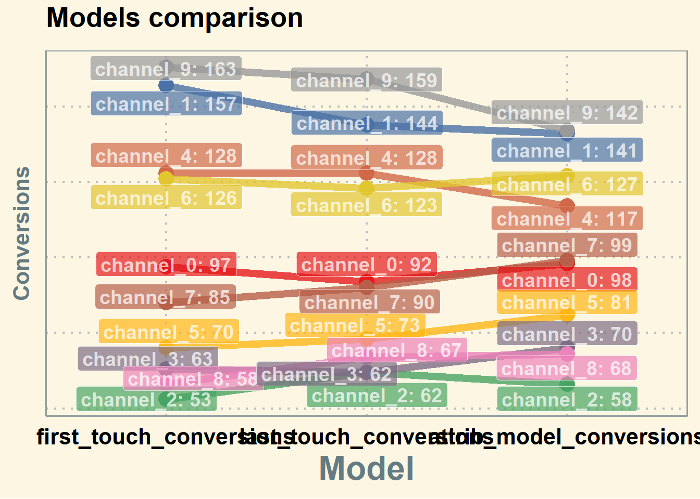
Additional concerns:
library(tidyverse)## Warning: package 'tidyverse' was built under R version 4.0.5## -- Attaching packages --------------------------------------- tidyverse 1.3.1 --## v tibble 3.1.2 v purrr 0.3.4
## v tidyr 1.1.3 v stringr 1.4.0
## v readr 2.0.1 v forcats 0.5.1## Warning: package 'readr' was built under R version 4.0.5## -- Conflicts ------------------------------------------ tidyverse_conflicts() --
## x ggplot2::alpha() masks kernlab::alpha()
## x plotly::arrange() masks plyr::arrange(), dplyr::arrange()
## x purrr::compact() masks plyr::compact()
## x plyr::count() masks dplyr::count()
## x purrr::cross() masks kernlab::cross()
## x tidyr::expand() masks reshape::expand()
## x plyr::failwith() masks dplyr::failwith()
## x plotly::filter() masks dplyr::filter(), stats::filter()
## x plyr::id() masks dplyr::id()
## x dplyr::lag() masks stats::lag()
## x plotly::mutate() masks plyr::mutate(), dplyr::mutate()
## x plotly::rename() masks plyr::rename(), dplyr::rename(), reshape::rename()
## x plotly::summarise() masks plyr::summarise(), dplyr::summarise()
## x plyr::summarize() masks dplyr::summarize()library(reshape2)
library(ggthemes)
library(ggrepel)
library(RColorBrewer)
library(ChannelAttribution)
library(markovchain)
library(visNetwork)
library(expm)## Loading required package: Matrix## Warning: package 'Matrix' was built under R version 4.0.5##
## Attaching package: 'Matrix'## The following objects are masked from 'package:tidyr':
##
## expand, pack, unpack## The following object is masked from 'package:reshape':
##
## expand##
## Attaching package: 'expm'## The following object is masked from 'package:Matrix':
##
## expmlibrary(stringr)
library(purrr)
library(purrrlyr)
##### simulating the "real" data #####
set.seed(454)
df_raw <- data.frame(customer_id = paste0('id', sample(c(1:20000), replace = TRUE)), date = as.Date(rbeta(80000, 0.7, 10) * 100, origin = "2016-01-01"), channel = paste0('channel_', sample(c(0:7), 80000, replace = TRUE, prob = c(0.2, 0.12, 0.03, 0.07, 0.15, 0.25, 0.1, 0.08))) ) %>%
group_by(customer_id) %>%
mutate(conversion = sample(c(0, 1), n(), prob = c(0.975, 0.025), replace = TRUE)) %>%
ungroup() %>%
dmap_at(c(1, 3), as.character) %>%
arrange(customer_id, date)
df_raw <- df_raw %>%
mutate(channel = ifelse(channel == 'channel_2', NA, channel))
head(df_raw, n = 2)## # A tibble: 2 x 4
## customer_id date channel conversion
## <chr> <date> <chr> <dbl>
## 1 id1 2016-01-02 channel_7 0
## 2 id1 2016-01-09 channel_4 015.1.2.2.1 1. Customers will be at different stage of purchase journey after each conversion.
First-time buyer’s journey will look different from n-times buyer’s (e.g., he will not start at website )
You can create your own code to split data into customers in different stages.
##### splitting paths #####
df_paths <- df_raw %>%
group_by(customer_id) %>%
mutate(path_no = ifelse(is.na(lag(cumsum(conversion))), 0, lag(cumsum(conversion))) + 1) %>% # add the path's serial number by using the lagged cumulative sum of conversion binary marks
ungroup()
head(df_paths)## # A tibble: 6 x 5
## customer_id date channel conversion path_no
## <chr> <date> <chr> <dbl> <dbl>
## 1 id1 2016-01-02 channel_7 0 1
## 2 id1 2016-01-09 channel_4 0 1
## 3 id1 2016-01-18 channel_5 1 1
## 4 id1 2016-01-20 channel_4 1 2
## 5 id100 2016-01-01 channel_0 0 1
## 6 id100 2016-01-01 channel_0 0 1attribution path for first-time buyers:
df_paths_1 <- df_paths %>%
filter(path_no == 1) %>%
select(-path_no)15.1.2.2.2 2. Handle missing data
We might have missing data on the channel or do not want to attribute a path (e.g., Direct Channel). We can either
- Remove NA/Channel
- Use the previous channel in its place.
In the first-order Markov chains, the results are unchanged because duplicated channels don’t affect the calculation.
##### replace some channels #####
df_path_1_clean <- df_paths_1 %>%
# removing NAs
filter(!is.na(channel)) %>%
# adding order of channels in the path
group_by(customer_id) %>%
mutate(ord = c(1:n()),
is_non_direct = ifelse(channel == 'channel_6', 0, 1),
is_non_direct_cum = cumsum(is_non_direct)) %>%
# removing Direct (channel_6) when it is the first in the path
filter(is_non_direct_cum != 0) %>%
# replacing Direct (channel_6) with the previous touch point
mutate(channel = ifelse(channel == 'channel_6', channel[which(channel != 'channel_6')][is_non_direct_cum], channel)) %>%
ungroup() %>%
select(-ord, -is_non_direct, -is_non_direct_cum)15.1.2.2.3 3. one vs. multi-channel paths
We need to calculate the weighted importance for each channel because the sum of the Removal Effects doesn’t equal to 1. In case we have a path with a unique channel, the Removal Effect and importance of this channel for that exact path is 1. However, weighting with other multi-channel paths will decrease the importance of one-channel occurrences. That means that, in case we have a channel that occurs in one-channel paths, usually it will be underestimated if attributed with multi-channel paths.
There is also a pretty straight logic behind splitting – for one-channel paths, we definitely know the channel that brought a conversion and we don’t need to distribute that value into other channels.
To account for one-channel path:
- Split data for paths with one or more unique channels
- Calculate total conversions for one-channel paths and compute the Markov model for multi-channel paths
- Summarize results for each channel.
##### one- and multi-channel paths #####
df_path_1_clean <- df_path_1_clean %>%
group_by(customer_id) %>%
mutate(uniq_channel_tag = ifelse(length(unique(channel)) == 1, TRUE, FALSE)) %>%
ungroup()
df_path_1_clean_uniq <- df_path_1_clean %>%
filter(uniq_channel_tag == TRUE) %>%
select(-uniq_channel_tag)
df_path_1_clean_multi <- df_path_1_clean %>%
filter(uniq_channel_tag == FALSE) %>%
select(-uniq_channel_tag)
### experiment ###
# attribution model for all paths
df_all_paths <- df_path_1_clean %>%
group_by(customer_id) %>%
summarise(path = paste(channel, collapse = ' > '),
conversion = sum(conversion)) %>%
ungroup() %>%
filter(conversion == 1)
mod_attrib <- markov_model(df_all_paths,
var_path = 'path',
var_conv = 'conversion',
out_more = TRUE)##
## Number of simulations: 100000 - Convergence reached: 1.28% < 5.00%
##
## Percentage of simulated paths that successfully end before maximum number of steps (19) is reached: 99.92%mod_attrib$removal_effects## channel_name removal_effects
## 1 channel_7 0.2812250
## 2 channel_4 0.4284428
## 3 channel_5 0.6056845
## 4 channel_0 0.5367294
## 5 channel_1 0.3820056
## 6 channel_3 0.2535028mod_attrib$result## channel_name total_conversions
## 1 channel_7 192.8653
## 2 channel_4 293.8279
## 3 channel_5 415.3811
## 4 channel_0 368.0913
## 5 channel_1 261.9811
## 6 channel_3 173.8533d_all <- data.frame(mod_attrib$result)
# attribution model for splitted multi and unique channel paths
df_multi_paths <- df_path_1_clean_multi %>%
group_by(customer_id) %>%
summarise(path = paste(channel, collapse = ' > '),
conversion = sum(conversion)) %>%
ungroup() %>%
filter(conversion == 1)
mod_attrib_alt <- markov_model(df_multi_paths,
var_path = 'path',
var_conv = 'conversion',
out_more = TRUE)##
## Number of simulations: 100000 - Convergence reached: 1.21% < 5.00%
##
## Percentage of simulated paths that successfully end before maximum number of steps (19) is reached: 99.59%mod_attrib_alt$removal_effects## channel_name removal_effects
## 1 channel_7 0.3265696
## 2 channel_4 0.4844802
## 3 channel_5 0.6526369
## 4 channel_0 0.5814164
## 5 channel_1 0.4343546
## 6 channel_3 0.2898041mod_attrib_alt$result## channel_name total_conversions
## 1 channel_7 150.9460
## 2 channel_4 223.9350
## 3 channel_5 301.6599
## 4 channel_0 268.7406
## 5 channel_1 200.7661
## 6 channel_3 133.9524# adding unique paths
df_uniq_paths <- df_path_1_clean_uniq %>%
filter(conversion == 1) %>%
group_by(channel) %>%
summarise(conversions = sum(conversion)) %>%
ungroup()
d_multi <- data.frame(mod_attrib_alt$result)
d_split <- full_join(d_multi, df_uniq_paths, by = c('channel_name' = 'channel')) %>%
mutate(result = total_conversions + conversions)
sum(d_all$total_conversions)## [1] 1706sum(d_split$result)## [1] 170615.1.2.2.4 4. Higher Order Markov Chains
Since the transition matrix stays the same in the first order Markov, having duplicates will not affect the result. But starting from the second order order Markov, you will have different results when skipping duplicates. In order to check the effect of skipping duplicates in the first-order Markov chain, we will use my script for “manual” calculation because the package skips duplicates automatically.
##### Higher order of Markov chains and consequent duplicated channels in the path #####
# computing transition matrix - 'manual' way
df_multi_paths_m <- df_multi_paths %>%
mutate(path = paste0('(start) > ', path, ' > (conversion)'))
m <- max(str_count(df_multi_paths_m$path, '>')) + 1 # maximum path length
df_multi_paths_cols <- reshape2::colsplit(string = df_multi_paths_m$path, pattern = ' > ', names = c(1:m))
colnames(df_multi_paths_cols) <- paste0('ord_', c(1:m))
df_multi_paths_cols[df_multi_paths_cols == ''] <- NA
df_res <- vector('list', ncol(df_multi_paths_cols) - 1)
for (i in c(1:(ncol(df_multi_paths_cols) - 1))) {
df_cache <- df_multi_paths_cols %>%
select(num_range("ord_", c(i, i+1))) %>%
na.omit() %>%
group_by_(.dots = c(paste0("ord_", c(i, i+1)))) %>%
summarise(n = n()) %>%
ungroup()
colnames(df_cache)[c(1, 2)] <- c('channel_from', 'channel_to')
df_res[[i]] <- df_cache
}## Warning: `group_by_()` was deprecated in dplyr 0.7.0.
## Please use `group_by()` instead.
## See vignette('programming') for more help## `summarise()` has grouped output by 'ord_1'. You can override using the `.groups` argument.## `summarise()` has grouped output by 'ord_2'. You can override using the `.groups` argument.## `summarise()` has grouped output by 'ord_3'. You can override using the `.groups` argument.## `summarise()` has grouped output by 'ord_4'. You can override using the `.groups` argument.## `summarise()` has grouped output by 'ord_5'. You can override using the `.groups` argument.## `summarise()` has grouped output by 'ord_6'. You can override using the `.groups` argument.## `summarise()` has grouped output by 'ord_7'. You can override using the `.groups` argument.## `summarise()` has grouped output by 'ord_8'. You can override using the `.groups` argument.## `summarise()` has grouped output by 'ord_9'. You can override using the `.groups` argument.## `summarise()` has grouped output by 'ord_10'. You can override using the `.groups` argument.## `summarise()` has grouped output by 'ord_11'. You can override using the `.groups` argument.## `summarise()` has grouped output by 'ord_12'. You can override using the `.groups` argument.## `summarise()` has grouped output by 'ord_13'. You can override using the `.groups` argument.## `summarise()` has grouped output by 'ord_14'. You can override using the `.groups` argument.## `summarise()` has grouped output by 'ord_15'. You can override using the `.groups` argument.## `summarise()` has grouped output by 'ord_16'. You can override using the `.groups` argument.## `summarise()` has grouped output by 'ord_17'. You can override using the `.groups` argument.## `summarise()` has grouped output by 'ord_18'. You can override using the `.groups` argument.## `summarise()` has grouped output by 'ord_19'. You can override using the `.groups` argument.## `summarise()` has grouped output by 'ord_20'. You can override using the `.groups` argument.## `summarise()` has grouped output by 'ord_21'. You can override using the `.groups` argument.## `summarise()` has grouped output by 'ord_22'. You can override using the `.groups` argument.df_res <- do.call('rbind', df_res)
df_res_tot <- df_res %>%
group_by(channel_from, channel_to) %>%
summarise(n = sum(n)) %>%
ungroup() %>%
group_by(channel_from) %>%
mutate(tot_n = sum(n),
perc = n / tot_n) %>%
ungroup()## `summarise()` has grouped output by 'channel_from'. You can override using the `.groups` argument.df_dummy <- data.frame(channel_from = c('(start)', '(conversion)', '(null)'),
channel_to = c('(start)', '(conversion)', '(null)'),
n = c(0, 0, 0),
tot_n = c(0, 0, 0),
perc = c(0, 1, 1))
df_res_tot <- rbind(df_res_tot, df_dummy)
# comparing transition matrices
trans_matrix_prob_m <- dcast(df_res_tot, channel_from ~ channel_to, value.var = 'perc', fun.aggregate = sum)
trans_matrix_prob <- data.frame(mod_attrib_alt$transition_matrix)
trans_matrix_prob <- dcast(trans_matrix_prob, channel_from ~ channel_to, value.var = 'transition_probability')
# computing attribution - 'manual' way
channels_list <- df_path_1_clean_multi %>%
filter(conversion == 1) %>%
distinct(channel)
channels_list <- c(channels_list$channel)
df_res_ini <- df_res_tot %>% select(channel_from, channel_to)
df_attrib <- vector('list', length(channels_list))
for (i in c(1:length(channels_list))) {
channel <- channels_list[i]
df_res1 <- df_res %>%
mutate(channel_from = ifelse(channel_from == channel, NA, channel_from),
channel_to = ifelse(channel_to == channel, '(null)', channel_to)) %>%
na.omit()
df_res_tot1 <- df_res1 %>%
group_by(channel_from, channel_to) %>%
summarise(n = sum(n)) %>%
ungroup() %>%
group_by(channel_from) %>%
mutate(tot_n = sum(n),
perc = n / tot_n) %>%
ungroup()
df_res_tot1 <- rbind(df_res_tot1, df_dummy) # adding (start), (conversion) and (null) states
df_res_tot1 <- left_join(df_res_ini, df_res_tot1, by = c('channel_from', 'channel_to'))
df_res_tot1[is.na(df_res_tot1)] <- 0
df_trans1 <- dcast(df_res_tot1, channel_from ~ channel_to, value.var = 'perc', fun.aggregate = sum)
trans_matrix_1 <- df_trans1
rownames(trans_matrix_1) <- trans_matrix_1$channel_from
trans_matrix_1 <- as.matrix(trans_matrix_1[, -1])
inist_n1 <- dcast(df_res_tot1, channel_from ~ channel_to, value.var = 'n', fun.aggregate = sum)
rownames(inist_n1) <- inist_n1$channel_from
inist_n1 <- as.matrix(inist_n1[, -1])
inist_n1[is.na(inist_n1)] <- 0
inist_n1 <- inist_n1['(start)', ]
res_num1 <- inist_n1 %*% (trans_matrix_1 %^% 100000)
df_cache <- data.frame(channel_name = channel,
conversions = as.numeric(res_num1[1, 1]))
df_attrib[[i]] <- df_cache
}## `summarise()` has grouped output by 'channel_from'. You can override using the `.groups` argument.## `summarise()` has grouped output by 'channel_from'. You can override using the `.groups` argument.
## `summarise()` has grouped output by 'channel_from'. You can override using the `.groups` argument.
## `summarise()` has grouped output by 'channel_from'. You can override using the `.groups` argument.
## `summarise()` has grouped output by 'channel_from'. You can override using the `.groups` argument.
## `summarise()` has grouped output by 'channel_from'. You can override using the `.groups` argument.df_attrib <- do.call('rbind', df_attrib)
# computing removal effect and results
tot_conv <- sum(df_multi_paths_m$conversion)
df_attrib <- df_attrib %>%
mutate(tot_conversions = sum(df_multi_paths_m$conversion),
impact = (tot_conversions - conversions) / tot_conversions,
tot_impact = sum(impact),
weighted_impact = impact / tot_impact,
attrib_model_conversions = round(tot_conversions * weighted_impact)
) %>%
select(channel_name, attrib_model_conversions)Since with different transition matrices, the removal effects and attribution results stay the same, in practice we skip duplicates.
15.1.2.2.5 5. Non-conversion paths
We incorporate null paths in this analysis.
##### Generic Probabilistic Model #####
df_all_paths_compl <- df_path_1_clean %>%
group_by(customer_id) %>%
summarise(path = paste(channel, collapse = ' > '),
conversion = sum(conversion)) %>%
ungroup() %>%
mutate(null_conversion = ifelse(conversion == 1, 0, 1))
mod_attrib_complete <- markov_model(
df_all_paths_compl,
var_path = 'path',
var_conv = 'conversion',
var_null = 'null_conversion',
out_more = TRUE
)##
## Number of simulations: 100000 - Convergence reached: 4.05% < 5.00%
##
## Percentage of simulated paths that successfully end before maximum number of steps (27) is reached: 99.91%trans_matrix_prob <- mod_attrib_complete$transition_matrix %>%
dmap_at(c(1, 2), as.character)
##### viz #####
edges <-
data.frame(
from = trans_matrix_prob$channel_from,
to = trans_matrix_prob$channel_to,
label = round(trans_matrix_prob$transition_probability, 2),
font.size = trans_matrix_prob$transition_probability * 100,
width = trans_matrix_prob$transition_probability * 15,
shadow = TRUE,
arrows = "to",
color = list(color = "#95cbee", highlight = "red")
)
nodes <- data_frame(id = c( c(trans_matrix_prob$channel_from), c(trans_matrix_prob$channel_to) )) %>%
distinct(id) %>%
arrange(id) %>%
mutate(
label = id,
color = ifelse(
label %in% c('(start)', '(conversion)'),
'#4ab04a',
ifelse(label == '(null)', '#ce472e', '#ffd73e')
),
shadow = TRUE,
shape = "box"
)## Warning: `data_frame()` was deprecated in tibble 1.1.0.
## Please use `tibble()` instead.visNetwork(nodes,
edges,
height = "2000px",
width = "100%",
main = "Generic Probabilistic model's Transition Matrix") %>%
visIgraphLayout(randomSeed = 123) %>%
visNodes(size = 5) %>%
visOptions(highlightNearest = TRUE)##### modeling states and conversions #####
# transition matrix preprocessing
trans_matrix_complete <- mod_attrib_complete$transition_matrix
trans_matrix_complete <- rbind(trans_matrix_complete, df_dummy %>%
mutate(transition_probability = perc) %>%
select(channel_from, channel_to, transition_probability))
trans_matrix_complete$channel_to <- factor(trans_matrix_complete$channel_to, levels = c(levels(trans_matrix_complete$channel_from)))
trans_matrix_complete <- dcast(trans_matrix_complete, channel_from ~ channel_to, value.var = 'transition_probability')
trans_matrix_complete[is.na(trans_matrix_complete)] <- 0
rownames(trans_matrix_complete) <- trans_matrix_complete$channel_from
trans_matrix_complete <- as.matrix(trans_matrix_complete[, -1])
# creating empty matrix for modeling
model_mtrx <- matrix(data = 0,
nrow = nrow(trans_matrix_complete), ncol = 1,
dimnames = list(c(rownames(trans_matrix_complete)), '(start)'))
# adding modeling number of visits
model_mtrx['channel_5', ] <- 1000
c(model_mtrx) %*% (trans_matrix_complete %^% 5) # after 5 steps
c(model_mtrx) %*% (trans_matrix_complete %^% 100000) # after 100000 steps15.1.2.2.6 6. Customer Journey Duration
##### Customer journey duration #####
# computing time lapses from the first contact to conversion/last contact
df_multi_paths_tl <- df_path_1_clean_multi %>%
group_by(customer_id) %>%
summarise(path = paste(channel, collapse = ' > '),
first_touch_date = min(date),
last_touch_date = max(date),
tot_time_lapse = round(as.numeric(last_touch_date - first_touch_date)),
conversion = sum(conversion)) %>%
ungroup()
# distribution plot
ggplot(df_multi_paths_tl %>% filter(conversion == 1), aes(x = tot_time_lapse)) +
theme_minimal() +
geom_histogram(fill = '#4e79a7', binwidth = 1)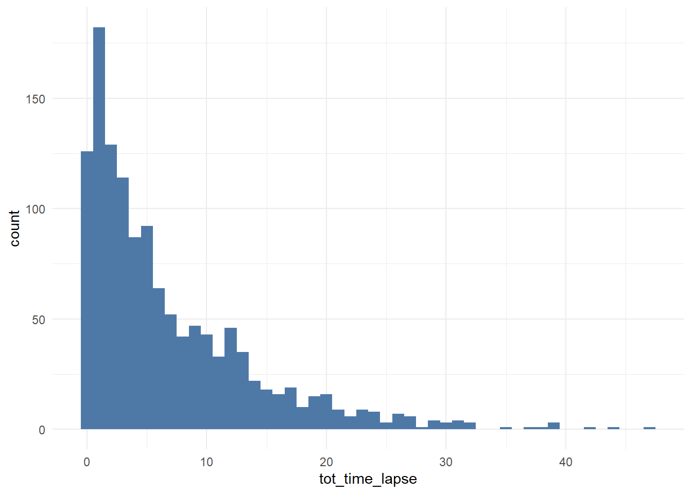
# cumulative distribution plot
ggplot(df_multi_paths_tl %>% filter(conversion == 1), aes(x = tot_time_lapse)) +
theme_minimal() +
stat_ecdf(geom = 'step', color = '#4e79a7', size = 2, alpha = 0.7) +
geom_hline(yintercept = 0.95, color = '#e15759', size = 1.5) +
geom_vline(xintercept = 23, color = '#e15759', size = 1.5, linetype = 2)
### for generic probabilistic model ###
df_multi_paths_tl_1 <- reshape2::melt(df_multi_paths_tl[c(1:50), ] %>% select(customer_id, first_touch_date, last_touch_date, conversion),
id.vars = c('customer_id', 'conversion'),
value.name = 'touch_date') %>%
arrange(customer_id)
rep_date <- as.Date('2016-01-10', format = '%Y-%m-%d')
ggplot(df_multi_paths_tl_1, aes(x = as.factor(customer_id), y = touch_date, color = factor(conversion), group = customer_id)) +
theme_minimal() +
coord_flip() +
geom_point(size = 2) +
geom_line(size = 0.5, color = 'darkgrey') +
geom_hline(yintercept = as.numeric(rep_date), color = '#e15759', size = 2) +
geom_rect(xmin = -Inf, xmax = Inf, ymin = as.numeric(rep_date), ymax = Inf, alpha = 0.01, color = 'white', fill = 'white') +
theme(legend.position = 'bottom',
panel.border = element_blank(),
panel.grid.major = element_blank(),
panel.grid.minor = element_blank(),
axis.ticks.x = element_blank(),
axis.ticks.y = element_blank()) +
guides(colour = guide_legend(override.aes = list(size = 5)))
df_multi_paths_tl_2 <- df_path_1_clean_multi %>%
group_by(customer_id) %>%
mutate(prev_touch_date = lag(date)) %>%
ungroup() %>%
filter(conversion == 1) %>%
mutate(prev_time_lapse = round(as.numeric(date - prev_touch_date)))
# distribution
ggplot(df_multi_paths_tl_2, aes(x = prev_time_lapse)) +
theme_minimal() +
geom_histogram(fill = '#4e79a7', binwidth = 1)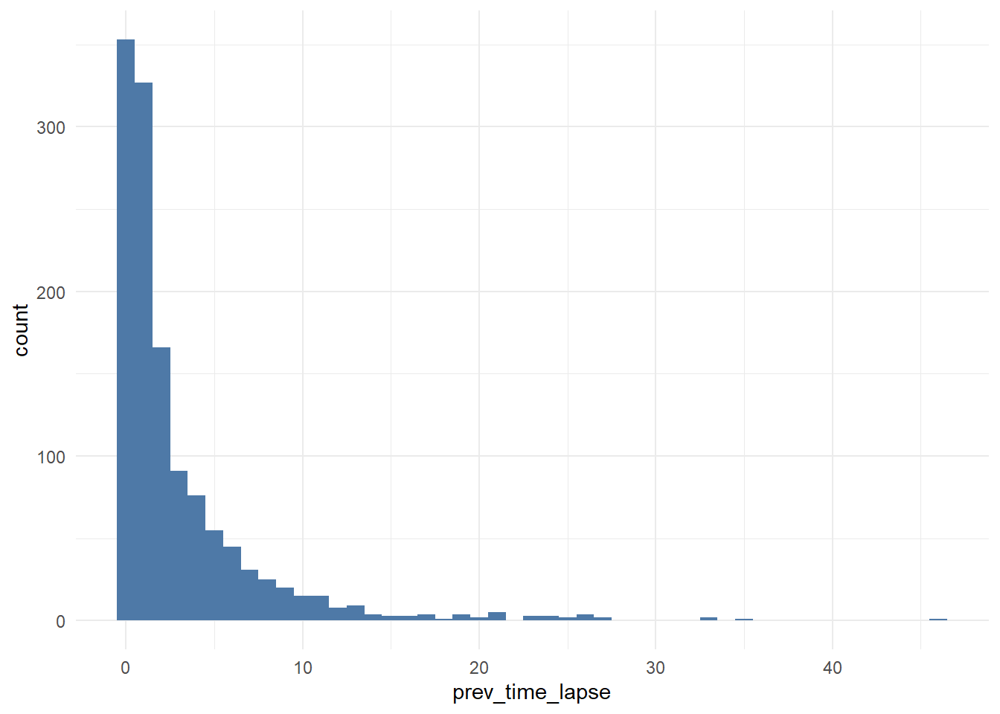
# cumulative distribution
ggplot(df_multi_paths_tl_2, aes(x = prev_time_lapse)) +
theme_minimal() +
stat_ecdf(geom = 'step', color = '#4e79a7', size = 2, alpha = 0.7) +
geom_hline(yintercept = 0.95, color = '#e15759', size = 1.5) +
geom_vline(xintercept = 12, color = '#e15759', size = 1.5, linetype = 2)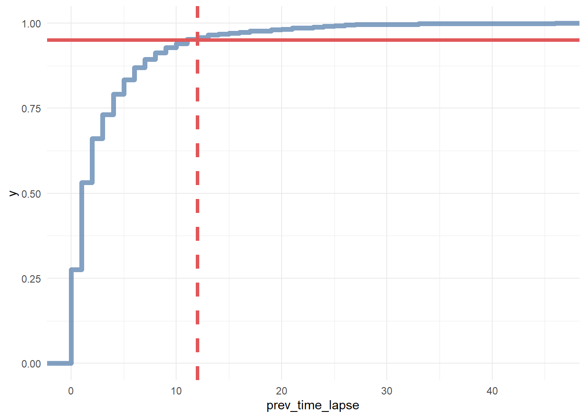
In conclusion, we say that if a customer made contact with a marketing channel the first time for more than 23 days and/or hasn’t made contact with a marketing channel for the last 12 days, then it is a fruitless path.
# extracting data for generic model
df_multi_paths_tl_3 <- df_path_1_clean_multi %>%
group_by(customer_id) %>%
mutate(prev_time_lapse = round(as.numeric(date - lag(date)))) %>%
summarise(path = paste(channel, collapse = ' > '),
tot_time_lapse = round(as.numeric(max(date) - min(date))),
prev_touch_tl = prev_time_lapse[which(max(date) == date)],
conversion = sum(conversion)) %>%
ungroup() %>%
mutate(is_fruitless = ifelse(conversion == 0 & tot_time_lapse > 20 & prev_touch_tl > 10, TRUE, FALSE)) %>%
filter(conversion == 1 | is_fruitless == TRUE)15.1.2.2.7 7. Channel Comparisons
We can use markov_model with var_value to compare the gross margin among channels.
15.1.2.3 Example 3
This example is from Bounteus
# Install these libraries (only do this once)
# install.packages("ChannelAttribution")
# install.packages("reshape")
# install.packages("ggplot2")
# Load these libraries (every time you start RStudio)
library(ChannelAttribution)
library(reshape)
library(ggplot2)
# This loads the demo data. You can load your own data by importing a dataset or reading in a file
data(PathData)- Path Variable – The steps a user takes across sessions to comprise the sequences.
- Conversion Variable – How many times a user converted.
- Value Variable – The monetary value of each marketing channel.
- Null Variable – How many times a user exited.
Build the simple heuristic models (First Click / first_touch, Last Click / last_touch, and Linear Attribution / linear_touch):
H <- heuristic_models(Data, 'path', 'total_conversions', var_value='total_conversion_value')Markov model
M <- markov_model(Data, 'path', 'total_conversions', var_value='total_conversion_value', order = 1) ##
## Number of simulations: 100000 - Convergence reached: 1.46% < 5.00%
##
## Percentage of simulated paths that successfully end before maximum number of steps (46) is reached: 99.99%# Merges the two data frames on the "channel_name" column.
R <- merge(H, M, by='channel_name')
# Selects only relevant columns
R1 <- R[, (colnames(R)%in%c('channel_name', 'first_touch_conversions', 'last_touch_conversions', 'linear_touch_conversions', 'total_conversion'))]
# Renames the columns
colnames(R1) <- c('channel_name', 'first_touch', 'last_touch', 'linear_touch', 'markov_model')
# Transforms the dataset into a data frame that ggplot2 can use to graph the outcomes
R1 <- melt(R1, id='channel_name')Plot the total conversions
ggplot(R1, aes(channel_name, value, fill = variable)) +
geom_bar(stat='identity', position='dodge') +
ggtitle('TOTAL CONVERSIONS') +
theme(axis.title.x = element_text(vjust = -2)) +
theme(axis.title.y = element_text(vjust = +2)) +
theme(title = element_text(size = 16)) +
theme(plot.title=element_text(size = 20)) +
ylab("")
The “Total Conversions” bar chart shows you how many conversions were attributed to each channel (i.e. alpha, beta, etc.) for each method (i.e. first_touch, last_touch, etc.).
R2 <- R[, (colnames(R)%in%c('channel_name', 'first_touch_value', 'last_touch_value', 'linear_touch_value', 'total_conversion_value'))]
colnames(R2) <- c('channel_name', 'first_touch', 'last_touch', 'linear_touch', 'markov_model')
R2 <- melt(R2, id='channel_name')
ggplot(R2, aes(channel_name, value, fill = variable)) +
geom_bar(stat='identity', position='dodge') +
ggtitle('TOTAL VALUE') +
theme(axis.title.x = element_text(vjust = -2)) +
theme(axis.title.y = element_text(vjust = +2)) +
theme(title = element_text(size = 16)) +
theme(plot.title=element_text(size = 20)) +
ylab("")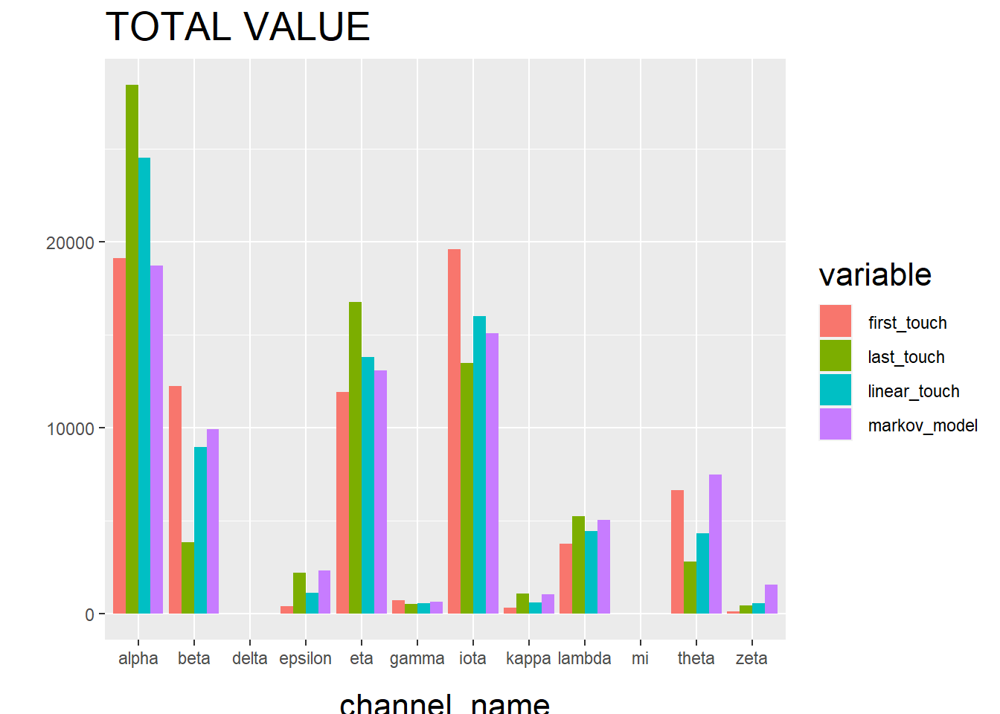
The “Total Conversion Value” bar chart shows you monetary value that can be attributed to each channel from a conversion.
15.2 Sales Funnel
15.2.1 Example 1
This example is based on Sergey Bryl
\[ Awareness \to Interest \to Desire \to Action \]
Step in the funnel:
- 0 step (necessary condition) – customer visits a site for the first time
- 1st step (awareness) – visits two site’s pages
- 2nd step (interest) – reviews a product page
- 3rd step (desire) – adds a product to the shopping cart
- 4th step (action) – completes purchase
Simulate data
library(tidyverse)
library(purrrlyr)
library(reshape2)
##### simulating the "real" data #####
set.seed(454)
df_raw <-
data.frame(
customer_id = paste0('id', sample(c(1:5000), replace = TRUE)),
date = as.POSIXct(
rbeta(10000, 0.7, 10) * 10000000,
origin = '2017-01-01',
tz = "UTC"
),
channel = paste0('channel_', sample(
c(0:7),
10000,
replace = TRUE,
prob = c(0.2, 0.12, 0.03, 0.07, 0.15, 0.25, 0.1, 0.08)
)),
site_visit = 1
) %>%
mutate(
two_pages_visit = sample(c(0, 1), 10000, replace = TRUE, prob = c(0.8, 0.2)),
product_page_visit = ifelse(
two_pages_visit == 1,
sample(
c(0, 1),
length(two_pages_visit[which(two_pages_visit == 1)]),
replace = TRUE,
prob = c(0.75, 0.25)
),
0
),
add_to_cart = ifelse(
product_page_visit == 1,
sample(
c(0, 1),
length(product_page_visit[which(product_page_visit == 1)]),
replace = TRUE,
prob = c(0.1, 0.9)
),
0
),
purchase = ifelse(add_to_cart == 1,
sample(
c(0, 1),
length(add_to_cart[which(add_to_cart == 1)]),
replace = TRUE,
prob = c(0.02, 0.98)
),
0)
) %>%
dmap_at(c('customer_id', 'channel'), as.character) %>%
arrange(date) %>%
mutate(session_id = row_number()) %>%
arrange(customer_id, session_id)
df_raw <-
reshape2::melt(
df_raw,
id.vars = c('customer_id', 'date', 'channel', 'session_id'),
value.name = "trigger",
variable.name = 'event'
) %>%
filter(trigger == 1) %>%
select(-trigger) %>%
arrange(customer_id, date)Preprocessing
### removing not first events ###
df_customers <- df_raw %>%
group_by(customer_id, event) %>%
filter(date == min(date)) %>%
ungroup()Assumption: all customers are first-time buyers. Hence, every next purchase as an event will be removed with the above code.
Calculate channel probability
### Sales Funnel probabilities ###
sf_probs <- df_customers %>%
group_by(event) %>%
summarise(customers_on_step = n()) %>%
ungroup() %>%
mutate(
sf_probs = round(customers_on_step / customers_on_step[event == 'site_visit'], 3),
sf_probs_step = round(customers_on_step / lag(customers_on_step), 3),
sf_probs_step = ifelse(is.na(sf_probs_step) == TRUE, 1, sf_probs_step),
sf_importance = 1 - sf_probs_step,
sf_importance_weighted = sf_importance / sum(sf_importance)
)Visualization
### Sales Funnel visualization ###
df_customers_plot <- df_customers %>%
group_by(event) %>%
arrange(channel) %>%
mutate(pl = row_number()) %>%
ungroup() %>%
mutate(
pl_new = case_when(
event == 'two_pages_visit' ~ round((max(pl[event == 'site_visit']) - max(pl[event == 'two_pages_visit'])) / 2),
event == 'product_page_visit' ~ round((max(pl[event == 'site_visit']) - max(pl[event == 'product_page_visit'])) / 2),
event == 'add_to_cart' ~ round((max(pl[event == 'site_visit']) - max(pl[event == 'add_to_cart'])) / 2),
event == 'purchase' ~ round((max(pl[event == 'site_visit']) - max(pl[event == 'purchase'])) / 2),
TRUE ~ 0
),
pl = pl + pl_new
)
df_customers_plot$event <-
factor(
df_customers_plot$event,
levels = c(
'purchase',
'add_to_cart',
'product_page_visit',
'two_pages_visit',
'site_visit'
)
)
# color palette
cols <- c(
'#4e79a7',
'#f28e2b',
'#e15759',
'#76b7b2',
'#59a14f',
'#edc948',
'#b07aa1',
'#ff9da7',
'#9c755f',
'#bab0ac'
)
ggplot(df_customers_plot, aes(x = event, y = pl)) +
theme_minimal() +
scale_colour_manual(values = cols) +
coord_flip() +
geom_line(aes(group = customer_id, color = as.factor(channel)), size = 0.05) +
geom_text(
data = sf_probs,
aes(
x = event,
y = 1,
label = paste0(sf_probs * 100, '%')
),
size = 4,
fontface = 'bold'
) +
guides(color = guide_legend(override.aes = list(size = 2))) +
theme(
legend.position = 'bottom',
legend.direction = "horizontal",
panel.grid.major.x = element_blank(),
panel.grid.minor = element_blank(),
plot.title = element_text(
size = 20,
face = "bold",
vjust = 2,
color = 'black',
lineheight = 0.8
),
axis.title.y = element_text(size = 16, face = "bold"),
axis.title.x = element_blank(),
axis.text.x = element_blank(),
axis.text.y = element_text(
size = 8,
angle = 90,
hjust = 0.5,
vjust = 0.5,
face = "plain"
)
) +
ggtitle("Sales Funnel visualization - all customers journeys")Calculate attribution
### computing attribution ###
df_attrib <- df_customers %>%
# removing customers without purchase
group_by(customer_id) %>%
filter(any(as.character(event) == 'purchase')) %>%
ungroup() %>%
# joining step's importances
left_join(., sf_probs %>% select(event, sf_importance_weighted), by = 'event') %>%
group_by(channel) %>%
summarise(tot_attribution = sum(sf_importance_weighted)) %>%
ungroup()15.2.2 Example 2
Code from Sergey Bryl
library(dplyr)
library(ggplot2)
library(reshape2)
# creating a data samples
# content
df.content <- data.frame(
content = c(
'main',
'ad landing',
'product 1',
'product 2',
'product 3',
'product 4',
'shopping cart',
'thank you page'
),
step = c(
'awareness',
'awareness',
'interest',
'interest',
'interest',
'interest',
'desire',
'action'
),
number = c(150000, 80000,
80000, 40000, 35000, 25000,
130000,
120000)
)
# customers
df.customers <- data.frame(
content = c('new', 'engaged', 'loyal'),
step = c('new', 'engaged', 'loyal'),
number = c(25000, 40000, 55000)
)
# combining two data sets
df.all <- rbind(df.content, df.customers)
# calculating dummies, max and min values of X for plotting
df.all <- df.all %>%
group_by(step) %>%
mutate(totnum = sum(number)) %>%
ungroup() %>%
mutate(dum = (max(totnum) - totnum) / 2,
maxx = totnum + dum,
minx = dum)
# data frame for plotting funnel lines
df.lines <- df.all %>%
distinct(step, maxx, minx)
# data frame with dummies
df.dum <- df.all %>%
distinct(step, dum) %>%
mutate(content = 'dummy',
number = dum) %>%
select(content, step, number)
# data frame with rates
conv <- df.all$totnum[df.all$step == 'action']
df.rates <- df.all %>%
distinct(step, totnum) %>%
mutate(
prevnum = lag(totnum),
rate = ifelse(
step == 'new' | step == 'engaged' | step == 'loyal',
round(totnum / conv, 3),
round(totnum / prevnum, 3)
)
) %>%
select(step, rate)
df.rates <- na.omit(df.rates)
# creting final data frame
df.all <- df.all %>%
select(content, step, number)
df.all <- rbind(df.all, df.dum)
# defining order of steps
df.all$step <-
factor(
df.all$step,
levels = c(
'loyal',
'engaged',
'new',
'action',
'desire',
'interest',
'awareness'
)
)
df.all <- df.all %>%
arrange(desc(step))
list1 <- df.all %>% distinct(content) %>%
filter(content != 'dummy')
df.all$content <-
factor(df.all$content, levels = c(as.character(list1$content), 'dummy'))
# calculating position of labels
df.all <- df.all %>%
arrange(step, desc(content)) %>%
group_by(step) %>%
mutate(pos = cumsum(number) - 0.5 * number) %>%
ungroup()
# creating custom palette with 'white' color for dummies
cols <- c(
"#fec44f",
"#fc9272",
"#a1d99b",
"#fee0d2",
"#2ca25f",
"#8856a7",
"#43a2ca",
"#fdbb84",
"#e34a33",
"#a6bddb",
"#dd1c77",
"#ffffff"
)
# plotting chart
ggplot() +
theme_minimal() +
coord_flip() +
scale_fill_manual(values = cols) +
geom_bar(
data = df.all,
aes(x = step, y = number, fill = content),
stat = "identity",
width = 1
) +
geom_text(
data = df.all[df.all$content != 'dummy',],
aes(
x = step,
y = pos,
label = paste0(content, '-', number / 1000, 'K')
),
size = 4,
color = 'white',
fontface = "bold"
) +
geom_ribbon(data = df.lines,
aes(
x = step,
ymax = max(maxx),
ymin = maxx,
group = 1
),
fill = 'white') +
geom_line(
data = df.lines,
aes(x = step, y = maxx, group = 1),
color = 'darkred',
size = 4
) +
geom_ribbon(data = df.lines,
aes(
x = step,
ymax = minx,
ymin = min(minx),
group = 1
),
fill = 'white') +
geom_line(
data = df.lines,
aes(x = step, y = minx, group = 1),
color = 'darkred',
size = 4
) +
geom_text(
data = df.rates,
aes(
x = step,
y = (df.lines$minx[-1]),
label = paste0(rate * 100, '%')
),
hjust = 1.2,
color = 'darkblue',
fontface = "bold"
) +
theme(
legend.position = 'none',
axis.ticks = element_blank(),
axis.text.x = element_blank(),
axis.title.x = element_blank()
)
15.3 RFM
RFM is calculated as:
- A recency score is assigned to each customer based on date of most recent purchase.
- A frequency ranking is assigned based on frequency of purchases
- Monetary score is assigned based on the total revenue generated by the customer in the period under consideration for the analysis
library("rfm")
rfm_data_customer## # A tibble: 39,999 x 5
## customer_id revenue most_recent_visit number_of_orders recency_days
## <dbl> <dbl> <date> <dbl> <dbl>
## 1 22086 777 2006-05-14 9 232
## 2 2290 1555 2006-09-08 16 115
## 3 26377 336 2006-11-19 5 43
## 4 24650 1189 2006-10-29 12 64
## 5 12883 1229 2006-12-09 12 23
## 6 2119 929 2006-10-21 11 72
## 7 31283 1569 2006-09-11 17 112
## 8 33815 778 2006-08-12 11 142
## 9 15972 641 2006-11-19 9 43
## 10 27650 970 2006-08-23 10 131
## # ... with 39,989 more rows# a unique customer id
# number of transaction/order
# total revenue from the customer
# number of days since the last visit
rfm_data_orders # to generate data_orders, use rfm_table_order()## # A tibble: 4,906 x 3
## customer_id order_date revenue
## <chr> <date> <dbl>
## 1 Mr. Brion Stark Sr. 2004-12-20 32
## 2 Ethyl Botsford 2005-05-02 36
## 3 Hosteen Jacobi 2004-03-06 116
## 4 Mr. Edw Frami 2006-03-15 99
## 5 Josef Lemke 2006-08-14 76
## 6 Julisa Halvorson 2005-05-28 56
## 7 Judyth Lueilwitz 2005-03-09 108
## 8 Mr. Mekhi Goyette 2005-09-23 183
## 9 Hansford Moen PhD 2005-09-07 30
## 10 Fount Flatley 2006-04-12 13
## # ... with 4,896 more rows# unique customer id
# date of transaction
# and amount
# customer_id: name of the customer id column
# order_date: name of the transaction date column
# revenue: name of the transaction amount column
# analysis_date: date of analysis
# recency_bins: number of rankings for recency score (default is 5)
# frequency_bins: number of rankings for frequency score (default is 5)
# monetary_bins: number of rankings for monetary score (default is 5)analysis_date <- lubridate::as_date('2007-01-01')
rfm_result <-
rfm_table_customer(
rfm_data_customer,
customer_id,
number_of_orders,
recency_days,
revenue,
analysis_date
)
rfm_result## # A tibble: 39,999 x 8
## customer_id recency_days transaction_count amount recency_score
## <dbl> <dbl> <dbl> <dbl> <int>
## 1 22086 232 9 777 2
## 2 2290 115 16 1555 4
## 3 26377 43 5 336 5
## 4 24650 64 12 1189 5
## 5 12883 23 12 1229 5
## 6 2119 72 11 929 5
## 7 31283 112 17 1569 4
## 8 33815 142 11 778 3
## 9 15972 43 9 641 5
## 10 27650 131 10 970 3
## # ... with 39,989 more rows, and 3 more variables: frequency_score <int>,
## # monetary_score <int>, rfm_score <dbl># customer_id: unique customer id
# date_most_recent: date of most recent visit
# recency_days: days since the most recent visit
# transaction_count: number of transactions of the customer
# amount: total revenue generated by the customer
# recency_score: recency score of the customer
# frequency_score: frequency score of the customer
# monetary_score: monetary score of the customer
# rfm_score: RFM score of the customer15.3.1 Visualization
heat map shows the average monetary value for different categories of recency and frequency scores
rfm_heatmap(rfm_result)
bar chart
rfm_bar_chart(rfm_result)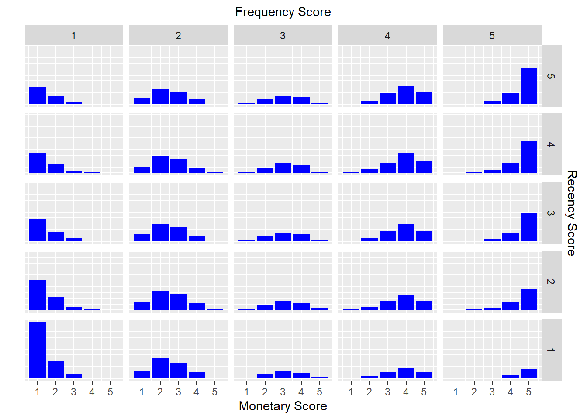
histogram
rfm_histograms(rfm_result)
Customers by Orders
rfm_order_dist(rfm_result)
Scatter Plots
rfm_rm_plot(rfm_result)
rfm_fm_plot(rfm_result)
rfm_rf_plot(rfm_result)
15.3.2 RFMC
- clumpiness is defined as the degree of nonconformity to equal spacing (Zhang, Bradlow, and Small 2015)
In finance, clumpiness can indicate high growth potential but large risk, Hence, it can be incorporated into firm acquisition decision. Originated from sports phenomenon - hot hand effect - where success leads to more success.
In statistics, clumpiness is the serial dependence or “non-constant propensity, specifically temporary elevations of propensity— i.e. periods during which one event is more likely to occur than the average level.” (Zhang, Bradlow, and Small 2013)
Properties of clumpiness:
- Min (max) if events are equally spaced (close to one another)
- Continuity
- Convergence
15.4 Customer Segmentation
15.4.1 Example 1
Continue from the RFM
segment_names <-
c(
"Premium",
"Loyal Customers",
"Potential Loyalist",
"New Customers",
"Promising",
"Need Attention",
"About To Churn",
"At Risk",
"High Value Churners/Resurrection",
"Low Value Churners"
)
recency_lower <- c(4, 2, 3, 4, 3, 2, 2, 1, 1, 1)
recency_upper <- c(5, 5, 5, 5, 4, 3, 3, 2, 1, 2)
frequency_lower <- c(4, 3, 1, 1, 1, 2, 1, 2, 4, 1)
frequency_upper <- c(5, 5, 3, 1, 1, 3, 2, 5, 5, 2)
monetary_lower <- c(4, 3, 1, 1, 1, 2, 1, 2, 4, 1)
monetary_upper <- c(5, 5, 3, 1, 1, 3, 2, 5, 5, 2)
rfm_segments <-
rfm_segment(
rfm_result,
segment_names,
recency_lower,
recency_upper,
frequency_lower,
frequency_upper,
monetary_lower,
monetary_upper
)
head(rfm_segments, n = 5)
rfm_segments %>%
count(rfm_segments$segment) %>%
arrange(desc(n)) %>%
rename(Count = n)
# median recency
rfm_plot_median_recency(rfm_segments)
# median frequency
rfm_plot_median_frequency(rfm_segments)
# Median Monetary Value
rfm_plot_median_monetary(rfm_segments)15.4.2 Example 2
Example by Sergey
15.4.2.1 LifeCycle Grids
# loading libraries
library(dplyr)
library(reshape2)
library(ggplot2)
# creating data sample
set.seed(10)
data <- data.frame(
orderId = sample(c(1:1000), 5000, replace = TRUE),
product = sample(
c('NULL', 'a', 'b', 'c'),
5000,
replace = TRUE,
prob = c(0.15, 0.65, 0.3, 0.15)
)
)
order <- data.frame(orderId = c(1:1000),
clientId = sample(c(1:300), 1000, replace = TRUE))
gender <- data.frame(clientId = c(1:300),
gender = sample(
c('male', 'female'),
300,
replace = TRUE,
prob = c(0.40, 0.60)
))
date <- data.frame(orderId = c(1:1000),
orderdate = sample((1:100), 1000, replace = TRUE))
orders <- merge(data, order, by = 'orderId')
orders <- merge(orders, gender, by = 'clientId')
orders <- merge(orders, date, by = 'orderId')
orders <- orders[orders$product != 'NULL',]
orders$orderdate <- as.Date(orders$orderdate, origin = "2012-01-01")
rm(data, date, order, gender)# reporting date
today <- as.Date('2012-04-11', format = '%Y-%m-%d')
# processing data
orders <-
dcast(
orders,
orderId + clientId + gender + orderdate ~ product,
value.var = 'product',
fun.aggregate = length
)
orders <- orders %>%
group_by(clientId) %>%
mutate(frequency = n(),
recency = as.numeric(today - orderdate)) %>%
filter(orderdate == max(orderdate)) %>%
filter(orderId == max(orderId)) %>%
ungroup()
# exploratory analysis
ggplot(orders, aes(x = frequency)) +
theme_bw() +
scale_x_continuous(breaks = c(1:10)) +
geom_bar(alpha = 0.6, width = 1) +
ggtitle("Dustribution by frequency")
ggplot(orders, aes(x = recency)) +
theme_bw() +
geom_bar(alpha = 0.6, width = 1) +
ggtitle("Dustribution by recency")
orders.segm <- orders %>%
mutate(segm.freq = ifelse(between(frequency, 1, 1), '1',
ifelse(
between(frequency, 2, 2), '2',
ifelse(between(frequency, 3, 3), '3',
ifelse(
between(frequency, 4, 4), '4',
ifelse(between(frequency, 5, 5), '5', '>5')
))
))) %>%
mutate(segm.rec = ifelse(
between(recency, 0, 6),
'0-6 days',
ifelse(
between(recency, 7, 13),
'7-13 days',
ifelse(
between(recency, 14, 19),
'14-19 days',
ifelse(
between(recency, 20, 45),
'20-45 days',
ifelse(between(recency, 46, 80), '46-80 days', '>80 days')
)
)
)
)) %>%
# creating last cart feature
mutate(cart = paste(
ifelse(a != 0, 'a', ''),
ifelse(b != 0, 'b', ''),
ifelse(c != 0, 'c', ''),
sep = ''
)) %>%
arrange(clientId)
# defining order of boundaries
orders.segm$segm.freq <-
factor(orders.segm$segm.freq, levels = c('>5', '5', '4', '3', '2', '1'))
orders.segm$segm.rec <-
factor(
orders.segm$segm.rec,
levels = c(
'>80 days',
'46-80 days',
'20-45 days',
'14-19 days',
'7-13 days',
'0-6 days'
)
)lcg <- orders.segm %>%
group_by(segm.rec, segm.freq) %>%
summarise(quantity = n()) %>%
mutate(client = 'client') %>%
ungroup()## `summarise()` has grouped output by 'segm.rec'. You can override using the `.groups` argument.lcg.matrix <-
dcast(lcg,
segm.freq ~ segm.rec,
value.var = 'quantity',
fun.aggregate = sum)
ggplot(lcg, aes(x = client, y = quantity, fill = quantity)) +
theme_bw() +
theme(panel.grid = element_blank()) +
geom_bar(stat = 'identity', alpha = 0.6) +
geom_text(aes(y = max(quantity) / 2, label = quantity), size = 4) +
facet_grid(segm.freq ~ segm.rec) +
ggtitle("LifeCycle Grids")
lcg.adv <- lcg %>%
mutate(
rec.type = ifelse(
segm.rec %in% c("> 80 days", "46 - 80 days", "20 - 45 days"),
"not recent",
"recent"
),
freq.type = ifelse(segm.freq %in% c(" >
5", "5", "4"), "frequent", "infrequent"),
customer.type = interaction(rec.type, freq.type)
)
ggplot(lcg.adv, aes(x = client, y = quantity, fill = customer.type)) +
theme_bw() +
theme(panel.grid = element_blank()) +
facet_grid(segm.freq ~ segm.rec) +
geom_bar(stat = 'identity', alpha = 0.6) +
geom_text(aes(y = max(quantity) / 2, label = quantity), size = 4) +
ggtitle("LifeCycle Grids")
# with background
ggplot(lcg.adv, aes(x = client, y = quantity, fill = customer.type)) +
theme_bw() +
theme(panel.grid = element_blank()) +
geom_rect(
aes(fill = customer.type),
xmin = -Inf,
xmax = Inf,
ymin = -Inf,
ymax = Inf,
alpha = 0.1
) +
facet_grid(segm.freq ~ segm.rec) +
geom_bar(stat = 'identity', alpha = 0.7) +
geom_text(aes(y = max(quantity) / 2, label = quantity), size = 4) +
ggtitle("LifeCycle Grids")
lcg.sub <- orders.segm %>%
group_by(gender, cart, segm.rec, segm.freq) %>%
summarise(quantity = n()) %>%
mutate(client = 'client') %>%
ungroup()## `summarise()` has grouped output by 'gender', 'cart', 'segm.rec'. You can override using the `.groups` argument.ggplot(lcg.sub, aes(x = client, y = quantity, fill = gender)) +
theme_bw() +
scale_fill_brewer(palette = 'Set1') +
theme(panel.grid = element_blank()) +
geom_bar(stat = 'identity',
position = 'fill' ,
alpha = 0.6) +
facet_grid(segm.freq ~ segm.rec) +
ggtitle("LifeCycle Grids by gender (propotion)")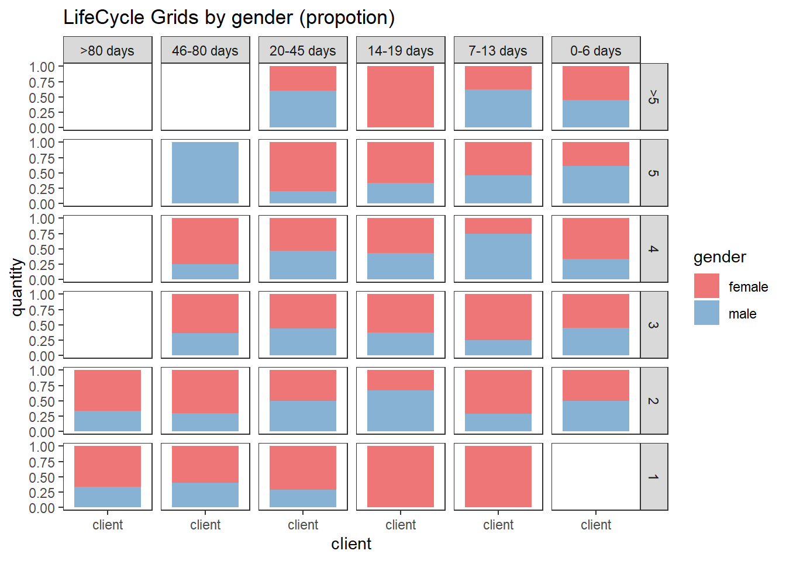
ggplot(lcg.sub, aes(x = gender, y = quantity, fill = cart)) +
theme_bw() +
scale_fill_brewer(palette = 'Set1') +
theme(panel.grid = element_blank()) +
geom_bar(stat = 'identity',
position = 'fill' ,
alpha = 0.6) +
facet_grid(segm.freq ~ segm.rec) +
ggtitle("LifeCycle Grids by gender and last cart (propotion)")
15.4.2.2 CLV & CAC
calculate customer acquisition cost (CAC) and customer lifetime value (CLV)
# loading libraries
library(dplyr)
library(reshape2)
library(ggplot2)
# creating data sample
set.seed(10)
data <- data.frame(
orderId = sample(c(1:1000), 5000, replace = TRUE),
product = sample(
c('NULL', 'a', 'b', 'c'),
5000,
replace = TRUE,
prob = c(0.15, 0.65, 0.3, 0.15)
)
)
order <- data.frame(orderId = c(1:1000),
clientId = sample(c(1:300), 1000, replace = TRUE))
gender <- data.frame(clientId = c(1:300),
gender = sample(
c('male', 'female'),
300,
replace = TRUE,
prob = c(0.40, 0.60)
))
date <- data.frame(orderId = c(1:1000),
orderdate = sample((1:100), 1000, replace = TRUE))
orders <- merge(data, order, by = 'orderId')
orders <- merge(orders, gender, by = 'clientId')
orders <- merge(orders, date, by = 'orderId')
orders <- orders[orders$product != 'NULL', ]
orders$orderdate <- as.Date(orders$orderdate, origin = "2012-01-01")
# creating data frames with CAC and Gross margin
cac <-
data.frame(clientId = unique(orders$clientId),
cac = sample(c(10:15), 288, replace = TRUE))
gr.margin <-
data.frame(product = c('a', 'b', 'c'),
grossmarg = c(1, 2, 3))
rm(data, date, order, gender)
# reporting date
today <- as.Date('2012-04-11', format = '%Y-%m-%d')
# calculating customer lifetime value
orders <- merge(orders, gr.margin, by = 'product')
clv <- orders %>%
group_by(clientId) %>%
summarise(clv = sum(grossmarg)) %>%
ungroup()
# processing data
orders <-
dcast(
orders,
orderId + clientId + gender + orderdate ~ product,
value.var = 'product',
fun.aggregate = length
)
orders <- orders %>%
group_by(clientId) %>%
mutate(frequency = n(),
recency = as.numeric(today - orderdate)) %>%
filter(orderdate == max(orderdate)) %>%
filter(orderId == max(orderId)) %>%
ungroup()
orders.segm <- orders %>%
mutate(segm.freq = ifelse(between(frequency, 1, 1), '1',
ifelse(
between(frequency, 2, 2), '2',
ifelse(between(frequency, 3, 3), '3',
ifelse(
between(frequency, 4, 4), '4',
ifelse(between(frequency, 5, 5), '5', '>5')
))
))) %>%
mutate(segm.rec = ifelse(
between(recency, 0, 6),
'0-6 days',
ifelse(
between(recency, 7, 13),
'7-13 days',
ifelse(
between(recency, 14, 19),
'14-19 days',
ifelse(
between(recency, 20, 45),
'20-45 days',
ifelse(between(recency, 46, 80), '46-80 days', '>80 days')
)
)
)
)) %>%
# creating last cart feature
mutate(cart = paste(
ifelse(a != 0, 'a', ''),
ifelse(b != 0, 'b', ''),
ifelse(c != 0, 'c', ''),
sep = ''
)) %>%
arrange(clientId)
# defining order of boundaries
orders.segm$segm.freq <-
factor(orders.segm$segm.freq, levels = c('>5', '5', '4', '3', '2', '1'))
orders.segm$segm.rec <-
factor(
orders.segm$segm.rec,
levels = c(
'>80 days',
'46-80 days',
'20-45 days',
'14-19 days',
'7-13 days',
'0-6 days'
)
)
orders.segm <- merge(orders.segm, cac, by = 'clientId')
orders.segm <- merge(orders.segm, clv, by = 'clientId')
lcg.clv <- orders.segm %>%
group_by(segm.rec, segm.freq) %>%
summarise(quantity = n(),
# calculating cumulative CAC and CLV
cac = sum(cac),
clv = sum(clv)) %>%
ungroup() %>%
# calculating CAC and CLV per client
mutate(cac1 = round(cac / quantity, 2),
clv1 = round(clv / quantity, 2))## `summarise()` has grouped output by 'segm.rec'. You can override using the `.groups` argument.lcg.clv <-
reshape2::melt(lcg.clv, id.vars = c('segm.rec', 'segm.freq', 'quantity'))
ggplot(lcg.clv[lcg.clv$variable %in% c('clv', 'cac'), ], aes(x = variable, y =
value, fill = variable)) +
theme_bw() +
theme(panel.grid = element_blank()) +
geom_bar(stat = 'identity', alpha = 0.6, aes(width = quantity / max(quantity))) +
geom_text(aes(y = value, label = value), size = 4) +
facet_grid(segm.freq ~ segm.rec) +
ggtitle("LifeCycle Grids - CLV vs CAC (total)")## Warning: Ignoring unknown aesthetics: width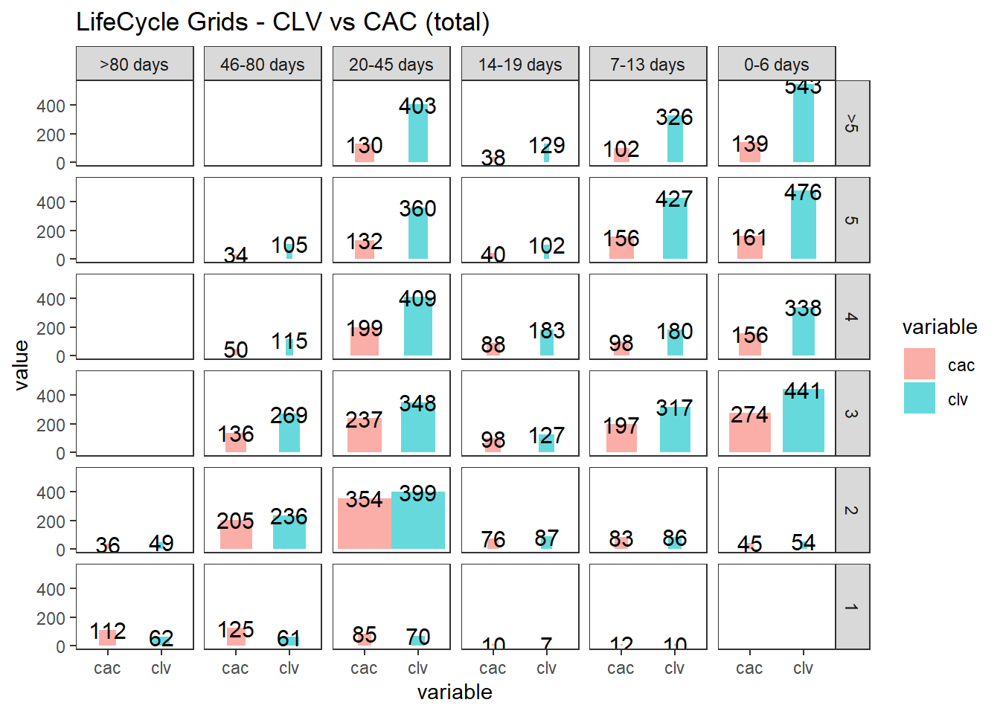
ggplot(lcg.clv[lcg.clv$variable %in% c('clv1', 'cac1'), ], aes(x = variable, y =
value, fill = variable)) +
theme_bw() +
theme(panel.grid = element_blank()) +
geom_bar(stat = 'identity', alpha = 0.6, aes(width = quantity / max(quantity))) +
geom_text(aes(y = value, label = value), size = 4) +
facet_grid(segm.freq ~ segm.rec) +
ggtitle("LifeCycle Grids - CLV vs CAC (average)")## Warning: Ignoring unknown aesthetics: width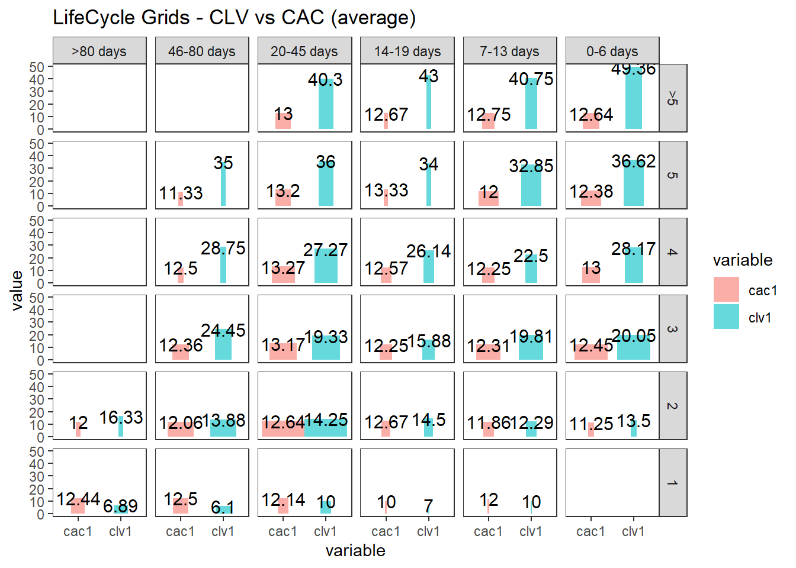
15.4.2.3 Cohort Analysis
combine customers through common characteristics to split customers into homogeneous groups
# loading libraries
library(dplyr)
library(reshape2)
library(ggplot2)
library(googleVis)## Creating a generic function for 'toJSON' from package 'jsonlite' in package 'googleVis'##
## Welcome to googleVis version 0.6.10
##
## Please read Google's Terms of Use
## before you start using the package:
## https://developers.google.com/terms/
##
## Note, the plot method of googleVis will by default use
## the standard browser to display its output.
##
## See the googleVis package vignettes for more details,
## or visit https://github.com/mages/googleVis.
##
## To suppress this message use:
## suppressPackageStartupMessages(library(googleVis))set.seed(10)
# creating orders data sample
data <- data.frame(
orderId = sample(c(1:5000), 25000, replace = TRUE),
product = sample(
c('NULL', 'a', 'b', 'c'),
25000,
replace = TRUE,
prob = c(0.15, 0.65, 0.3, 0.15)
)
)
order <- data.frame(orderId = c(1:5000),
clientId = sample(c(1:1500), 5000, replace = TRUE))
date <- data.frame(orderId = c(1:5000),
orderdate = sample((1:500), 5000, replace = TRUE))
orders <- merge(data, order, by = 'orderId')
orders <- merge(orders, date, by = 'orderId')
orders <- orders[orders$product != 'NULL',]
orders$orderdate <- as.Date(orders$orderdate, origin = "2012-01-01")
rm(data, date, order)
# creating data frames with CAC, Gross margin, Campaigns and Potential CLV
gr.margin <-
data.frame(product = c('a', 'b', 'c'),
grossmarg = c(1, 2, 3))
campaign <- data.frame(clientId = c(1:1500),
campaign = paste('campaign', sample(c(1:7), 1500, replace = TRUE), sep =
' '))
cac <-
data.frame(campaign = unique(campaign$campaign),
cac = sample(c(10:15), 7, replace = TRUE))
campaign <- merge(campaign, cac, by = 'campaign')
potential <- data.frame(clientId = c(1:1500),
clv.p = sample(c(0:50), 1500, replace = TRUE))
rm(cac)
# reporting date
today <- as.Date('2013-05-16', format = '%Y-%m-%d')where
- campaign, which includes campaign name and customer acquisition cost for each customer,
- margin, which includes gross margin for each product,
- potential, which includes potential values / predicted CLV for each client,
- orders, which includes orders from our customers with products and order dates.
# calculating CLV, frequency, recency, average time lapses between purchases and defining cohorts
orders <- merge(orders, gr.margin, by = 'product')
customers <- orders %>%
# combining products and summarising gross margin
group_by(orderId, clientId, orderdate) %>%
summarise(grossmarg = sum(grossmarg)) %>%
ungroup() %>%
# calculating frequency, recency, average time lapses between purchases and defining cohorts
group_by(clientId) %>%
mutate(
frequency = n(),
recency = as.numeric(today - max(orderdate)),
av.gap = round(as.numeric(max(orderdate) - min(orderdate)) / frequency, 0),
cohort = format(min(orderdate), format = '%Y-%m')
) %>%
ungroup() %>%
# calculating CLV to date
group_by(clientId, cohort, frequency, recency, av.gap) %>%
summarise(clv = sum(grossmarg)) %>%
arrange(clientId) %>%
ungroup()## `summarise()` has grouped output by 'orderId', 'clientId'. You can override using the `.groups` argument.## `summarise()` has grouped output by 'clientId', 'cohort', 'frequency', 'recency'. You can override using the `.groups` argument.# calculating potential CLV and CAC
customers <- merge(customers, campaign, by = 'clientId')
customers <- merge(customers, potential, by = 'clientId')
# leading the potential value to more or less real value
customers$clv.p <-
round(customers$clv.p / sqrt(customers$recency) * customers$frequency,
2)
rm(potential, gr.margin, today)
# adding segments
customers <- customers %>%
mutate(segm.freq = ifelse(between(frequency, 1, 1), '1',
ifelse(
between(frequency, 2, 2), '2',
ifelse(between(frequency, 3, 3), '3',
ifelse(
between(frequency, 4, 4), '4',
ifelse(between(frequency, 5, 5), '5', '>5')
))
))) %>%
mutate(segm.rec = ifelse(
between(recency, 0, 30),
'0-30 days',
ifelse(
between(recency, 31, 60),
'31-60 days',
ifelse(
between(recency, 61, 90),
'61-90 days',
ifelse(
between(recency, 91, 120),
'91-120 days',
ifelse(between(recency, 121, 180), '121-180 days', '>180 days')
)
)
)
))
# defining order of boundaries
customers$segm.freq <-
factor(customers$segm.freq, levels = c('>5', '5', '4', '3', '2', '1'))
customers$segm.rec <-
factor(
customers$segm.rec,
levels = c(
'>180 days',
'121-180 days',
'91-120 days',
'61-90 days',
'31-60 days',
'0-30 days'
)
)15.4.2.3.1 First-purchase date cohort
lcg.coh <- customers %>%
group_by(cohort, segm.rec, segm.freq) %>%
# calculating cumulative values
summarise(
quantity = n(),
cac = sum(cac),
clv = sum(clv),
clv.p = sum(clv.p),
av.gap = sum(av.gap)
) %>%
ungroup() %>%
# calculating average values
mutate(
av.cac = round(cac / quantity, 2),
av.clv = round(clv / quantity, 2),
av.clv.p = round(clv.p / quantity, 2),
av.clv.tot = av.clv + av.clv.p,
av.gap = round(av.gap / quantity, 2),
diff = av.clv - av.cac
)
# 1. Structure of averages and comparison cohorts
ggplot(lcg.coh, aes(x = cohort, fill = cohort)) +
theme_bw() +
theme(panel.grid = element_blank()) +
geom_bar(aes(y = diff), stat = 'identity', alpha = 0.5) +
geom_text(aes(y = diff, label = round(diff, 0)), size = 4) +
facet_grid(segm.freq ~ segm.rec) +
theme(axis.text.x = element_text(
angle = 90,
hjust = .5,
vjust = .5,
face = "plain"
)) +
ggtitle("Cohorts in LifeCycle Grids - difference between av.CLV to date and av.CAC")
ggplot(lcg.coh, aes(x = cohort, fill = cohort)) +
theme_bw() +
theme(panel.grid = element_blank()) +
geom_bar(aes(y = av.clv.tot), stat = 'identity', alpha = 0.2) +
geom_text(aes(
y = av.clv.tot + 10,
label = round(av.clv.tot, 0),
color = cohort
), size = 4) +
geom_bar(aes(y = av.clv), stat = 'identity', alpha = 0.7) +
geom_errorbar(aes(y = av.cac, ymax = av.cac, ymin = av.cac),
color = 'red',
size = 1.2) +
geom_text(
aes(y = av.cac, label = round(av.cac, 0)),
size = 4,
color = 'darkred',
vjust = -.5
) +
facet_grid(segm.freq ~ segm.rec) +
theme(axis.text.x = element_text(
angle = 90,
hjust = .5,
vjust = .5,
face = "plain"
)) +
ggtitle("Cohorts in LifeCycle Grids - total av.CLV and av.CAC")
# 2. Analyzing customer flows
# customers flows analysis (FPD cohorts)
# defining cohort and reporting dates
coh <- '2012-09'
report.dates <- c('2012-10-01', '2013-01-01', '2013-04-01')
report.dates <- as.Date(report.dates, format = '%Y-%m-%d')
# defining segments for each cohort's customer for reporting dates
df.sankey <- data.frame()
for (i in 1:length(report.dates)) {
orders.cache <- orders %>%
filter(orderdate < report.dates[i])
customers.cache <- orders.cache %>%
select(-product,-grossmarg) %>%
unique() %>%
group_by(clientId) %>%
mutate(
frequency = n(),
recency = as.numeric(report.dates[i] - max(orderdate)),
cohort = format(min(orderdate), format = '%Y-%m')
) %>%
ungroup() %>%
select(clientId, frequency, recency, cohort) %>%
unique() %>%
filter(cohort == coh) %>%
mutate(segm.freq = ifelse(
between(frequency, 1, 1),
'1 purch',
ifelse(
between(frequency, 2, 2),
'2 purch',
ifelse(
between(frequency, 3, 3),
'3 purch',
ifelse(
between(frequency, 4, 4),
'4 purch',
ifelse(between(frequency, 5, 5), '5 purch', '>5 purch')
)
)
)
)) %>%
mutate(segm.rec = ifelse(
between(recency, 0, 30),
'0-30 days',
ifelse(
between(recency, 31, 60),
'31-60 days',
ifelse(
between(recency, 61, 90),
'61-90 days',
ifelse(
between(recency, 91, 120),
'91-120 days',
ifelse(between(recency, 121, 180), '121-180 days', '>180 days')
)
)
)
)) %>%
mutate(
cohort.segm = paste(cohort, segm.rec, segm.freq, sep = ' : '),
report.date = report.dates[i]
) %>%
select(clientId, cohort.segm, report.date)
df.sankey <- rbind(df.sankey, customers.cache)
}
# processing data for Sankey diagram format
df.sankey <-
dcast(df.sankey,
clientId ~ report.date,
value.var = 'cohort.segm',
fun.aggregate = NULL)
write.csv(df.sankey, 'customers_path.csv', row.names = FALSE)
df.sankey <- df.sankey %>% select(-clientId)
df.sankey.plot <- data.frame()
for (i in 2:ncol(df.sankey)) {
df.sankey.cache <- df.sankey %>%
group_by(df.sankey[, i - 1], df.sankey[, i]) %>%
summarise(n = n()) %>%
ungroup()
colnames(df.sankey.cache)[1:2] <- c('from', 'to')
df.sankey.cache$from <-
paste(df.sankey.cache$from, ' (', report.dates[i - 1], ')', sep = '')
df.sankey.cache$to <-
paste(df.sankey.cache$to, ' (', report.dates[i], ')', sep = '')
df.sankey.plot <- rbind(df.sankey.plot, df.sankey.cache)
}
# plotting
plot(gvisSankey(
df.sankey.plot,
from = 'from',
to = 'to',
weight = 'n',
options = list(
height = 900,
width = 1800,
sankey = "{link:{color:{fill:'lightblue'}}}"
)
))
# purchasing pace
ggplot(lcg.coh, aes(x = cohort, fill = cohort)) +
theme_bw() +
theme(panel.grid = element_blank()) +
geom_bar(aes(y = av.gap), stat = 'identity', alpha = 0.6) +
geom_text(aes(y = av.gap, label = round(av.gap, 0)), size = 4) +
facet_grid(segm.freq ~ segm.rec) +
theme(axis.text.x = element_text(
angle = 90,
hjust = .5,
vjust = .5,
face = "plain"
)) +
ggtitle("Cohorts in LifeCycle Grids - average time lapses between purchases")15.4.2.3.2 Campaign Cohorts
# campaign cohorts
lcg.camp <- customers %>%
group_by(campaign, segm.rec, segm.freq) %>%
# calculating cumulative values
summarise(
quantity = n(),
cac = sum(cac),
clv = sum(clv),
clv.p = sum(clv.p),
av.gap = sum(av.gap)
) %>%
ungroup() %>%
# calculating average values
mutate(
av.cac = round(cac / quantity, 2),
av.clv = round(clv / quantity, 2),
av.clv.p = round(clv.p / quantity, 2),
av.clv.tot = av.clv + av.clv.p,
av.gap = round(av.gap / quantity, 2),
diff = av.clv - av.cac
)## `summarise()` has grouped output by 'campaign', 'segm.rec'. You can override using the `.groups` argument.ggplot(lcg.camp, aes(x = campaign, fill = campaign)) +
theme_bw() +
theme(panel.grid = element_blank()) +
geom_bar(aes(y = diff), stat = 'identity', alpha = 0.5) +
geom_text(aes(y = diff, label = round(diff, 0)), size = 4) +
facet_grid(segm.freq ~ segm.rec) +
theme(axis.text.x = element_text(
angle = 90,
hjust = .5,
vjust = .5,
face = "plain"
)) +
ggtitle("Campaigns in LifeCycle Grids - difference between av.CLV to date and av.CAC")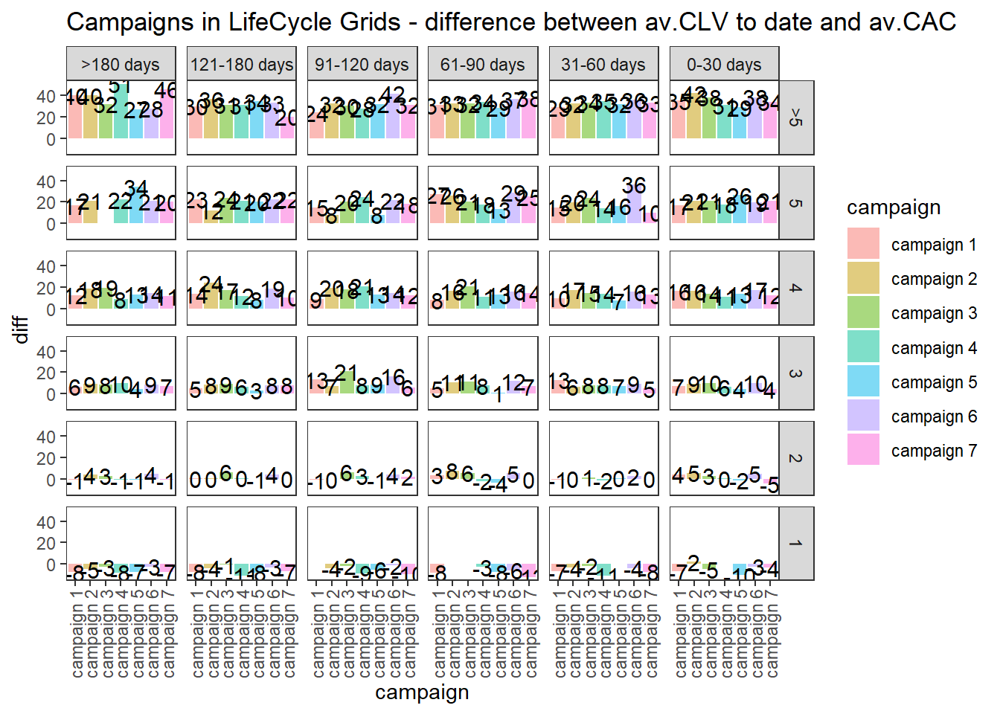
ggplot(lcg.camp, aes(x = campaign, fill = campaign)) +
theme_bw() +
theme(panel.grid = element_blank()) +
geom_bar(aes(y = av.clv.tot), stat = 'identity', alpha = 0.2) +
geom_text(aes(
y = av.clv.tot + 10,
label = round(av.clv.tot, 0),
color = campaign
), size = 4) +
geom_bar(aes(y = av.clv), stat = 'identity', alpha = 0.7) +
geom_errorbar(aes(y = av.cac, ymax = av.cac, ymin = av.cac),
color = 'red',
size = 1.2) +
geom_text(
aes(y = av.cac, label = round(av.cac, 0)),
size = 4,
color = 'darkred',
vjust = -.5
) +
facet_grid(segm.freq ~ segm.rec) +
theme(axis.text.x = element_text(
angle = 90,
hjust = .5,
vjust = .5,
face = "plain"
)) +
ggtitle("Campaigns in LifeCycle Grids - total av.CLV and av.CAC")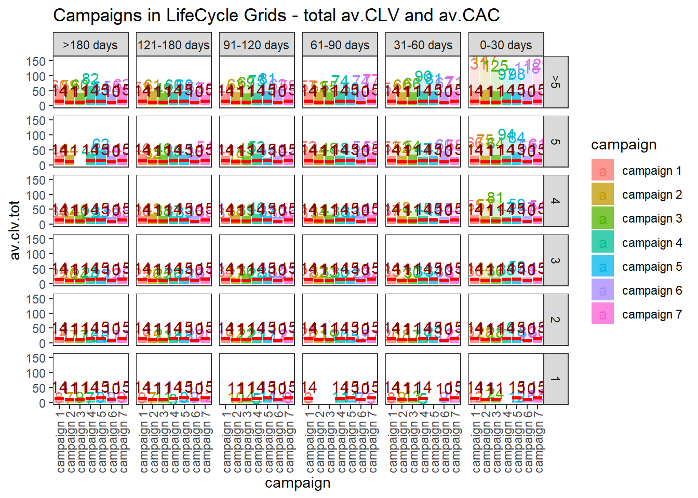
ggplot(lcg.camp, aes(x = campaign, fill = campaign)) +
theme_bw() +
theme(panel.grid = element_blank()) +
geom_bar(aes(y = av.gap), stat = 'identity', alpha = 0.6) +
geom_text(aes(y = av.gap, label = round(av.gap, 0)), size = 4) +
facet_grid(segm.freq ~ segm.rec) +
theme(axis.text.x = element_text(
angle = 90,
hjust = .5,
vjust = .5,
face = "plain"
)) +
ggtitle("Campaigns in LifeCycle Grids - average time lapses between purchases")
15.4.2.3.3 Retention Rate
# loading libraries
library(dplyr)
library(reshape2)
library(ggplot2)
library(scales)##
## Attaching package: 'scales'## The following object is masked from 'package:purrr':
##
## discard## The following object is masked from 'package:readr':
##
## col_factor## The following object is masked from 'package:kernlab':
##
## alphalibrary(gridExtra)##
## Attaching package: 'gridExtra'## The following object is masked from 'package:dplyr':
##
## combine# creating data sample
set.seed(10)
cohorts <-
data.frame(
cohort = paste('cohort', formatC(
c(1:36),
width = 2,
format = 'd',
flag = '0'
), sep = '_'),
Y_00 = sample(c(1300:1500), 36, replace = TRUE),
Y_01 = c(sample(c(800:1000), 36, replace = TRUE)),
Y_02 = c(sample(c(600:800), 24, replace = TRUE), rep(NA, 12)),
Y_03 = c(sample(c(400:500), 12, replace = TRUE), rep(NA, 24))
)
# simulating seasonality (Black Friday)
cohorts[c(11, 23, 35), 2] <-
as.integer(cohorts[c(11, 23, 35), 2] * 1.25)
cohorts[c(11, 23, 35), 3] <-
as.integer(cohorts[c(11, 23, 35), 3] * 1.10)
cohorts[c(11, 23, 35), 4] <-
as.integer(cohorts[c(11, 23, 35), 4] * 1.07)
# calculating retention rate and preparing data for plotting
df_plot <-
reshape2::melt(
cohorts,
id.vars = 'cohort',
value.name = 'number',
variable.name = "year_of_LT"
)
df_plot <- df_plot %>%
group_by(cohort) %>%
arrange(year_of_LT) %>%
mutate(number_prev_year = lag(number),
number_Y_00 = number[which(year_of_LT == 'Y_00')]) %>%
ungroup() %>%
mutate(
ret_rate_prev_year = number / number_prev_year,
ret_rate = number / number_Y_00,
year_cohort = paste(year_of_LT, cohort, sep = '-')
)
##### The first way for plotting cycle plot via scaling
# calculating the coefficient for scaling 2nd axis
k <-
max(df_plot$number_prev_year[df_plot$year_of_LT == 'Y_01'] * 1.15) / min(df_plot$ret_rate[df_plot$year_of_LT == 'Y_01'])
# retention rate cycle plot
ggplot(
na.omit(df_plot),
aes(
x = year_cohort,
y = ret_rate,
group = year_of_LT,
color = year_of_LT
)
) +
theme_bw() +
geom_point(size = 4) +
geom_text(
aes(label = percent(round(ret_rate, 2))),
size = 4,
hjust = 0.4,
vjust = -0.6,
fontface = "plain"
) +
# smooth method can be changed (e.g. for "lm")
geom_smooth(
size = 2.5,
method = 'loess',
color = 'darkred',
aes(fill = year_of_LT)
) +
geom_bar(aes(y = number_prev_year / k, fill = year_of_LT),
alpha = 0.2,
stat = 'identity') +
geom_bar(aes(y = number / k, fill = year_of_LT),
alpha = 0.6,
stat = 'identity') +
geom_text(
aes(y = 0, label = cohort),
color = 'white',
angle = 90,
size = 4,
hjust = -0.05,
vjust = 0.4
) +
geom_text(
aes(y = number_prev_year / k, label = number_prev_year),
angle = 90,
size = 4,
hjust = -0.1,
vjust = 0.4
) +
geom_text(
aes(y = number / k, label = number),
angle = 90,
size = 4,
hjust = -0.1,
vjust = 0.4
) +
theme(
legend.position = 'none',
plot.title = element_text(size = 20, face = "bold", vjust = 2),
axis.title.x = element_text(size = 18, face = "bold"),
axis.title.y = element_text(size = 18, face = "bold"),
axis.text = element_text(size = 16),
axis.text.x = element_blank(),
axis.ticks.x = element_blank(),
axis.ticks.y = element_blank(),
panel.border = element_blank(),
panel.grid.major = element_blank(),
panel.grid.minor = element_blank()
) +
labs(x = 'Year of Lifetime by Cohorts', y = 'Number of Customers / Retention Rate') +
ggtitle("Customer Retention Rate - Cycle plot")## `geom_smooth()` using formula 'y ~ x'
##### The second way for plotting cycle plot via multi-plotting
# plot #1 - Retention rate
p1 <-
ggplot(
na.omit(df_plot),
aes(
x = year_cohort,
y = ret_rate,
group = year_of_LT,
color = year_of_LT
)
) +
theme_bw() +
geom_point(size = 4) +
geom_text(
aes(label = percent(round(ret_rate, 2))),
size = 4,
hjust = 0.4,
vjust = -0.6,
fontface = "plain"
) +
geom_smooth(
size = 2.5,
method = 'loess',
color = 'darkred',
aes(fill = year_of_LT)
) +
theme(
legend.position = 'none',
plot.title = element_text(size = 20, face = "bold", vjust = 2),
axis.title.x = element_blank(),
axis.title.y = element_text(size = 18, face = "bold"),
axis.text = element_blank(),
axis.ticks.x = element_blank(),
axis.ticks.y = element_blank(),
panel.border = element_blank(),
panel.grid.major = element_blank(),
panel.grid.minor = element_blank()
) +
labs(y = 'Retention Rate') +
ggtitle("Customer Retention Rate - Cycle plot")
# plot #2 - number of customers
p2 <-
ggplot(na.omit(df_plot),
aes(x = year_cohort, group = year_of_LT, color = year_of_LT)) +
theme_bw() +
geom_bar(aes(y = number_prev_year, fill = year_of_LT),
alpha = 0.2,
stat = 'identity') +
geom_bar(aes(y = number, fill = year_of_LT),
alpha = 0.6,
stat = 'identity') +
geom_text(
aes(y = number_prev_year, label = number_prev_year),
angle = 90,
size = 4,
hjust = -0.1,
vjust = 0.4
) +
geom_text(
aes(y = number, label = number),
angle = 90,
size = 4,
hjust = -0.1,
vjust = 0.4
) +
geom_text(
aes(y = 0, label = cohort),
color = 'white',
angle = 90,
size = 4,
hjust = -0.05,
vjust = 0.4
) +
theme(
legend.position = 'none',
plot.title = element_text(size = 20, face = "bold", vjust = 2),
axis.title.x = element_text(size = 18, face = "bold"),
axis.title.y = element_text(size = 18, face = "bold"),
axis.text = element_blank(),
axis.ticks.x = element_blank(),
axis.ticks.y = element_blank(),
panel.border = element_blank(),
panel.grid.major = element_blank(),
panel.grid.minor = element_blank()
) +
scale_y_continuous(limits = c(0, max(df_plot$number_Y_00 * 1.1))) +
labs(x = 'Year of Lifetime by Cohorts', y = 'Number of Customers')
# multiplot
grid.arrange(p1, p2, ncol = 1)## `geom_smooth()` using formula 'y ~ x'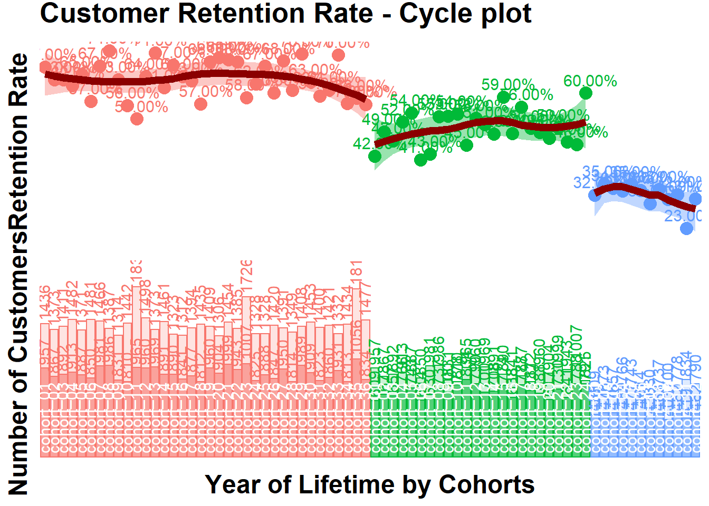
# retention rate bubble chart
ggplot(na.omit(df_plot),
aes(
x = cohort,
y = ret_rate,
group = cohort,
color = year_of_LT
)) +
theme_bw() +
scale_size(range = c(15, 40)) +
geom_line(size = 2, alpha = 0.3) +
geom_point(aes(size = number_prev_year), alpha = 0.3) +
geom_point(aes(size = number), alpha = 0.8) +
geom_smooth(
linetype = 2,
size = 2,
method = 'loess',
aes(group = year_of_LT, fill = year_of_LT),
alpha = 0.2
) +
geom_text(
aes(label = paste0(
number, '/', number_prev_year, '\n', percent(round(ret_rate, 2))
)),
color = 'white',
size = 3,
hjust = 0.5,
vjust = 0.5,
fontface = "plain"
) +
theme(
legend.position = 'none',
plot.title = element_text(size = 20, face = "bold", vjust = 2),
axis.title.x = element_text(size = 18, face = "bold"),
axis.title.y = element_text(size = 18, face = "bold"),
axis.text = element_text(size = 16),
axis.text.x = element_text(
size = 10,
angle = 90,
hjust = .5,
vjust = .5,
face = "plain"
),
axis.ticks.x = element_blank(),
axis.ticks.y = element_blank(),
panel.border = element_blank(),
panel.grid.major = element_blank(),
panel.grid.minor = element_blank()
) +
labs(x = 'Cohorts', y = 'Retention Rate by Year of Lifetime') +
ggtitle("Customer Retention Rate - Bubble chart")## `geom_smooth()` using formula 'y ~ x'
# retention rate falling drops chart
ggplot(df_plot,
aes(
x = cohort,
y = ret_rate,
group = cohort,
color = year_of_LT
)) +
theme_bw() +
scale_size(range = c(15, 40)) +
scale_y_continuous(limits = c(0, 1)) +
geom_line(size = 2, alpha = 0.3) +
geom_point(aes(size = number), alpha = 0.8) +
geom_text(
aes(label = paste0(number, '\n', percent(round(
ret_rate, 2
)))),
color = 'white',
size = 3,
hjust = 0.5,
vjust = 0.5,
fontface = "plain"
) +
theme(
legend.position = 'none',
plot.title = element_text(size = 20, face = "bold", vjust = 2),
axis.title.x = element_text(size = 18, face = "bold"),
axis.title.y = element_text(size = 18, face = "bold"),
axis.text = element_text(size = 16),
axis.text.x = element_text(
size = 10,
angle = 90,
hjust = .5,
vjust = .5,
face = "plain"
),
axis.ticks.x = element_blank(),
axis.ticks.y = element_blank(),
panel.border = element_blank(),
panel.grid.major = element_blank(),
panel.grid.minor = element_blank()
) +
labs(x = 'Cohorts', y = 'Retention Rate by Year of Lifetime') +
ggtitle("Customer Retention Rate - Falling Drops chart")## Warning: Removed 36 row(s) containing missing values (geom_path).## Warning: Removed 36 rows containing missing values (geom_point).## Warning: Removed 36 rows containing missing values (geom_text).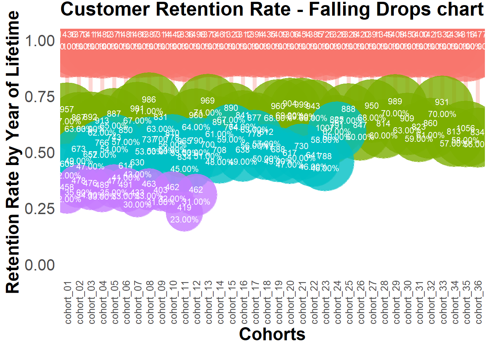
15.4.2.3.4 Retention Charts
# libraries
library(dplyr)
library(ggplot2)
library(reshape2)
cohort.clients <- data.frame(
cohort = c(
'Cohort01',
'Cohort02',
'Cohort03',
'Cohort04',
'Cohort05',
'Cohort06',
'Cohort07',
'Cohort08',
'Cohort09',
'Cohort10',
'Cohort11',
'Cohort12'
),
M01 = c(11000, 0, 0, 0, 0, 0, 0, 0, 0, 0, 0, 0),
M02 = c(1900, 10000, 0, 0, 0, 0, 0, 0, 0, 0, 0, 0),
M03 = c(1400, 2000, 11500, 0, 0, 0, 0, 0, 0, 0, 0, 0),
M04 = c(1100, 1300, 2400, 13200, 0, 0, 0, 0, 0, 0, 0, 0),
M05 = c(1000, 1100, 1400, 2400, 11100, 0, 0, 0, 0, 0, 0, 0),
M06 = c(900, 900, 1200, 1600, 1900, 10300, 0, 0, 0, 0, 0, 0),
M07 = c(850, 900, 1100, 1300, 1300, 1900, 13000, 0, 0, 0, 0, 0),
M08 = c(850, 850, 1000, 1200, 1100, 1300, 1900, 11500, 0, 0, 0, 0),
M09 = c(800, 800, 950, 1100, 1100, 1250, 1000, 1200, 11000, 0, 0, 0),
M10 = c(800, 780, 900, 1050, 1050, 1200, 900, 1200, 1900, 13200, 0, 0),
M11 = c(750, 750, 900, 1000, 1000, 1180, 800, 1100, 1150, 2000, 11300, 0),
M12 = c(740, 700, 870, 1000, 900, 1100, 700, 1050, 1025, 1300, 1800, 20000)
)
cohort.clients.r <- cohort.clients #create new data frame
totcols <-
ncol(cohort.clients.r) #count number of columns in data set
for (i in 1:nrow(cohort.clients.r)) {
#for loop for shifting each row
df <- cohort.clients.r[i,] #select row from data frame
df <- df[, !df[] == 0] #remove columns with zeros
partcols <-
ncol(df) #count number of columns in row (w/o zeros)
#fill columns after values by zeros
if (partcols < totcols)
df[, c((partcols + 1):totcols)] <- 0
cohort.clients.r[i,] <- df #replace initial row by new one
}
# Retention ratio = # clients in particular month / # clients in 1st month of life-time
#calculate retention (1)
x <- cohort.clients.r[, c(2:13)]
y <- cohort.clients.r[, 2]
reten.r <- apply(x, 2, function(x)
x / y)
reten.r <- data.frame(cohort = (cohort.clients.r$cohort), reten.r)
#calculate retention (2)
c <- ncol(cohort.clients.r)
reten.r <- cohort.clients.r
for (i in 2:c) {
reten.r[, (c + i - 1)] <- reten.r[, i] / reten.r[, 2]
}
reten.r <- reten.r[,-c(2:c)]
colnames(reten.r) <- colnames(cohort.clients.r)
#charts
reten.r <- reten.r[,-2] #remove M01 data because it is always 100%
#dynamics analysis chart
cohort.chart1 <- melt(reten.r, id.vars = 'cohort')
colnames(cohort.chart1) <- c('cohort', 'month', 'retention')
cohort.chart1 <- filter(cohort.chart1, retention != 0)
p <-
ggplot(cohort.chart1,
aes(
x = month,
y = retention,
group = cohort,
colour = cohort
))
p + geom_line(size = 2, alpha = 1 / 2) +
geom_point(size = 3, alpha = 1) +
geom_smooth(
aes(group = 1),
method = 'loess',
size = 2,
colour = 'red',
se = FALSE
) +
labs(title = "Cohorts Retention ratio dynamics")## `geom_smooth()` using formula 'y ~ x'
#second month analysis chart
cohort.chart2 <-
filter(cohort.chart1, month == 'M02') #choose any month instead of M02
p <-
ggplot(cohort.chart2, aes(x = cohort, y = retention, colour = cohort))
p + geom_point(size = 3) +
geom_line(aes(group = 1), size = 2, alpha = 1 / 2) +
geom_smooth(
aes(group = 1),
size = 2,
colour = 'red',
method = 'lm',
se = FALSE
) +
labs(title = "Cohorts Retention ratio for 2nd month")## `geom_smooth()` using formula 'y ~ x'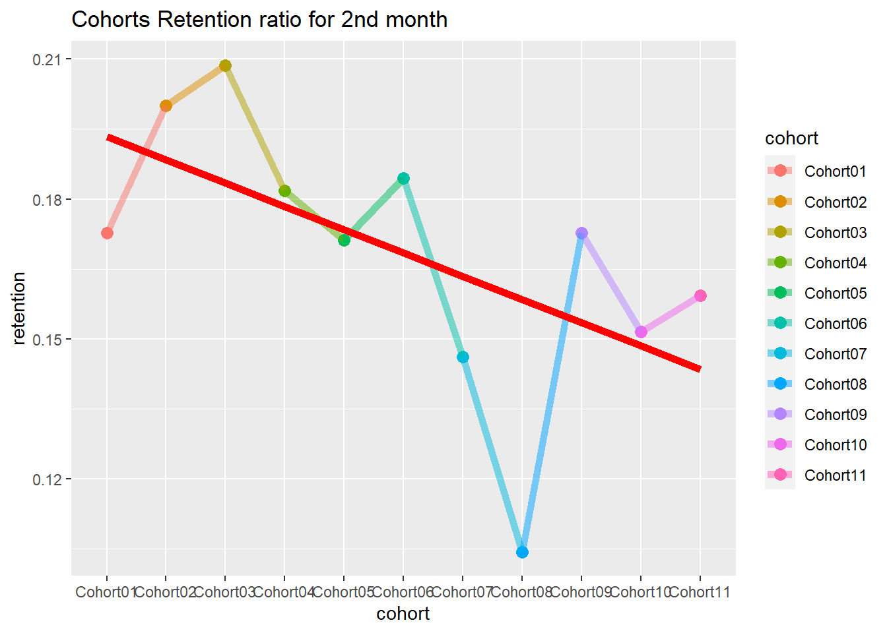
#cycle plot
cohort.chart3 <- cohort.chart1
cohort.chart3 <-
mutate(cohort.chart3, month_cohort = paste(month, cohort))
p <-
ggplot(cohort.chart3,
aes(
x = month_cohort,
y = retention,
group = month,
colour = month
))
#choose any cohorts instead of Cohort07 and Cohort06
m1 <- filter(cohort.chart3, cohort == 'Cohort07')
m2 <- filter(cohort.chart3, cohort == 'Cohort06')
p + geom_point(size = 3) +
geom_line(aes(group = month), size = 2, alpha = 1 / 2) +
labs(title = "Cohorts Retention ratio cycle plot") +
geom_line(
data = m1,
aes(group = 1),
colour = 'blue',
size = 2,
alpha = 1 / 5
) +
geom_line(
data = m2,
aes(group = 1),
colour = 'blue',
size = 2,
alpha = 1 / 5
) +
theme(axis.text.x = element_text(angle = 90, hjust = 1))
15.4.2.4 Lifecycle phase sequential analysis
- analyze the path patterns of each cohort
- identify cohorts that attracted customers with the path we prefer to make offers.
library(TraMineR)## Warning: package 'TraMineR' was built under R version 4.0.5##
## TraMineR stable version 2.2-2 (Built: 2021-08-14)## Website: http://traminer.unige.ch## Please type 'citation("TraMineR")' for citation information.min.date <- min(orders$orderdate)
max.date <- max(orders$orderdate)
l <-
c(seq(0, as.numeric(max.date - min.date), 10), as.numeric(max.date - min.date))
df <- data.frame()
for (i in l) {
cur.date <- min.date + i
print(cur.date)
orders.cache <- orders %>%
filter(orderdate <= cur.date)
customers.cache <- orders.cache %>%
select(-product,-grossmarg) %>%
unique() %>%
group_by(clientId) %>%
mutate(frequency = n(),
recency = as.numeric(cur.date - max(orderdate))) %>%
ungroup() %>%
select(clientId, frequency, recency) %>%
unique() %>%
mutate(segm =
ifelse(
between(frequency, 1, 2) & between(recency, 0, 60),
'new customer',
ifelse(
between(frequency, 1, 2) &
between(recency, 61, 180),
'under risk new customer',
ifelse(
between(frequency, 1, 2) & recency > 180,
'1x buyer',
ifelse(
between(frequency, 3, 4) &
between(recency, 0, 60),
'engaged customer',
ifelse(
between(frequency, 3, 4) &
between(recency, 61, 180),
'under risk engaged customer',
ifelse(
between(frequency, 3, 4) & recency > 180,
'former engaged customer',
ifelse(
frequency > 4 & between(recency, 0, 60),
'best customer',
ifelse(
frequency > 4 &
between(recency, 61, 180),
'under risk best customer',
ifelse(frequency > 4 &
recency > 180, 'former best customer', NA)
)
)
)
)
)
)
)
)) %>%
mutate(report.date = i) %>%
select(clientId, segm, report.date)
df <- rbind(df, customers.cache)
}## [1] "2012-01-02"
## [1] "2012-01-12"
## [1] "2012-01-22"
## [1] "2012-02-01"
## [1] "2012-02-11"
## [1] "2012-02-21"
## [1] "2012-03-02"
## [1] "2012-03-12"
## [1] "2012-03-22"
## [1] "2012-04-01"
## [1] "2012-04-11"
## [1] "2012-04-21"
## [1] "2012-05-01"
## [1] "2012-05-11"
## [1] "2012-05-21"
## [1] "2012-05-31"
## [1] "2012-06-10"
## [1] "2012-06-20"
## [1] "2012-06-30"
## [1] "2012-07-10"
## [1] "2012-07-20"
## [1] "2012-07-30"
## [1] "2012-08-09"
## [1] "2012-08-19"
## [1] "2012-08-29"
## [1] "2012-09-08"
## [1] "2012-09-18"
## [1] "2012-09-28"
## [1] "2012-10-08"
## [1] "2012-10-18"
## [1] "2012-10-28"
## [1] "2012-11-07"
## [1] "2012-11-17"
## [1] "2012-11-27"
## [1] "2012-12-07"
## [1] "2012-12-17"
## [1] "2012-12-27"
## [1] "2013-01-06"
## [1] "2013-01-16"
## [1] "2013-01-26"
## [1] "2013-02-05"
## [1] "2013-02-15"
## [1] "2013-02-25"
## [1] "2013-03-07"
## [1] "2013-03-17"
## [1] "2013-03-27"
## [1] "2013-04-06"
## [1] "2013-04-16"
## [1] "2013-04-26"
## [1] "2013-05-06"
## [1] "2013-05-15"# converting data to the sequence format
df <-
dcast(df,
clientId ~ report.date,
value.var = 'segm',
fun.aggregate = NULL)
df.seq <- seqdef(df,
2:ncol(df),
left = 'DEL',
right = 'DEL',
xtstep = 10)## [>] found missing values ('NA') in sequence data## [>] preparing 1445 sequences## [>] coding void elements with '%' and missing values with '*'## [>] 9 distinct states appear in the data:## 1 = 1x buyer## 2 = best customer## 3 = engaged customer## 4 = former best customer## 5 = former engaged customer## 6 = new customer## 7 = under risk best customer## 8 = under risk engaged customer## 9 = under risk new customer## [>] state coding:## [alphabet] [label] [long label]## 1 1x buyer 1x buyer 1x buyer## 2 best customer best customer best customer## 3 engaged customer engaged customer engaged customer## 4 former best customer former best customer former best customer## 5 former engaged customer former engaged customer former engaged customer## 6 new customer new customer new customer## 7 under risk best customer under risk best customer under risk best customer## 8 under risk engaged customer under risk engaged customer under risk engaged customer## 9 under risk new customer under risk new customer under risk new customer## [>] 1445 sequences in the data set## [>] min/max sequence length: 1/51# creating df with first purch.date and campaign cohort features
feat <- df %>% select(clientId)
feat <- merge(feat, campaign[, 1:2], by = 'clientId')
feat <- merge(feat, customers[, 1:2], by = 'clientId')
par(mar = c(1, 1, 1, 1))
# plotting the 10 most frequent sequences based on campaign
seqfplot(df.seq, border = NA, group = feat$campaign)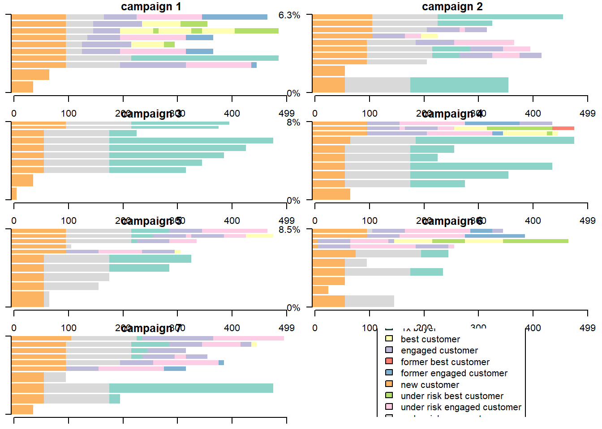
# plotting the 10 most frequent sequences based on campaign
seqfplot(
df.seq,
border = NA,
group = feat$campaign,
cex.legend = 0.9
)
# plotting the 10 most frequent sequences based on first purch.date cohort
coh.list <- sort(unique(feat$cohort))
# defining cohorts for plotting
feat.coh.list <- feat[feat$cohort %in% coh.list[1:6] ,]
df.coh <- df %>% filter(clientId %in% c(feat.coh.list$clientId))
df.seq.coh <-
seqdef(
df.coh,
2:ncol(df.coh),
left = 'DEL',
right = 'DEL',
xtstep = 10
)## [>] found missing values ('NA') in sequence data## [>] preparing 1063 sequences## [>] coding void elements with '%' and missing values with '*'## [>] 9 distinct states appear in the data:## 1 = 1x buyer## 2 = best customer## 3 = engaged customer## 4 = former best customer## 5 = former engaged customer## 6 = new customer## 7 = under risk best customer## 8 = under risk engaged customer## 9 = under risk new customer## [>] state coding:## [alphabet] [label] [long label]## 1 1x buyer 1x buyer 1x buyer## 2 best customer best customer best customer## 3 engaged customer engaged customer engaged customer## 4 former best customer former best customer former best customer## 5 former engaged customer former engaged customer former engaged customer## 6 new customer new customer new customer## 7 under risk best customer under risk best customer under risk best customer## 8 under risk engaged customer under risk engaged customer under risk engaged customer## 9 under risk new customer under risk new customer under risk new customer## [>] 1063 sequences in the data set## [>] min/max sequence length: 33/51seqfplot(
df.seq.coh,
border = NA,
group = feat.coh.list$cohort,
cex.legend = 0.9
)
15.5 Shopping carts analysis
15.5.1 Multi-layer pie chart
Example by Sergey Bryl
# loading libraries
library(dplyr)
library(tidyverse)
library(reshape2)
library(plotrix)##
## Attaching package: 'plotrix'## The following object is masked from 'package:scales':
##
## rescale# Simulate of orders
set.seed(15)
df <- data.frame(
orderId = sample(c(1:1000), 5000, replace = TRUE),
product = sample(
c('NULL', 'a', 'b', 'c', 'd'),
5000,
replace = TRUE,
prob = c(0.15, 0.65, 0.3, 0.15, 0.1)
)
)
df <- df[df$product != 'NULL',]
df## orderId product
## 1 549 b
## 3 874 a
## 4 674 d
## 5 505 a
## 6 294 a
## 7 177 a
## 8 261 a
## 9 217 b
## 11 363 d
## 12 596 a
## 13 230 b
## 14 193 b
## 15 896 a
## 16 652 a
## 18 37 c
## 19 727 a
## 20 450 c
## 21 793 b
## 22 906 a
## 23 730 c
## 24 213 c
## 25 181 a
## 26 867 a
## 27 509 a
## 28 386 b
## 29 500 b
## 30 930 a
## 31 442 c
## 32 479 a
## 33 531 b
## 34 840 a
## 36 798 a
## 37 21 b
## 39 677 a
## 40 591 c
## 41 283 a
## 42 972 a
## 43 598 a
## 44 2 a
## 46 142 c
## 48 10 c
## 49 713 c
## 50 685 a
## 51 721 b
## 52 189 a
## 53 289 c
## 54 896 a
## 55 295 a
## 56 188 d
## 57 689 a
## 59 518 b
## 60 610 a
## 62 123 b
## 63 419 b
## 64 305 b
## 65 587 a
## 66 561 a
## 67 184 d
## 68 321 d
## 69 372 b
## 70 551 b
## 71 600 b
## 72 930 a
## 73 593 a
## 74 351 b
## 75 881 c
## 76 723 c
## 79 576 a
## 80 44 b
## 81 957 c
## 82 437 a
## 83 600 d
## 84 240 a
## 85 397 a
## 86 762 a
## 87 533 a
## 88 136 b
## 89 296 a
## 90 796 b
## 91 301 b
## 92 873 c
## 93 201 a
## 94 582 a
## 95 691 c
## 98 262 a
## 99 189 a
## 100 482 b
## 101 144 c
## 102 395 b
## 103 941 a
## 104 444 d
## 105 11 a
## 107 168 a
## 108 448 b
## 110 296 a
## 111 519 a
## 112 913 a
## 113 723 a
## 114 589 d
## 115 90 a
## 116 147 a
## 117 186 a
## 118 133 c
## 119 525 b
## 121 415 a
## 122 954 b
## 123 803 c
## 124 25 d
## 126 566 b
## 127 387 a
## 128 885 a
## 130 104 b
## 131 674 b
## 132 587 a
## 133 201 a
## 134 599 a
## 135 710 a
## 136 883 a
## 137 142 a
## 138 372 a
## 139 73 a
## 140 395 a
## 141 960 b
## 142 101 a
## 143 927 b
## 144 326 a
## 145 837 a
## 146 592 a
## 147 25 c
## 148 923 b
## 149 771 a
## 150 770 c
## 151 175 a
## 152 916 a
## 153 649 a
## 154 445 d
## 155 100 a
## 156 694 d
## 157 79 a
## 158 84 a
## 159 658 a
## 160 384 a
## 161 83 a
## 162 946 a
## 163 922 a
## 164 542 b
## 166 449 a
## 167 259 b
## 168 845 c
## 169 320 c
## 170 933 a
## 171 859 a
## 172 778 c
## 173 819 a
## 174 256 a
## 175 608 a
## 177 990 a
## 178 8 d
## 179 200 c
## 180 155 c
## 181 889 d
## 182 657 a
## 183 458 a
## 184 445 b
## 185 335 d
## 186 298 b
## 187 142 b
## 188 629 a
## 190 203 a
## 191 650 a
## 192 18 c
## 194 741 a
## 195 485 a
## 196 606 a
## 197 781 a
## 198 249 b
## 200 271 c
## 201 350 a
## 202 440 d
## 204 24 a
## 205 275 a
## 206 625 a
## 207 243 b
## 208 210 a
## 209 567 b
## 210 595 a
## 211 156 a
## 212 317 a
## 213 936 a
## 214 333 a
## 215 995 a
## 216 245 b
## 217 76 a
## 218 970 b
## 219 129 a
## 220 547 b
## 221 778 b
## 222 92 c
## 223 424 a
## 224 375 a
## 225 221 c
## 226 716 d
## 227 697 c
## 228 212 d
## 229 55 a
## 230 679 a
## 231 467 b
## 232 688 d
## 233 224 b
## 234 150 a
## 237 544 c
## 238 666 a
## 239 986 a
## 240 581 a
## 241 646 a
## 242 164 d
## 243 291 b
## 244 960 a
## 245 40 a
## 246 556 a
## 247 622 a
## 248 175 a
## 249 700 a
## 250 944 d
## 251 469 a
## 252 67 c
## 253 312 a
## 254 958 a
## 255 371 c
## 256 555 a
## 257 724 c
## 258 668 a
## 259 467 c
## 260 135 a
## 261 765 a
## 262 115 a
## 263 407 a
## 264 491 a
## 265 179 c
## 266 432 a
## 267 161 a
## 268 557 c
## 269 202 a
## 270 617 a
## 271 711 b
## 272 688 d
## 273 521 c
## 274 468 d
## 275 365 a
## 277 131 a
## 279 523 a
## 280 918 a
## 281 656 a
## 283 513 a
## 284 267 b
## 285 84 a
## 286 974 a
## 287 758 b
## 288 475 a
## 289 565 a
## 291 787 b
## 293 295 a
## 294 323 d
## 295 281 c
## 296 738 b
## 298 212 a
## 299 989 d
## 300 147 a
## 301 202 a
## 302 384 a
## 303 268 b
## 304 176 a
## 305 162 a
## 307 12 a
## 308 843 a
## 309 916 d
## 310 769 a
## 311 460 b
## 312 667 c
## 315 922 b
## 316 160 a
## 317 718 a
## 318 223 c
## 319 654 a
## 321 705 a
## 323 635 a
## 324 619 b
## 325 694 a
## 326 651 a
## 327 848 a
## 328 982 a
## 329 616 a
## 330 520 a
## 331 331 a
## 332 490 a
## 333 446 d
## 334 465 a
## 335 627 a
## 337 572 a
## 339 234 a
## 340 217 b
## 341 509 d
## 342 727 b
## 343 799 d
## 344 714 a
## 345 299 d
## 346 541 a
## 348 256 a
## 349 482 a
## 350 296 a
## 351 37 c
## 352 88 a
## 353 73 c
## 354 552 a
## 355 864 a
## 356 957 a
## 357 69 b
## 358 15 a
## 359 643 b
## 360 133 b
## 361 811 a
## 362 959 b
## 363 944 c
## 364 305 d
## 365 955 a
## 367 321 c
## 368 629 c
## 369 216 a
## 371 969 b
## 372 762 a
## 374 347 a
## 375 683 a
## 376 181 a
## 377 32 a
## 378 2 a
## 379 63 d
## 381 9 a
## 382 343 b
## 383 215 b
## 384 711 b
## 385 742 c
## 386 734 b
## 388 922 a
## 389 805 d
## 390 987 b
## 391 450 c
## 392 639 c
## 393 888 a
## 394 250 a
## 395 911 c
## 396 809 a
## 398 969 d
## 399 618 a
## 400 670 c
## 401 252 c
## 402 866 a
## 403 126 b
## 404 720 a
## 405 34 d
## 407 270 c
## 408 828 a
## 409 497 b
## 410 760 b
## 411 263 b
## 412 343 a
## 413 836 a
## 414 334 c
## 415 876 c
## 416 658 a
## 417 57 b
## 418 756 b
## 419 206 d
## 420 297 a
## 421 992 a
## 422 67 a
## 423 446 b
## 424 461 a
## 426 172 d
## 427 310 b
## 428 199 a
## 430 966 c
## 432 581 a
## 433 719 a
## 437 173 a
## 439 59 a
## 440 223 d
## 441 650 a
## 442 868 a
## 443 73 a
## 444 585 a
## 445 325 b
## 446 117 a
## 447 83 a
## 448 772 b
## 449 972 d
## 450 593 a
## 451 759 d
## 452 313 a
## 453 31 a
## 455 940 c
## 456 693 a
## 457 279 c
## 459 47 d
## 460 28 a
## 461 534 a
## 462 101 c
## 463 48 a
## 464 627 a
## 465 173 d
## 466 965 a
## 468 84 b
## 469 451 c
## 470 267 a
## 471 542 b
## 472 175 c
## 473 472 a
## 474 526 a
## 475 316 c
## 476 982 a
## 477 487 b
## 478 80 a
## 479 357 a
## 480 635 a
## 481 575 a
## 482 123 a
## 483 213 a
## 484 537 a
## 486 577 a
## 487 15 d
## 488 922 c
## 489 798 a
## 490 386 a
## 491 278 a
## 493 755 a
## 494 710 a
## 497 848 a
## 498 166 b
## 499 206 d
## 500 469 a
## 501 621 c
## 502 101 b
## 503 381 a
## 504 312 b
## 505 536 a
## 506 972 b
## 507 861 c
## 508 331 b
## 509 354 a
## 510 97 a
## 511 61 a
## 512 271 b
## 513 97 a
## 514 481 b
## 515 904 a
## 516 429 a
## 517 835 c
## 519 895 c
## 520 154 d
## 521 635 a
## 522 940 a
## 523 69 a
## 524 448 a
## 525 798 a
## 526 331 a
## 527 103 a
## 528 364 c
## 529 404 b
## 531 753 d
## 532 395 b
## 533 949 b
## 534 121 a
## 535 404 a
## 536 873 b
## 537 929 a
## 538 86 b
## 540 218 a
## 541 934 a
## 542 929 b
## 543 134 a
## 544 867 b
## 545 816 a
## 546 910 d
## 547 158 a
## 548 594 c
## 549 76 d
## 550 830 a
## 551 401 a
## 552 323 a
## 553 587 a
## 555 682 d
## 556 936 c
## 557 796 c
## 558 625 a
## 561 296 a
## 563 385 a
## 564 273 a
## 565 243 a
## 566 957 c
## 567 811 c
## 568 443 c
## 569 144 c
## 571 59 a
## 572 373 b
## 573 445 a
## 574 913 b
## 575 290 a
## 577 978 a
## 578 935 c
## 579 690 a
## 580 450 a
## 581 864 a
## 582 136 b
## 583 787 a
## 584 97 d
## 585 766 b
## 586 639 a
## 587 981 a
## 589 136 a
## 590 805 b
## 591 410 c
## 592 10 a
## 593 937 a
## 594 553 d
## 595 373 b
## 596 993 a
## 597 572 b
## 598 473 b
## 599 624 b
## 600 115 a
## 601 652 b
## 603 90 d
## 604 679 a
## 605 968 a
## 606 947 a
## 607 496 b
## 608 181 b
## 609 150 b
## 610 8 a
## 611 452 d
## 612 80 c
## 613 788 a
## 614 571 a
## 615 801 c
## 616 139 a
## 617 413 a
## 618 652 c
## 619 132 c
## 622 276 c
## 623 964 c
## 624 923 c
## 626 660 a
## 627 855 a
## 628 700 a
## 629 761 b
## 631 68 b
## 632 60 b
## 633 392 c
## 634 371 b
## 635 799 b
## 636 554 b
## 637 684 a
## 638 642 b
## 640 758 c
## 641 467 b
## 643 732 c
## 644 282 a
## 645 316 a
## 646 556 b
## 647 268 a
## 648 664 a
## 651 526 b
## 652 97 a
## 653 362 b
## 654 969 d
## 655 903 b
## 656 786 d
## 658 618 c
## 659 964 a
## 660 921 a
## 661 345 c
## 662 157 c
## 663 465 c
## 664 855 b
## 665 588 a
## 666 327 a
## 667 467 a
## 668 149 a
## 669 604 a
## 670 751 a
## 671 415 a
## 674 560 a
## 676 659 a
## 677 917 b
## 678 329 a
## 679 729 c
## 680 256 a
## 681 6 a
## 682 524 a
## 683 942 b
## 684 956 a
## 685 233 b
## 686 466 d
## 687 476 a
## 688 671 a
## 689 994 c
## 690 188 a
## 691 781 a
## 692 851 a
## 693 302 d
## 694 661 a
## 695 639 a
## 696 974 b
## 697 40 a
## 700 741 b
## 701 214 a
## 702 22 d
## 703 559 c
## 704 846 c
## 705 854 a
## 706 116 c
## 707 494 a
## 708 638 c
## 709 954 b
## 710 294 a
## 711 627 b
## 712 300 a
## 713 176 a
## 714 631 a
## 715 572 a
## 716 350 d
## 717 700 a
## 718 410 a
## 719 726 a
## 720 13 b
## 721 57 b
## 722 966 a
## 723 545 a
## 724 727 a
## 725 252 a
## 726 77 c
## 728 28 b
## 730 693 a
## 731 591 c
## 732 952 b
## 733 310 a
## 734 357 d
## 735 218 c
## 736 17 a
## 737 784 c
## 738 70 b
## 741 896 a
## 742 417 c
## 743 469 c
## 744 280 a
## 745 102 a
## 746 361 a
## 747 923 b
## 748 382 d
## 749 203 d
## 750 136 b
## 751 252 a
## 752 629 a
## 753 408 b
## 754 481 a
## 755 64 a
## 756 253 a
## 757 877 b
## 758 426 b
## 759 408 a
## 760 786 a
## 761 731 a
## 762 99 a
## 763 940 b
## 765 551 a
## 766 544 a
## 767 24 a
## 768 245 c
## 769 64 a
## 770 401 a
## 771 814 b
## 772 959 b
## 773 141 b
## 774 190 b
## 775 248 a
## 777 804 d
## 778 688 a
## 779 800 b
## 780 92 b
## 781 206 a
## 782 985 a
## 783 867 a
## 784 51 a
## 785 277 a
## 786 645 a
## 788 468 d
## 789 957 a
## 790 433 d
## 791 254 b
## 792 15 b
## 793 806 a
## 794 705 a
## 795 577 a
## 796 425 a
## 797 410 b
## 798 506 d
## 799 341 c
## 801 802 a
## 802 689 a
## 803 194 a
## 804 240 a
## 805 994 a
## 806 798 c
## 807 422 a
## 808 36 a
## 809 94 c
## 810 301 b
## 811 57 a
## 812 699 b
## 813 184 a
## 815 753 a
## 816 381 a
## 818 423 a
## 821 785 d
## 822 489 a
## 823 746 c
## 824 2 a
## 825 86 a
## 826 944 d
## 827 221 a
## 828 198 a
## 830 725 a
## 831 204 a
## 832 937 b
## 833 704 a
## 834 121 a
## 835 545 a
## 836 565 a
## 837 211 a
## 838 494 c
## 839 131 b
## 840 418 a
## 841 980 a
## 843 473 b
## 844 906 a
## 845 257 a
## 846 175 d
## 847 783 d
## 848 806 c
## 849 310 b
## 850 710 b
## 851 157 a
## 852 137 b
## 853 437 b
## 854 652 d
## 855 998 a
## 856 83 a
## 857 836 a
## 858 182 a
## 859 405 c
## 860 517 a
## 861 120 a
## 863 338 b
## 864 561 a
## 866 292 a
## 867 333 a
## 868 45 a
## 869 176 b
## 870 791 b
## 873 104 c
## 874 574 a
## 875 90 b
## 876 337 b
## 878 903 a
## 879 781 a
## 880 341 a
## 881 554 a
## 882 624 a
## 883 36 a
## 884 10 b
## 885 505 b
## 886 383 a
## 887 668 a
## 888 436 c
## 889 284 a
## 890 704 a
## 891 994 c
## 892 86 a
## 893 499 c
## 894 761 a
## 895 372 a
## 896 454 b
## 897 417 a
## 898 370 d
## 899 788 b
## 900 244 a
## 901 346 b
## 902 710 a
## 904 73 a
## 905 428 b
## 906 147 c
## 907 683 b
## 908 33 c
## 909 193 b
## 910 394 a
## 911 861 a
## 912 705 a
## 913 3 b
## 915 438 b
## 916 692 a
## 917 414 b
## 918 324 d
## 919 11 a
## 920 598 b
## 921 818 d
## 922 474 a
## 923 582 a
## 924 795 a
## 925 108 a
## 926 738 a
## 927 700 d
## 928 812 b
## 929 379 a
## 930 744 b
## 931 334 d
## 932 299 c
## 933 470 a
## 934 748 a
## 935 307 c
## 936 62 a
## 937 516 a
## 938 896 a
## 939 436 b
## 940 750 a
## 943 478 a
## 944 155 a
## 945 225 a
## 946 383 a
## 947 874 b
## 948 156 a
## 949 705 a
## 950 624 a
## 951 845 c
## 952 902 a
## 953 647 d
## 954 706 a
## 955 837 b
## 956 982 a
## 957 344 a
## 958 287 a
## 959 575 b
## 961 482 a
## 962 907 b
## 963 703 a
## 964 426 c
## 965 699 b
## 966 278 a
## 967 188 a
## 968 777 a
## 971 816 b
## 972 727 a
## 973 766 a
## 974 10 b
## 975 941 b
## 976 847 a
## 977 353 c
## 978 661 a
## 979 137 a
## 980 974 a
## 981 751 d
## 982 404 d
## 983 354 b
## 984 681 b
## 985 611 b
## 986 580 b
## 987 365 a
## 990 759 a
## 991 787 a
## 992 11 a
## 993 546 d
## 994 432 c
## 995 154 a
## 996 542 b
## 997 197 c
## 998 891 d
## 999 58 a
## 1000 603 b
## 1001 771 a
## 1002 731 d
## 1003 873 b
## 1004 836 b
## 1006 219 b
## 1007 871 a
## 1008 151 a
## 1009 639 a
## 1010 796 b
## 1011 96 b
## 1012 205 d
## 1013 193 a
## 1015 706 a
## 1016 224 d
## 1017 957 a
## 1019 138 c
## 1020 773 d
## 1021 206 b
## 1022 362 b
## 1024 634 a
## 1025 307 b
## 1026 596 a
## 1027 499 d
## 1028 107 a
## 1029 503 b
## 1030 298 c
## 1031 382 a
## 1032 777 b
## 1033 622 c
## 1034 584 a
## 1035 65 a
## 1036 557 c
## 1037 762 a
## 1038 260 a
## 1039 467 b
## 1040 647 a
## 1041 958 a
## 1042 508 a
## 1044 667 a
## 1045 587 a
## 1046 710 a
## 1047 256 a
## 1048 403 a
## 1050 301 b
## 1051 446 a
## 1052 881 a
## 1053 486 b
## 1054 419 a
## 1055 753 a
## 1056 256 a
## 1057 38 b
## 1058 958 b
## 1060 748 c
## 1061 664 a
## 1062 573 a
## 1063 901 a
## 1065 706 a
## 1066 580 a
## 1067 501 a
## 1068 336 c
## 1069 387 d
## 1070 306 d
## 1071 462 c
## 1072 913 b
## 1073 83 b
## 1074 153 a
## 1075 505 a
## 1076 397 a
## 1077 958 c
## 1078 771 d
## 1079 960 a
## 1080 642 b
## 1081 94 a
## 1082 511 b
## 1083 238 a
## 1085 411 c
## 1086 616 c
## 1087 235 b
## 1088 890 d
## 1089 859 a
## 1090 860 a
## 1091 478 b
## 1092 228 b
## 1093 267 c
## 1094 201 a
## 1096 20 a
## 1097 348 a
## 1098 5 b
## 1099 306 a
## 1100 257 b
## 1101 456 b
## 1102 195 a
## 1103 805 a
## 1104 931 a
## 1105 971 b
## 1106 398 b
## 1107 100 a
## 1108 230 a
## 1109 398 a
## 1111 715 b
## 1112 681 a
## 1113 829 a
## 1114 369 a
## 1115 913 a
## 1116 552 a
## 1117 439 b
## 1118 409 b
## 1119 5 a
## 1120 672 b
## 1121 991 b
## 1122 487 c
## 1123 365 a
## 1124 564 a
## 1125 959 a
## 1126 898 a
## 1127 655 a
## 1128 146 c
## 1129 556 a
## 1130 852 b
## 1131 830 a
## 1132 888 b
## 1133 664 a
## 1134 284 b
## 1135 75 d
## 1136 657 a
## 1137 569 a
## 1138 20 a
## 1139 868 a
## 1141 721 b
## 1142 230 a
## 1143 100 a
## 1144 403 a
## 1145 721 d
## 1146 760 a
## 1147 837 a
## 1148 957 a
## 1149 159 c
## 1150 232 a
## 1151 723 a
## 1152 73 a
## 1154 689 a
## 1155 416 b
## 1156 680 a
## 1157 768 d
## 1158 926 a
## 1159 216 d
## 1160 708 b
## 1161 812 a
## 1162 592 a
## 1163 511 d
## 1164 800 d
## 1165 663 a
## 1166 447 a
## 1167 556 b
## 1168 11 b
## 1169 967 a
## 1170 984 a
## 1171 880 a
## 1172 600 a
## 1173 782 b
## 1174 414 a
## 1175 549 b
## 1176 76 a
## 1177 524 b
## 1178 560 d
## 1179 488 b
## 1180 958 c
## 1181 734 a
## 1182 672 a
## 1183 68 a
## 1184 628 a
## 1186 136 a
## 1187 124 b
## 1188 632 a
## 1189 693 c
## 1190 937 a
## 1191 187 b
## 1192 176 a
## 1193 884 a
## 1194 426 a
## 1195 917 b
## 1196 35 b
## 1197 923 c
## 1198 59 b
## 1199 142 a
## 1200 535 b
## 1201 587 a
## 1202 276 c
## 1203 278 d
## 1204 995 a
## 1205 253 a
## 1206 534 a
## 1207 409 d
## 1208 1 c
## 1209 297 c
## 1210 922 a
## 1211 124 b
## 1212 441 c
## 1216 322 a
## 1217 686 d
## 1219 841 b
## 1220 356 b
## 1221 977 b
## 1222 421 a
## 1223 892 c
## 1224 535 a
## 1225 443 a
## 1226 478 c
## 1227 954 c
## 1228 539 b
## 1229 33 a
## 1230 456 b
## 1231 745 a
## 1232 66 a
## 1233 323 d
## 1234 756 b
## 1235 969 b
## 1236 442 a
## 1237 493 a
## 1238 441 a
## 1239 913 a
## 1240 657 d
## 1241 13 d
## 1242 331 a
## 1243 182 a
## 1244 45 a
## 1246 631 a
## 1247 138 a
## 1248 977 a
## 1249 774 b
## 1250 563 b
## 1251 388 b
## 1252 644 a
## 1253 195 a
## 1254 741 b
## 1255 193 a
## 1257 615 b
## 1258 106 a
## 1259 347 a
## 1260 808 a
## 1261 992 b
## 1263 137 a
## 1264 926 c
## 1265 413 a
## 1266 193 b
## 1268 78 a
## 1269 78 a
## 1270 963 b
## 1271 875 c
## 1272 119 b
## 1273 500 a
## 1274 321 a
## 1276 707 a
## 1277 509 a
## 1279 828 a
## 1280 11 a
## 1281 507 a
## 1282 197 b
## 1283 593 a
## 1284 739 a
## 1285 568 a
## 1286 494 c
## 1287 528 a
## 1289 16 a
## 1290 906 a
## 1291 695 b
## 1292 970 a
## 1293 342 a
## 1294 213 a
## 1296 840 c
## 1297 899 b
## 1298 937 b
## 1299 490 a
## 1300 660 b
## 1301 636 c
## 1302 767 c
## 1304 364 b
## 1306 367 b
## 1308 957 b
## 1309 170 a
## 1310 113 a
## 1311 440 b
## 1312 405 d
## 1313 702 b
## 1314 710 a
## 1315 427 a
## 1316 606 b
## 1317 599 a
## 1318 532 b
## 1319 403 b
## 1320 290 b
## 1321 107 c
## 1322 540 a
## 1324 903 a
## 1325 825 a
## 1326 151 a
## 1327 787 a
## 1328 201 d
## 1329 621 a
## 1330 230 b
## 1331 6 a
## 1332 554 a
## 1333 791 b
## 1334 235 b
## 1335 699 b
## 1337 995 b
## 1338 900 d
## 1339 226 a
## 1340 983 d
## 1341 528 a
## 1342 480 a
## 1343 814 b
## 1344 64 b
## 1345 346 d
## 1346 2 c
## 1347 707 b
## 1348 155 b
## 1349 61 a
## 1350 420 a
## 1352 789 b
## 1353 8 c
## 1354 202 a
## 1355 327 d
## 1356 393 b
## 1357 306 a
## 1358 463 b
## 1359 48 b
## 1362 688 b
## 1363 150 b
## 1364 131 a
## 1365 292 a
## 1366 291 a
## 1367 937 b
## 1368 851 a
## 1369 64 a
## 1370 247 b
## 1371 334 a
## 1372 343 b
## 1373 684 a
## 1374 67 a
## 1375 146 a
## 1376 625 c
## 1377 37 c
## 1378 55 b
## 1379 931 c
## 1380 231 d
## 1381 220 a
## 1382 212 c
## 1383 187 c
## 1384 368 a
## 1385 522 c
## 1386 220 a
## 1387 962 a
## 1388 17 d
## 1389 724 a
## 1391 845 c
## 1392 737 a
## 1394 27 a
## 1395 881 a
## 1396 70 b
## 1397 923 a
## 1398 92 b
## 1400 407 a
## 1401 872 a
## 1402 806 a
## 1403 430 a
## 1404 950 d
## 1405 745 a
## 1406 512 b
## 1407 741 b
## 1408 252 a
## 1410 926 c
## 1411 151 c
## 1412 8 b
## 1413 416 a
## 1414 690 a
## 1415 923 c
## 1417 482 c
## 1418 240 b
## 1419 497 a
## 1420 252 a
## 1421 922 a
## 1422 853 a
## 1423 287 b
## 1424 808 a
## 1425 207 a
## 1426 339 a
## 1427 28 b
## 1428 366 a
## 1429 672 c
## 1430 82 b
## 1431 500 b
## 1432 278 a
## 1433 19 a
## 1434 394 a
## 1435 166 d
## 1436 772 a
## 1437 455 a
## 1439 885 b
## 1440 685 a
## 1441 368 b
## 1442 652 b
## 1444 959 a
## 1445 881 a
## 1446 615 a
## 1448 817 a
## 1449 269 c
## 1450 13 a
## 1451 654 c
## 1453 272 c
## 1454 517 a
## 1456 765 d
## 1457 916 b
## 1458 483 a
## 1459 889 a
## 1460 142 a
## 1461 629 a
## 1462 81 a
## 1463 442 a
## 1464 732 a
## 1466 637 a
## 1467 115 b
## 1469 290 c
## 1470 946 a
## 1471 358 a
## 1472 331 c
## 1473 235 c
## 1474 950 a
## 1476 83 a
## 1477 958 a
## 1478 813 c
## 1479 381 b
## 1480 102 a
## 1481 639 a
## 1482 492 a
## 1483 407 a
## 1484 612 a
## 1485 375 a
## 1486 193 c
## 1487 700 b
## 1488 987 c
## 1489 516 a
## 1490 937 d
## 1492 425 a
## 1494 118 b
## 1495 353 c
## 1496 983 a
## 1497 57 a
## 1498 934 c
## 1499 775 c
## 1500 48 c
## 1501 412 c
## 1502 604 b
## 1503 914 c
## 1504 387 b
## 1505 275 a
## 1506 948 a
## 1507 230 a
## 1508 874 a
## 1509 43 a
## 1510 249 a
## 1511 275 a
## 1513 66 a
## 1514 907 a
## 1516 411 a
## 1517 223 b
## 1518 115 a
## 1519 636 a
## 1520 460 b
## 1521 921 b
## 1522 201 a
## 1523 130 a
## 1524 829 a
## 1525 183 a
## 1526 863 b
## 1527 490 a
## 1528 452 b
## 1529 215 a
## 1530 184 a
## 1531 389 c
## 1532 607 a
## 1533 693 a
## 1534 531 b
## 1536 505 a
## 1537 746 b
## 1538 870 b
## 1539 684 d
## 1540 730 a
## 1541 844 c
## 1542 636 a
## 1543 904 b
## 1544 714 b
## 1546 264 c
## 1547 699 a
## 1548 14 d
## 1549 940 b
## 1550 186 a
## 1551 28 a
## 1552 305 a
## 1553 286 c
## 1554 315 d
## 1555 782 b
## 1556 914 a
## 1558 885 b
## 1559 564 a
## 1560 641 c
## 1561 270 a
## 1562 782 a
## 1563 656 c
## 1564 916 a
## 1568 678 d
## 1569 112 a
## 1570 567 a
## 1571 205 a
## 1572 510 d
## 1573 745 a
## 1574 627 b
## 1575 610 b
## 1577 779 b
## 1578 130 a
## 1579 551 d
## 1580 637 b
## 1581 844 b
## 1582 466 b
## 1583 756 a
## 1584 444 d
## 1585 695 a
## 1586 645 b
## 1588 200 a
## 1589 703 b
## 1590 646 a
## 1591 561 a
## 1592 322 b
## 1593 682 a
## 1595 352 b
## 1596 724 a
## 1597 332 c
## 1598 236 b
## 1599 81 b
## 1600 978 c
## 1601 132 a
## 1603 721 c
## 1604 670 b
## 1605 612 c
## 1606 353 b
## 1608 666 a
## 1609 508 b
## 1611 45 b
## 1613 749 c
## 1614 339 b
## 1615 519 d
## 1616 918 a
## 1620 732 b
## 1621 491 b
## 1622 386 c
## 1623 677 c
## 1624 677 a
## 1625 141 a
## 1626 561 a
## 1627 280 b
## 1628 979 b
## 1629 286 a
## 1630 548 b
## 1631 322 d
## 1632 176 a
## 1633 140 a
## 1634 694 b
## 1635 528 c
## 1636 326 a
## 1638 433 b
## 1639 328 b
## 1640 106 b
## 1641 384 a
## 1643 945 c
## 1644 645 a
## 1645 687 d
## 1646 607 b
## 1647 443 a
## 1648 518 a
## 1649 585 a
## 1650 854 a
## 1651 123 b
## 1652 815 a
## 1653 312 a
## 1654 611 b
## 1655 137 a
## 1656 33 a
## 1657 712 b
## 1658 80 a
## 1660 399 a
## 1662 916 b
## 1663 729 a
## 1664 612 b
## 1665 692 a
## 1666 809 a
## 1668 950 a
## 1669 58 b
## 1670 77 a
## 1671 309 a
## 1672 857 a
## 1673 444 a
## 1674 540 b
## 1675 655 a
## 1677 889 b
## 1678 851 b
## 1679 60 b
## 1680 925 a
## 1681 708 d
## 1682 23 a
## 1683 624 b
## 1684 907 b
## 1685 188 a
## 1686 616 b
## 1688 885 a
## 1689 771 a
## 1691 741 a
## 1692 901 b
## 1695 875 a
## 1696 453 a
## 1697 486 a
## 1698 706 a
## 1699 419 a
## 1700 262 a
## 1701 117 b
## 1702 477 a
## 1703 954 d
## 1704 53 a
## 1705 732 b
## 1706 122 a
## 1707 605 a
## 1708 129 a
## 1709 678 a
## 1710 256 a
## 1711 37 a
## 1712 133 a
## 1713 691 b
## 1714 418 d
## 1715 956 a
## 1717 49 a
## 1718 459 a
## 1719 785 a
## 1720 793 a
## 1721 239 c
## 1722 7 b
## 1723 339 a
## 1724 506 d
## 1725 966 a
## 1726 691 a
## 1727 684 a
## 1728 356 c
## 1730 955 b
## 1731 824 c
## 1732 967 a
## 1733 223 b
## 1735 891 a
## 1736 884 a
## 1737 732 a
## 1739 154 b
## 1740 294 b
## 1742 514 b
## 1743 247 a
## 1744 125 b
## 1745 67 a
## 1746 646 b
## 1747 947 a
## 1748 110 d
## 1749 206 a
## 1750 79 a
## 1751 226 a
## 1752 554 a
## 1753 197 a
## 1754 700 a
## 1755 958 b
## 1756 778 a
## 1757 28 b
## 1758 621 a
## 1759 457 a
## 1760 642 a
## 1761 907 b
## 1762 15 b
## 1763 23 a
## 1764 508 d
## 1766 229 d
## 1767 69 a
## 1768 407 a
## 1770 315 a
## 1771 561 a
## 1772 333 a
## 1774 607 b
## 1775 654 a
## 1776 883 a
## 1777 728 b
## 1778 174 a
## 1779 473 a
## 1780 21 b
## 1782 493 a
## 1784 6 d
## 1786 696 c
## 1789 127 a
## 1790 338 a
## 1791 710 a
## 1792 840 c
## 1793 155 b
## 1794 312 c
## 1795 294 b
## 1796 609 b
## 1797 892 d
## 1798 702 a
## 1799 247 c
## 1800 383 a
## 1801 779 a
## 1802 452 a
## 1803 224 a
## 1804 944 a
## 1807 364 a
## 1808 978 a
## 1809 973 d
## 1810 3 a
## 1811 212 b
## 1812 658 c
## 1813 88 a
## 1816 881 a
## 1817 885 d
## 1819 230 c
## 1820 677 a
## 1821 570 b
## 1823 731 c
## 1824 194 a
## 1825 362 b
## 1827 767 a
## 1828 76 b
## 1829 203 b
## 1830 567 a
## 1832 142 a
## 1834 102 b
## 1835 398 a
## 1836 917 b
## 1837 217 a
## 1838 153 a
## 1839 257 c
## 1840 27 b
## 1842 679 d
## 1843 54 a
## 1844 794 a
## 1845 349 b
## 1846 456 b
## 1847 741 b
## 1848 456 b
## 1850 966 a
## 1851 42 a
## 1852 843 a
## 1853 367 a
## 1854 530 a
## 1855 236 a
## 1857 526 a
## 1858 326 d
## 1859 136 c
## 1860 978 c
## 1861 665 a
## 1862 592 a
## 1863 191 c
## 1864 822 a
## 1865 726 a
## 1867 697 b
## 1868 969 a
## 1869 887 b
## 1870 95 a
## 1871 732 a
## 1872 807 b
## 1873 582 a
## 1874 820 a
## 1875 878 a
## 1876 614 a
## 1877 394 a
## 1878 123 a
## 1879 656 a
## 1880 336 d
## 1881 533 a
## 1882 676 a
## 1883 312 a
## 1884 440 a
## 1885 10 a
## 1886 300 b
## 1887 431 b
## 1888 310 c
## 1889 166 a
## 1890 922 a
## 1891 275 b
## 1892 590 a
## 1893 425 d
## 1894 443 a
## 1895 479 b
## 1896 386 a
## 1897 901 a
## 1898 539 a
## 1899 160 a
## 1900 596 a
## 1901 997 c
## 1902 111 b
## 1903 3 a
## 1904 617 c
## 1905 442 a
## 1906 535 a
## 1907 563 a
## 1908 478 c
## 1909 529 d
## 1910 621 a
## 1911 157 b
## 1912 817 c
## 1913 164 c
## 1914 281 c
## 1915 776 a
## 1916 357 c
## 1917 959 a
## 1919 530 a
## 1921 937 b
## 1923 57 c
## 1924 781 b
## 1925 74 b
## 1926 544 a
## 1927 212 a
## 1928 890 c
## 1929 593 a
## 1930 891 a
## 1931 309 a
## 1932 56 a
## 1933 486 a
## 1934 444 c
## 1935 845 a
## 1936 256 a
## 1937 921 c
## 1938 687 a
## 1939 23 a
## 1940 104 a
## 1942 568 a
## 1943 456 a
## 1944 619 a
## 1945 54 a
## 1946 313 c
## 1947 764 a
## 1948 326 a
## 1949 383 a
## 1950 971 b
## 1951 492 a
## 1952 170 b
## 1953 883 b
## 1954 750 a
## 1955 853 a
## 1956 699 a
## 1957 170 a
## 1958 617 a
## 1959 369 a
## 1960 354 a
## 1961 114 b
## 1963 881 b
## 1965 776 c
## 1966 940 c
## 1967 38 a
## 1968 614 b
## 1969 472 a
## 1970 168 a
## 1971 443 d
## 1973 816 b
## 1974 756 a
## 1975 256 a
## 1976 71 b
## 1977 541 b
## 1978 204 d
## 1979 495 a
## 1980 179 a
## 1981 105 a
## 1982 479 a
## 1983 815 a
## 1984 955 a
## 1985 936 a
## 1986 154 b
## 1988 265 d
## 1989 149 a
## 1991 575 a
## 1992 322 b
## 1993 253 c
## 1994 167 d
## 1995 735 a
## 1996 832 a
## 1998 462 a
## 2000 539 a
## 2001 140 b
## 2002 4 b
## 2003 371 c
## 2006 953 b
## 2007 887 a
## 2008 777 c
## 2009 87 a
## 2010 904 a
## 2012 959 d
## 2013 831 a
## 2014 368 b
## 2016 832 a
## 2017 172 a
## 2018 729 a
## 2021 863 a
## 2022 817 b
## 2023 190 a
## 2024 657 d
## 2025 699 a
## 2026 392 b
## 2027 647 b
## 2029 280 b
## 2030 357 b
## 2031 607 a
## 2032 9 a
## 2033 124 c
## 2034 920 d
## 2035 24 d
## 2036 308 b
## 2037 1 a
## 2038 792 a
## 2039 196 c
## 2040 7 a
## 2042 48 a
## 2043 401 b
## 2045 563 b
## 2046 629 d
## 2047 825 a
## 2048 990 a
## 2049 576 a
## 2050 888 b
## 2051 724 c
## 2052 131 b
## 2053 769 b
## 2054 295 a
## 2055 955 a
## 2056 715 a
## 2057 567 b
## 2058 680 a
## 2059 237 d
## 2061 253 a
## 2063 149 b
## 2064 655 a
## 2065 592 a
## 2066 975 a
## 2068 524 a
## 2069 781 c
## 2070 274 d
## 2071 229 a
## 2073 178 a
## 2074 395 a
## 2075 574 c
## 2076 861 d
## 2078 906 a
## 2079 173 a
## 2080 939 a
## 2081 499 c
## 2082 202 b
## 2083 667 b
## 2084 6 a
## 2085 572 b
## 2086 70 d
## 2087 459 a
## 2088 231 a
## 2089 238 b
## 2091 640 b
## 2092 527 a
## 2093 869 a
## 2094 251 a
## 2095 489 b
## 2096 491 a
## 2097 411 d
## 2098 604 a
## 2099 62 b
## 2100 406 a
## 2101 255 a
## 2102 341 a
## 2103 144 c
## 2105 233 a
## 2106 817 b
## 2107 654 a
## 2108 456 c
## 2109 971 a
## 2110 232 c
## 2111 997 b
## 2112 921 c
## 2113 168 a
## 2114 651 a
## 2115 502 b
## 2116 628 d
## 2117 702 b
## 2119 888 a
## 2120 674 a
## 2121 651 a
## 2122 429 a
## 2123 932 c
## 2124 708 a
## 2126 292 a
## 2127 290 a
## 2128 742 a
## 2130 346 a
## 2131 247 a
## 2132 610 a
## 2133 653 a
## 2134 878 b
## 2135 666 c
## 2137 129 a
## 2138 404 b
## 2139 340 a
## 2140 949 a
## 2141 492 b
## 2142 849 b
## 2143 507 a
## 2144 480 a
## 2145 480 a
## 2146 949 a
## 2147 682 c
## 2148 167 a
## 2151 869 a
## 2152 153 a
## 2153 995 b
## 2154 12 a
## 2156 949 b
## 2157 213 a
## 2158 368 b
## 2159 356 b
## 2160 692 a
## 2161 696 a
## 2162 29 a
## 2163 194 b
## 2164 66 a
## 2165 804 a
## 2166 830 c
## 2167 687 a
## 2168 58 a
## 2169 889 b
## 2170 787 c
## 2171 719 c
## 2172 850 c
## 2173 520 a
## 2174 288 b
## 2175 35 b
## 2176 617 a
## 2177 140 a
## 2178 162 a
## 2179 267 b
## 2181 546 b
## 2182 778 a
## 2184 463 b
## 2185 901 b
## 2186 848 b
## 2187 764 b
## 2188 307 a
## 2189 12 d
## 2190 65 a
## 2191 990 a
## 2192 948 a
## 2193 55 a
## 2194 836 a
## 2195 53 a
## 2196 693 d
## 2197 574 a
## 2198 595 a
## 2199 962 a
## 2200 835 a
## 2201 973 a
## 2203 200 b
## 2205 325 a
## 2206 532 a
## 2207 106 b
## 2209 272 a
## 2210 346 d
## 2211 347 d
## 2212 701 a
## 2213 662 a
## 2214 34 a
## 2215 605 a
## 2216 874 b
## 2217 857 b
## 2218 894 a
## 2219 584 a
## 2220 425 b
## 2222 618 a
## 2223 56 b
## 2224 392 a
## 2225 984 a
## 2228 805 c
## 2229 486 b
## 2230 420 b
## 2231 562 a
## 2232 690 a
## 2233 966 b
## 2234 434 b
## 2235 488 a
## 2236 6 b
## 2238 751 a
## 2240 679 b
## 2241 877 b
## 2242 492 a
## 2243 731 a
## 2244 15 b
## 2245 327 a
## 2246 83 c
## 2247 421 a
## 2248 699 a
## 2249 297 a
## 2250 376 b
## 2252 709 b
## 2253 168 b
## 2254 865 a
## 2255 75 a
## 2257 923 a
## 2258 971 a
## 2259 629 b
## 2260 78 a
## 2261 280 a
## 2262 927 a
## 2263 620 c
## 2265 731 d
## 2266 511 c
## 2267 75 a
## 2268 466 a
## 2269 879 d
## 2270 563 b
## 2271 22 c
## 2272 430 d
## 2273 702 a
## 2274 245 b
## 2275 85 b
## 2276 696 a
## 2277 914 a
## 2278 79 a
## 2279 566 c
## 2280 467 a
## 2281 561 a
## 2282 473 a
## 2283 212 b
## 2284 569 a
## 2285 60 a
## 2286 41 a
## 2287 936 a
## 2288 328 b
## 2289 707 d
## 2291 68 a
## 2292 146 b
## 2293 264 b
## 2294 377 c
## 2296 932 a
## 2297 525 b
## 2298 223 b
## 2299 425 a
## 2300 536 c
## 2302 406 d
## 2303 870 a
## 2304 872 c
## 2306 176 a
## 2307 721 d
## 2308 793 a
## 2309 225 a
## 2310 219 a
## 2311 607 a
## 2312 787 d
## 2313 436 a
## 2315 919 b
## 2316 123 a
## 2317 306 d
## 2318 686 a
## 2319 168 a
## 2320 298 a
## 2321 584 a
## 2324 475 c
## 2325 194 b
## 2326 685 b
## 2327 768 a
## 2329 408 a
## 2331 555 c
## 2332 821 a
## 2333 886 c
## 2335 758 a
## 2336 595 a
## 2337 242 a
## 2338 917 a
## 2339 991 d
## 2340 831 a
## 2341 458 b
## 2342 72 c
## 2343 323 b
## 2344 871 b
## 2345 20 a
## 2346 658 c
## 2347 346 a
## 2348 725 b
## 2349 621 c
## 2351 253 a
## 2352 44 b
## 2353 611 b
## 2354 17 a
## 2355 921 a
## 2356 564 c
## 2357 634 a
## 2358 970 a
## 2359 219 c
## 2360 597 a
## 2361 127 a
## 2362 769 a
## 2363 846 b
## 2364 152 c
## 2365 129 a
## 2366 274 a
## 2367 597 b
## 2368 406 a
## 2370 226 a
## 2371 325 a
## 2373 733 b
## 2374 843 b
## 2375 308 a
## 2376 153 a
## 2377 913 a
## 2378 795 a
## 2379 227 a
## 2380 362 a
## 2381 211 b
## 2382 918 c
## 2383 176 d
## 2384 726 d
## 2385 499 a
## 2386 25 d
## 2388 288 d
## 2389 830 a
## 2390 614 c
## 2391 878 b
## 2392 560 b
## 2393 18 b
## 2394 347 b
## 2395 703 a
## 2396 466 a
## 2397 976 a
## 2398 737 a
## 2399 178 d
## 2400 203 a
## 2401 334 c
## 2402 895 b
## 2403 610 d
## 2405 591 d
## 2406 909 d
## 2407 785 d
## 2408 720 b
## 2409 509 b
## 2410 408 b
## 2411 229 b
## 2412 618 a
## 2413 773 a
## 2414 144 b
## 2415 413 b
## 2416 348 a
## 2417 580 a
## 2418 433 b
## 2419 916 a
## 2420 537 b
## 2421 676 a
## 2422 76 b
## 2423 438 b
## 2424 675 a
## 2425 809 a
## 2427 604 d
## 2428 286 a
## 2429 599 a
## 2430 934 a
## 2432 798 b
## 2433 812 d
## 2434 122 a
## 2436 727 b
## 2437 653 b
## 2438 486 c
## 2439 800 b
## 2440 156 a
## 2441 463 a
## 2442 613 b
## 2443 795 b
## 2445 959 a
## 2446 944 a
## 2447 874 a
## 2448 545 b
## 2449 868 a
## 2450 957 a
## 2451 831 b
## 2452 86 a
## 2453 912 b
## 2454 891 a
## 2455 107 d
## 2456 60 c
## 2457 254 b
## 2458 64 a
## 2459 687 a
## 2460 16 a
## 2461 402 c
## 2462 542 b
## 2463 406 a
## 2464 842 a
## 2465 497 a
## 2466 309 a
## 2467 58 a
## 2468 520 d
## 2470 24 a
## 2471 73 b
## 2472 897 c
## 2473 339 a
## 2474 781 c
## 2476 667 b
## 2477 276 a
## 2478 628 c
## 2479 72 a
## 2480 461 a
## 2481 377 b
## 2482 758 a
## 2483 872 b
## 2487 462 b
## 2488 452 a
## 2489 23 c
## 2491 163 a
## 2492 52 b
## 2493 75 a
## 2494 167 b
## 2495 712 b
## 2498 993 a
## 2499 537 a
## 2500 85 a
## 2501 848 a
## 2502 667 b
## 2503 985 d
## 2504 216 a
## 2505 343 a
## 2506 557 b
## 2507 219 b
## 2508 17 a
## 2509 43 c
## 2510 347 a
## 2512 685 a
## 2513 39 d
## 2514 848 a
## 2515 111 b
## 2516 873 d
## 2517 360 a
## 2518 505 a
## 2519 818 b
## 2520 106 a
## 2521 118 b
## 2522 560 b
## 2523 181 b
## 2524 261 b
## 2525 10 b
## 2526 791 b
## 2527 962 a
## 2528 206 b
## 2529 124 c
## 2530 105 a
## 2531 880 c
## 2532 382 d
## 2533 793 c
## 2534 26 c
## 2535 289 b
## 2536 617 b
## 2538 428 a
## 2539 565 b
## 2540 541 a
## 2541 696 a
## 2542 685 b
## 2543 735 a
## 2544 880 a
## 2545 576 a
## 2546 914 a
## 2547 100 a
## 2548 789 a
## 2549 379 a
## 2550 811 a
## 2551 254 a
## 2552 64 a
## 2553 783 a
## 2554 262 a
## 2555 806 b
## 2556 125 b
## 2557 598 b
## 2558 519 d
## 2559 116 a
## 2560 154 a
## 2561 334 a
## 2563 230 d
## 2564 5 b
## 2566 39 b
## 2568 537 d
## 2569 715 a
## 2570 238 a
## 2572 908 a
## 2573 552 b
## 2574 433 d
## 2578 765 d
## 2579 458 b
## 2580 508 a
## 2581 894 b
## 2582 597 a
## 2583 92 b
## 2584 562 a
## 2585 58 d
## 2586 919 a
## 2587 732 b
## 2588 968 d
## 2589 113 a
## 2590 20 a
## 2591 979 a
## 2592 584 c
## 2593 231 a
## 2594 915 d
## 2595 374 a
## 2596 903 a
## 2597 585 a
## 2598 23 a
## 2599 124 a
## 2601 233 c
## 2602 915 c
## 2603 861 a
## 2604 817 a
## 2605 250 a
## 2606 473 a
## 2607 216 a
## 2608 305 c
## 2609 592 d
## 2611 85 a
## 2612 679 a
## 2613 813 a
## 2614 261 a
## 2615 879 a
## 2618 920 a
## 2619 98 b
## 2620 631 c
## 2621 910 b
## 2622 963 a
## 2623 44 a
## 2624 442 b
## 2625 577 b
## 2626 331 c
## 2627 855 b
## 2628 900 a
## 2629 695 b
## 2630 392 b
## 2631 459 a
## 2632 390 c
## 2634 951 a
## 2636 627 a
## 2637 997 d
## 2638 972 a
## 2639 784 a
## 2640 563 a
## 2641 600 a
## 2642 659 b
## 2643 915 a
## 2644 508 b
## 2646 947 d
## 2647 171 b
## 2648 694 d
## 2649 26 c
## 2650 502 a
## 2651 838 a
## 2652 509 a
## 2653 866 c
## 2655 955 a
## 2656 662 a
## 2657 231 a
## 2659 159 c
## 2660 870 c
## 2662 707 b
## 2663 414 a
## 2664 651 a
## 2665 56 d
## 2666 190 a
## 2667 983 b
## 2668 484 b
## 2669 543 b
## 2670 408 a
## 2671 384 a
## 2674 964 b
## 2675 198 c
## 2676 98 c
## 2677 243 a
## 2679 788 b
## 2680 254 a
## 2681 946 a
## 2682 786 b
## 2683 448 c
## 2685 325 a
## 2686 433 a
## 2688 314 b
## 2689 178 a
## 2690 157 c
## 2691 922 d
## 2692 819 c
## 2693 877 a
## 2694 270 d
## 2695 214 d
## 2696 427 a
## 2697 71 c
## 2698 235 b
## 2699 696 a
## 2700 304 a
## 2701 520 b
## 2702 86 a
## 2703 97 b
## 2704 569 d
## 2706 385 b
## 2707 198 d
## 2708 909 a
## 2709 681 a
## 2710 907 c
## 2711 253 a
## 2713 84 c
## 2715 270 b
## 2716 744 b
## 2717 62 a
## 2718 474 d
## 2719 191 a
## 2720 398 a
## 2721 203 b
## 2722 589 c
## 2723 369 b
## 2724 64 a
## 2725 613 a
## 2726 838 a
## 2727 422 a
## 2728 228 a
## 2729 228 d
## 2730 174 a
## 2731 414 b
## 2732 807 b
## 2733 441 a
## 2734 412 a
## 2735 282 a
## 2737 305 a
## 2738 453 a
## 2739 952 a
## 2740 763 a
## 2741 819 a
## 2742 190 b
## 2743 984 d
## 2744 810 c
## 2745 937 a
## 2746 234 b
## 2747 882 a
## 2748 667 a
## 2749 571 a
## 2750 709 b
## 2751 600 b
## 2752 111 a
## 2753 413 a
## 2754 239 a
## 2755 437 b
## 2757 457 d
## 2758 358 b
## 2760 458 a
## 2761 271 c
## 2762 474 b
## 2763 51 c
## 2764 916 a
## 2765 880 a
## 2766 31 b
## 2767 962 d
## 2768 558 a
## 2769 186 a
## 2770 191 b
## 2771 311 c
## 2772 902 a
## 2773 671 b
## 2774 72 a
## 2775 461 c
## 2776 133 b
## 2777 746 a
## 2778 415 a
## 2779 799 a
## 2780 292 a
## 2781 956 d
## 2782 660 a
## 2783 877 a
## 2784 614 a
## 2785 963 a
## 2786 980 a
## 2787 718 b
## 2788 402 b
## 2789 275 c
## 2790 349 a
## 2791 942 a
## 2792 548 d
## 2794 76 a
## 2795 706 a
## 2796 534 b
## 2797 352 d
## 2798 47 a
## 2799 61 c
## 2800 718 c
## 2801 151 c
## 2802 115 a
## 2803 991 a
## 2804 123 a
## 2806 702 b
## 2807 897 a
## 2808 18 c
## 2809 729 b
## 2810 640 b
## 2812 369 a
## 2813 909 a
## 2814 85 b
## 2816 330 b
## 2817 847 c
## 2818 155 c
## 2819 716 a
## 2820 930 a
## 2821 660 b
## 2822 937 c
## 2823 677 a
## 2824 954 a
## 2825 702 b
## 2826 799 a
## 2827 931 b
## 2828 752 a
## 2830 11 a
## 2831 768 b
## 2832 6 a
## 2833 667 a
## 2834 850 a
## 2835 748 a
## 2836 813 a
## 2837 951 b
## 2838 65 a
## 2839 154 b
## 2840 698 a
## 2843 507 c
## 2845 910 b
## 2846 106 b
## 2847 192 a
## 2848 201 a
## 2849 373 a
## 2850 339 b
## 2852 574 a
## 2853 397 a
## 2854 308 b
## 2855 600 b
## 2857 390 a
## 2858 963 a
## 2859 47 a
## 2861 300 a
## 2862 978 a
## 2864 976 a
## 2865 29 a
## 2866 245 b
## 2868 706 b
## 2869 75 a
## 2870 831 c
## 2871 675 a
## 2872 154 a
## 2873 453 a
## 2875 462 c
## 2876 764 a
## 2877 421 c
## 2878 414 a
## 2879 386 c
## 2881 760 a
## 2882 185 c
## 2883 969 a
## 2884 908 b
## 2885 930 a
## 2886 96 a
## 2887 776 a
## 2888 696 c
## 2889 547 a
## 2891 862 a
## 2893 913 b
## 2894 78 a
## 2896 851 a
## 2897 801 b
## 2899 404 a
## 2900 772 d
## 2901 179 a
## 2902 718 a
## 2903 793 c
## 2904 886 b
## 2905 515 b
## 2906 93 b
## 2907 301 a
## 2908 119 b
## 2909 277 a
## 2910 96 a
## 2912 379 a
## 2913 471 b
## 2914 927 a
## 2915 47 a
## 2916 744 a
## 2917 339 a
## 2918 865 a
## 2919 199 a
## 2920 977 b
## 2921 755 b
## 2922 482 a
## 2923 333 a
## 2924 920 a
## 2926 156 a
## 2927 824 d
## 2928 548 a
## 2930 805 b
## 2931 188 c
## 2932 974 a
## 2933 942 a
## 2934 486 a
## 2935 702 a
## 2936 28 d
## 2938 54 b
## 2939 600 a
## 2940 178 b
## 2941 358 b
## 2944 855 b
## 2945 78 a
## 2947 181 b
## 2948 588 b
## 2949 122 a
## 2950 237 c
## 2951 372 a
## 2952 135 c
## 2953 651 a
## 2954 530 b
## 2955 673 a
## 2956 612 a
## 2958 138 d
## 2959 801 a
## 2960 151 c
## 2961 21 b
## 2962 528 a
## 2964 495 c
## 2965 265 a
## 2966 493 c
## 2967 885 c
## 2968 155 c
## 2969 598 a
## 2970 259 a
## 2972 672 a
## 2973 467 b
## 2975 257 a
## 2976 34 b
## 2977 717 a
## 2978 458 a
## 2979 217 d
## 2980 547 b
## 2981 503 a
## 2982 315 c
## 2983 487 b
## 2984 844 c
## 2985 425 a
## 2986 118 a
## 2987 178 a
## 2988 375 a
## 2990 680 b
## 2991 670 a
## 2992 743 a
## 2993 748 b
## 2994 255 b
## 2995 219 a
## 2996 815 b
## 2997 69 a
## 2998 841 d
## 2999 193 a
## 3000 695 a
## 3001 460 b
## 3002 521 a
## 3003 405 b
## 3004 33 b
## 3005 565 a
## 3006 484 d
## 3007 287 d
## 3008 164 a
## 3009 105 a
## 3010 365 c
## 3011 48 b
## 3012 854 c
## 3013 414 c
## 3014 375 b
## 3015 883 a
## 3016 837 a
## 3017 160 b
## 3018 374 b
## 3019 30 a
## 3020 406 c
## 3021 497 d
## 3022 341 a
## 3024 286 b
## 3025 512 a
## 3026 240 a
## 3027 67 a
## 3028 778 c
## 3029 96 b
## 3031 558 a
## 3032 453 a
## 3033 585 b
## 3034 527 a
## 3035 236 a
## 3036 263 a
## 3037 316 a
## 3038 415 a
## 3039 205 d
## 3040 861 d
## 3041 423 a
## 3042 414 b
## 3043 976 a
## 3044 396 d
## 3045 930 a
## 3046 686 a
## 3047 312 a
## 3048 513 b
## 3049 757 a
## 3050 973 a
## 3051 636 b
## 3052 988 a
## 3053 537 a
## 3054 528 b
## 3055 74 d
## 3056 391 b
## 3057 507 a
## 3058 324 d
## 3059 483 d
## 3060 909 b
## 3061 652 a
## 3062 823 a
## 3063 960 c
## 3065 355 a
## 3066 296 a
## 3067 248 a
## 3068 169 b
## 3069 589 b
## 3070 956 a
## 3071 337 a
## 3072 301 d
## 3073 459 a
## 3074 614 d
## 3076 778 a
## 3077 745 b
## 3078 860 a
## 3079 360 a
## 3082 694 a
## 3083 501 b
## 3085 190 a
## 3087 771 c
## 3088 727 b
## 3089 2 a
## 3090 922 b
## 3091 72 a
## 3092 901 a
## 3093 640 d
## 3094 758 a
## 3095 448 a
## 3096 89 a
## 3097 470 b
## 3098 629 a
## 3099 865 a
## 3100 877 a
## 3101 157 b
## 3102 361 a
## 3103 78 a
## 3104 561 a
## 3105 928 a
## 3106 959 c
## 3107 498 b
## 3108 514 b
## 3109 23 a
## 3111 64 a
## 3112 593 a
## 3113 423 c
## 3114 798 a
## 3115 671 b
## 3116 876 d
## 3117 769 a
## 3118 186 b
## 3119 687 a
## 3120 310 c
## 3121 940 a
## 3122 302 d
## 3123 177 c
## 3124 781 a
## 3125 598 d
## 3126 180 c
## 3127 78 c
## 3128 985 a
## 3130 689 a
## 3131 953 a
## 3132 835 c
## 3133 937 a
## 3134 289 c
## 3135 117 c
## 3136 80 b
## 3137 354 c
## 3138 819 a
## 3140 374 c
## 3141 145 a
## 3142 97 a
## 3144 61 d
## 3145 772 a
## 3146 501 a
## 3147 152 c
## 3148 35 a
## 3149 409 a
## 3150 17 b
## 3151 593 d
## 3152 710 a
## 3153 219 a
## 3154 203 a
## 3155 315 b
## 3156 977 b
## 3157 553 a
## 3158 263 d
## 3159 235 a
## 3161 552 a
## 3162 229 a
## 3163 122 c
## 3164 725 b
## 3166 811 a
## 3167 132 b
## 3168 575 a
## 3169 836 a
## 3170 669 a
## 3171 549 c
## 3172 581 b
## 3173 374 a
## 3174 942 a
## 3175 935 a
## 3176 286 d
## 3177 117 b
## 3179 351 c
## 3180 164 a
## 3181 140 a
## 3182 89 b
## 3183 450 a
## 3184 934 c
## 3185 519 a
## 3187 67 b
## 3188 871 b
## 3189 417 a
## 3191 937 c
## 3192 983 a
## 3193 165 a
## 3194 108 c
## 3197 199 b
## 3198 369 a
## 3199 419 b
## 3200 779 c
## 3201 864 a
## 3202 193 b
## 3203 30 c
## 3204 47 a
## 3205 644 a
## 3207 894 a
## 3208 319 a
## 3209 774 a
## 3210 111 a
## 3211 71 d
## 3212 544 d
## 3213 951 a
## 3214 565 b
## 3217 813 b
## 3218 324 a
## 3219 103 d
## 3220 578 c
## 3221 669 a
## 3222 858 c
## 3223 338 a
## 3226 739 d
## 3227 572 b
## 3228 189 a
## 3229 435 d
## 3230 34 c
## 3231 943 c
## 3232 235 d
## 3233 913 a
## 3234 983 c
## 3235 800 a
## 3236 412 a
## 3237 318 a
## 3238 953 b
## 3239 137 b
## 3240 801 a
## 3241 722 b
## 3243 73 c
## 3244 183 a
## 3245 124 b
## 3246 867 b
## 3247 245 a
## 3249 69 a
## 3250 614 c
## 3251 324 a
## 3253 29 a
## 3255 425 d
## 3256 784 a
## 3257 916 a
## 3258 475 b
## 3260 761 a
## 3261 6 a
## 3262 56 a
## 3264 902 a
## 3265 280 c
## 3267 77 a
## 3269 952 b
## 3270 745 a
## 3271 326 a
## 3272 509 c
## 3273 520 a
## 3274 725 a
## 3275 665 a
## 3276 751 b
## 3277 696 a
## 3278 620 b
## 3279 586 a
## 3280 381 a
## 3281 839 a
## 3282 994 a
## 3283 274 a
## 3284 553 a
## 3285 857 b
## 3286 33 c
## 3287 341 b
## 3288 611 d
## 3289 395 a
## 3291 270 d
## 3292 531 c
## 3293 800 d
## 3294 557 a
## 3296 940 a
## 3297 637 b
## 3298 17 b
## 3299 480 c
## 3300 439 a
## 3301 192 c
## 3303 890 a
## 3304 655 b
## 3305 424 a
## 3307 107 d
## 3308 794 a
## 3309 280 a
## 3310 943 c
## 3311 18 a
## 3312 326 c
## 3313 160 b
## 3314 130 c
## 3315 829 b
## 3316 13 a
## 3317 918 d
## 3318 560 a
## 3319 330 b
## 3320 547 a
## 3321 761 b
## 3322 444 a
## 3323 703 a
## 3324 95 b
## 3325 569 c
## 3326 868 b
## 3327 397 a
## 3328 15 c
## 3329 581 a
## 3330 238 a
## 3331 111 b
## 3332 320 c
## 3333 384 a
## 3334 85 a
## 3335 149 a
## 3337 358 a
## 3338 195 d
## 3339 394 b
## 3340 513 c
## 3341 374 a
## 3342 147 a
## 3343 169 b
## 3344 61 b
## 3345 29 b
## 3346 905 a
## 3347 649 b
## 3348 23 d
## 3349 350 a
## 3350 891 a
## 3351 265 c
## 3353 830 a
## 3354 39 a
## 3355 823 b
## 3356 791 a
## 3357 33 b
## 3358 987 a
## 3359 856 a
## 3360 837 c
## 3361 406 a
## 3362 23 a
## 3363 653 c
## 3364 477 a
## 3365 467 b
## 3366 754 c
## 3367 958 a
## 3368 364 a
## 3369 882 a
## 3370 732 b
## 3371 901 b
## 3372 742 b
## 3373 626 a
## 3374 773 b
## 3375 819 b
## 3377 714 a
## 3378 976 a
## 3379 300 a
## 3380 289 d
## 3381 17 b
## 3382 775 a
## 3383 329 a
## 3384 754 a
## 3385 152 b
## 3387 580 d
## 3388 638 a
## 3389 236 a
## 3390 727 b
## 3391 645 a
## 3392 537 a
## 3393 285 c
## 3394 262 a
## 3395 459 a
## 3396 298 d
## 3397 21 a
## 3398 813 a
## 3399 382 a
## 3400 374 a
## 3401 3 a
## 3402 99 b
## 3403 441 d
## 3404 59 b
## 3405 769 a
## 3406 663 a
## 3407 331 c
## 3408 625 a
## 3409 422 c
## 3410 720 a
## 3411 196 a
## 3412 436 a
## 3413 216 a
## 3414 351 a
## 3415 977 a
## 3417 552 a
## 3418 307 b
## 3420 187 a
## 3421 98 c
## 3422 369 b
## 3423 573 a
## 3424 789 c
## 3425 592 d
## 3426 262 b
## 3427 203 b
## 3429 273 d
## 3430 913 a
## 3431 788 c
## 3432 349 a
## 3433 321 b
## 3434 903 a
## 3435 819 c
## 3436 984 a
## 3437 666 a
## 3438 441 a
## 3439 900 c
## 3440 468 b
## 3441 875 a
## 3442 107 c
## 3443 396 a
## 3445 293 a
## 3446 132 a
## 3449 887 a
## 3452 907 c
## 3453 838 a
## 3454 973 a
## 3455 903 b
## 3456 767 b
## 3457 533 b
## 3459 451 a
## 3460 164 a
## 3461 47 a
## 3462 169 c
## 3463 711 c
## 3464 609 a
## 3465 57 b
## 3466 535 a
## 3467 130 a
## 3468 516 b
## 3469 318 a
## 3470 382 b
## 3471 174 a
## 3472 991 b
## 3473 480 a
## 3474 103 a
## 3476 164 b
## 3477 834 c
## 3478 1 d
## 3479 434 b
## 3480 200 a
## 3481 129 a
## 3482 544 a
## 3483 378 a
## 3484 944 d
## 3485 564 b
## 3487 405 b
## 3488 848 d
## 3489 72 b
## 3490 15 a
## 3491 50 a
## 3492 47 a
## 3493 229 a
## 3494 968 b
## 3496 269 a
## 3497 139 d
## 3498 110 a
## 3499 858 a
## 3501 352 a
## 3502 809 a
## 3503 2 a
## 3504 941 b
## 3505 418 a
## 3506 531 b
## 3508 829 a
## 3509 292 a
## 3510 662 b
## 3511 432 a
## 3512 649 a
## 3513 757 c
## 3514 758 b
## 3515 238 c
## 3516 673 b
## 3517 987 c
## 3518 979 a
## 3519 148 b
## 3520 817 a
## 3521 611 d
## 3522 905 c
## 3523 399 b
## 3524 717 b
## 3525 705 b
## 3526 425 a
## 3527 487 c
## 3528 209 c
## 3529 242 b
## 3530 676 a
## 3531 702 a
## 3532 829 b
## 3533 330 a
## 3534 555 b
## 3535 841 b
## 3536 496 b
## 3537 615 b
## 3538 872 a
## 3540 796 a
## 3542 412 a
## 3543 608 a
## 3544 296 a
## 3545 640 c
## 3546 242 b
## 3547 898 a
## 3548 317 b
## 3549 504 d
## 3550 303 a
## 3551 629 b
## 3552 538 a
## 3553 129 a
## 3554 126 b
## 3555 2 b
## 3556 960 a
## 3559 988 b
## 3560 240 a
## 3561 241 c
## 3562 705 b
## 3563 227 a
## 3565 792 a
## 3567 470 b
## 3568 153 a
## 3569 255 a
## 3570 630 c
## 3571 217 c
## 3572 260 a
## 3573 19 a
## 3574 256 a
## 3575 106 c
## 3576 169 b
## 3577 362 a
## 3578 19 b
## 3579 437 a
## 3580 480 a
## 3581 72 c
## 3582 644 a
## 3583 513 a
## 3584 149 a
## 3585 87 a
## 3586 964 a
## 3587 553 a
## 3588 371 a
## 3589 621 a
## 3590 173 c
## 3591 245 a
## 3592 246 a
## 3593 47 a
## 3594 994 a
## 3595 941 c
## 3596 911 c
## 3597 54 b
## 3598 307 a
## 3599 494 d
## 3600 300 d
## 3601 292 a
## 3602 295 c
## 3603 691 a
## 3604 360 c
## 3605 14 a
## 3606 67 b
## 3607 651 b
## 3608 639 d
## 3609 68 b
## 3610 938 c
## 3611 266 a
## 3612 617 c
## 3614 460 a
## 3615 413 a
## 3616 194 a
## 3617 190 a
## 3618 529 a
## 3619 435 a
## 3620 923 a
## 3621 455 a
## 3623 194 b
## 3624 192 a
## 3625 313 a
## 3627 803 a
## 3628 71 d
## 3629 445 b
## 3630 383 b
## 3631 647 c
## 3632 307 b
## 3633 767 b
## 3634 417 c
## 3635 903 d
## 3636 608 b
## 3637 704 a
## 3638 250 b
## 3639 605 b
## 3641 835 b
## 3642 406 a
## 3643 141 b
## 3644 636 c
## 3645 509 a
## 3646 772 a
## 3647 936 b
## 3648 533 b
## 3649 41 b
## 3650 369 a
## 3651 441 a
## 3652 282 c
## 3653 332 a
## 3654 91 a
## 3655 235 d
## 3656 28 a
## 3657 546 a
## 3658 585 a
## 3659 726 b
## 3660 399 a
## 3661 108 a
## 3662 273 a
## 3663 819 a
## 3665 903 d
## 3666 702 a
## 3667 140 a
## 3668 924 b
## 3669 774 a
## 3670 25 b
## 3671 183 a
## 3672 370 a
## 3673 773 a
## 3674 494 a
## 3675 737 b
## 3676 792 a
## 3677 62 d
## 3678 573 b
## 3679 98 c
## 3680 945 b
## 3681 222 d
## 3682 342 a
## 3683 793 d
## 3684 808 b
## 3685 106 a
## 3686 697 a
## 3687 746 a
## 3688 685 b
## 3689 816 b
## 3690 170 a
## 3691 456 a
## 3692 174 a
## 3693 892 d
## 3694 740 a
## 3695 925 a
## 3696 272 d
## 3697 850 a
## 3698 152 a
## 3699 498 b
## 3700 187 b
## 3701 204 d
## 3703 753 b
## 3704 638 a
## 3705 261 a
## 3707 796 a
## 3708 984 a
## 3709 680 a
## 3710 805 a
## 3711 61 a
## 3713 9 a
## 3714 580 a
## 3715 104 b
## 3716 124 c
## 3717 608 a
## 3718 759 a
## 3719 924 a
## 3722 372 a
## 3723 580 b
## 3724 634 a
## 3725 225 b
## 3726 691 a
## 3727 744 a
## 3728 662 a
## 3729 933 b
## 3731 197 b
## 3733 699 b
## 3734 580 b
## 3736 257 a
## 3738 649 a
## 3739 788 a
## 3740 109 a
## 3741 634 b
## 3742 20 a
## 3743 562 c
## 3744 933 a
## 3745 581 a
## 3746 270 a
## 3747 531 d
## 3748 458 a
## 3749 79 a
## 3750 889 a
## 3751 314 a
## 3752 855 a
## 3754 135 a
## 3755 352 b
## 3756 150 b
## 3757 267 b
## 3758 55 b
## 3759 926 b
## 3760 980 b
## 3762 67 b
## 3763 951 a
## 3764 553 a
## 3765 218 a
## 3766 820 a
## 3767 470 a
## 3768 397 a
## 3769 349 c
## 3770 60 a
## 3772 434 a
## 3773 80 a
## 3774 219 c
## 3775 111 b
## 3776 704 c
## 3777 370 c
## 3778 713 b
## 3779 68 c
## 3780 411 a
## 3781 149 b
## 3782 449 a
## 3783 532 c
## 3784 274 a
## 3785 119 b
## 3786 911 b
## 3787 31 a
## 3788 625 d
## 3789 103 a
## 3791 34 a
## 3792 927 a
## 3793 187 b
## 3794 615 c
## 3795 556 a
## 3796 667 b
## 3797 360 a
## 3798 19 a
## 3799 760 a
## 3800 818 a
## 3801 552 c
## 3802 244 a
## 3803 156 a
## 3805 486 b
## 3806 980 b
## 3807 127 a
## 3808 783 a
## 3809 923 b
## 3810 229 c
## 3811 559 c
## 3812 812 b
## 3813 596 a
## 3814 316 c
## 3815 369 a
## 3817 361 d
## 3818 414 a
## 3819 682 c
## 3820 831 a
## 3821 464 a
## 3822 385 d
## 3823 74 a
## 3825 732 b
## 3826 42 a
## 3827 705 a
## 3828 527 a
## 3830 325 a
## 3831 960 a
## 3832 392 b
## 3833 592 c
## 3834 899 c
## 3835 168 d
## 3836 551 a
## 3837 330 b
## 3838 957 a
## 3839 192 a
## 3840 452 a
## 3841 487 a
## 3842 250 a
## 3843 23 a
## 3844 504 a
## 3845 872 c
## 3846 9 b
## 3847 263 a
## 3848 805 a
## 3850 822 c
## 3851 381 d
## 3852 892 a
## 3853 831 b
## 3854 142 a
## 3855 358 a
## 3856 249 b
## 3857 646 a
## 3858 881 b
## 3859 175 c
## 3860 206 a
## 3861 247 a
## 3862 983 a
## 3864 936 c
## 3865 136 a
## 3866 869 c
## 3867 703 a
## 3868 509 b
## 3869 642 a
## 3870 752 a
## 3871 658 a
## 3872 835 a
## 3874 379 a
## 3875 771 a
## 3876 111 a
## 3877 950 a
## 3879 102 a
## 3880 353 a
## 3881 676 a
## 3882 92 a
## 3885 917 a
## 3886 831 a
## 3887 194 a
## 3888 823 b
## 3889 821 a
## 3890 134 a
## 3891 304 d
## 3892 875 b
## 3893 768 b
## 3894 222 b
## 3895 498 a
## 3896 543 a
## 3897 495 a
## 3898 754 b
## 3899 720 a
## 3900 131 b
## 3901 253 b
## 3902 734 b
## 3903 438 a
## 3904 670 b
## 3905 498 d
## 3906 268 b
## 3908 751 a
## 3909 355 d
## 3910 767 c
## 3911 191 b
## 3912 875 a
## 3914 718 a
## 3915 723 c
## 3916 355 c
## 3917 734 a
## 3918 128 c
## 3919 219 a
## 3920 101 a
## 3921 78 a
## 3922 434 d
## 3923 796 b
## 3924 905 a
## 3926 9 a
## 3927 46 a
## 3928 662 b
## 3930 128 a
## 3931 373 a
## 3932 779 a
## 3933 515 a
## 3934 235 d
## 3935 426 d
## 3936 976 d
## 3937 939 b
## 3938 197 b
## 3939 107 a
## 3940 466 c
## 3941 1 a
## 3942 497 a
## 3943 154 b
## 3944 989 b
## 3945 85 c
## 3946 314 a
## 3947 704 b
## 3948 526 b
## 3949 893 d
## 3950 314 b
## 3951 780 a
## 3952 502 b
## 3953 433 a
## 3954 617 a
## 3955 667 a
## 3956 119 a
## 3957 410 a
## 3958 180 b
## 3959 565 b
## 3960 653 b
## 3961 368 d
## 3963 158 a
## 3964 630 a
## 3965 671 b
## 3966 47 d
## 3967 997 b
## 3968 25 c
## 3969 417 a
## 3970 257 b
## 3971 811 d
## 3972 363 a
## 3973 496 a
## 3974 445 b
## 3975 768 d
## 3976 9 c
## 3977 607 b
## 3978 196 a
## 3979 505 a
## 3980 729 a
## 3981 183 a
## 3982 755 a
## 3983 454 a
## 3985 49 a
## 3986 260 d
## 3987 197 a
## 3988 524 a
## 3989 531 a
## 3991 547 a
## 3992 752 d
## 3993 824 a
## 3994 866 a
## 3995 77 c
## 3996 626 b
## 3997 325 a
## 3998 681 b
## 3999 334 d
## 4002 611 c
## 4003 287 d
## 4005 338 b
## 4006 207 c
## 4007 162 c
## 4008 439 d
## 4009 20 b
## 4010 843 b
## 4012 225 b
## 4013 714 a
## 4015 348 a
## 4016 628 a
## 4017 301 b
## 4018 768 d
## 4020 648 c
## 4021 342 a
## 4022 744 b
## 4023 865 b
## 4024 810 b
## 4027 457 a
## 4028 221 a
## 4029 365 a
## 4030 977 a
## 4032 236 a
## 4033 953 a
## 4036 378 a
## 4037 116 a
## 4038 452 a
## 4039 625 a
## 4040 856 a
## 4041 57 b
## 4042 646 b
## 4043 817 b
## 4044 603 a
## 4045 323 b
## 4046 341 c
## 4047 587 b
## 4049 980 c
## 4050 489 b
## 4051 238 a
## 4053 837 a
## 4055 504 a
## 4056 536 a
## 4057 761 b
## 4059 105 a
## 4060 84 a
## 4061 68 a
## 4062 874 d
## 4063 192 c
## 4064 380 a
## 4065 133 a
## 4066 566 b
## 4067 78 a
## 4068 799 a
## 4069 220 b
## 4070 973 d
## 4072 584 c
## 4073 736 b
## 4075 115 b
## 4076 472 a
## 4077 940 a
## 4078 194 b
## 4079 749 a
## 4080 211 c
## 4081 902 a
## 4082 549 a
## 4083 866 a
## 4084 248 a
## 4085 972 a
## 4086 927 a
## 4087 263 b
## 4088 9 a
## 4089 121 c
## 4090 982 a
## 4092 270 a
## 4093 214 a
## 4095 153 d
## 4096 687 b
## 4097 186 a
## 4098 647 b
## 4099 424 d
## 4101 217 b
## 4102 743 a
## 4103 635 a
## 4104 266 a
## 4105 273 b
## 4106 376 c
## 4107 773 d
## 4108 763 a
## 4109 996 a
## 4110 557 a
## 4111 21 a
## 4112 914 a
## 4113 137 b
## 4114 783 c
## 4115 295 d
## 4116 495 d
## 4117 79 c
## 4118 274 a
## 4119 854 b
## 4121 291 b
## 4123 762 b
## 4124 968 a
## 4125 972 a
## 4126 649 a
## 4127 198 b
## 4128 827 b
## 4131 647 a
## 4133 618 a
## 4134 648 a
## 4135 153 a
## 4136 98 b
## 4137 495 a
## 4138 895 b
## 4140 952 b
## 4141 513 b
## 4142 773 b
## 4143 665 b
## 4144 840 b
## 4145 72 c
## 4147 489 b
## 4148 772 b
## 4149 487 a
## 4150 804 b
## 4151 926 a
## 4152 491 c
## 4153 185 a
## 4154 41 a
## 4156 398 a
## 4157 121 a
## 4158 512 c
## 4159 594 b
## 4160 976 b
## 4161 539 d
## 4162 970 b
## 4163 258 a
## 4164 961 b
## 4165 271 b
## 4166 138 a
## 4167 479 b
## 4168 879 a
## 4169 290 b
## 4170 559 a
## 4171 90 a
## 4172 878 b
## 4175 994 a
## 4176 891 a
## 4178 370 a
## 4179 503 d
## 4180 728 a
## 4181 851 c
## 4182 585 a
## 4183 986 b
## 4184 525 a
## 4185 364 a
## 4186 653 a
## 4188 42 d
## 4190 309 a
## 4192 160 a
## 4193 138 a
## 4194 557 b
## 4195 99 a
## 4197 541 b
## 4198 137 d
## 4199 893 d
## 4200 536 a
## 4203 987 b
## 4204 710 b
## 4206 684 a
## 4207 626 a
## 4208 602 d
## 4209 876 b
## 4210 897 c
## 4211 825 a
## 4212 622 a
## 4213 610 a
## 4214 427 a
## 4216 794 a
## 4217 650 a
## 4218 606 c
## 4219 623 a
## 4220 223 b
## 4221 620 a
## 4222 187 a
## 4223 627 d
## 4224 302 a
## 4225 751 b
## 4227 540 a
## 4228 516 a
## 4229 776 b
## 4230 213 a
## 4233 94 b
## 4234 429 b
## 4235 791 a
## 4236 167 a
## 4237 87 a
## 4238 616 a
## 4239 866 a
## 4240 152 d
## 4241 499 a
## 4243 979 b
## 4244 157 b
## 4245 181 c
## 4246 646 a
## 4247 513 d
## 4248 315 b
## 4249 127 b
## 4250 451 d
## 4251 102 a
## 4252 477 a
## 4253 278 d
## 4254 296 a
## 4255 675 c
## 4256 154 d
## 4257 483 a
## 4259 835 b
## 4261 517 a
## 4263 392 a
## 4264 2 b
## 4267 339 a
## 4268 557 b
## 4269 562 a
## 4270 182 c
## 4271 359 c
## 4274 928 a
## 4275 789 a
## 4276 525 d
## 4277 801 d
## 4278 385 a
## 4279 84 c
## 4281 394 a
## 4282 301 d
## 4283 436 c
## 4284 56 a
## 4285 861 b
## 4286 653 a
## 4287 670 a
## 4288 275 a
## 4289 180 a
## 4290 460 d
## 4292 948 b
## 4293 654 a
## 4294 761 d
## 4295 836 c
## 4296 823 a
## 4297 281 a
## 4298 593 a
## 4299 954 a
## 4300 387 d
## 4301 372 a
## 4302 504 b
## 4304 291 b
## 4305 799 d
## 4306 473 b
## 4307 867 a
## 4308 752 b
## 4309 249 a
## 4310 402 b
## 4311 580 b
## 4312 108 a
## 4313 153 a
## 4314 580 a
## 4315 257 d
## 4316 665 a
## 4317 320 a
## 4318 542 c
## 4319 51 a
## 4320 72 a
## 4321 161 a
## 4322 771 b
## 4323 29 b
## 4324 996 b
## 4326 38 a
## 4327 596 a
## 4328 336 a
## 4329 792 c
## 4330 13 a
## 4331 474 a
## 4332 319 b
## 4334 503 a
## 4335 915 c
## 4336 813 a
## 4337 126 a
## 4338 659 a
## 4339 729 a
## 4340 968 b
## 4341 585 a
## 4342 883 d
## 4343 496 a
## 4345 355 a
## 4346 693 b
## 4347 707 a
## 4348 599 a
## 4349 260 b
## 4350 508 a
## 4351 77 b
## 4352 305 a
## 4354 48 a
## 4355 397 a
## 4356 800 a
## 4357 717 c
## 4358 98 b
## 4359 694 d
## 4361 841 b
## 4362 724 a
## 4363 200 b
## 4364 101 a
## 4365 714 a
## 4366 995 c
## 4367 404 c
## 4368 523 a
## 4369 108 a
## 4370 539 c
## 4371 640 a
## 4373 992 c
## 4374 53 a
## 4375 120 a
## 4376 700 a
## 4377 262 a
## 4378 97 a
## 4379 761 a
## 4380 466 d
## 4381 675 c
## 4382 117 b
## 4383 641 a
## 4384 354 d
## 4385 894 b
## 4386 290 a
## 4387 586 b
## 4388 627 b
## 4389 807 a
## 4391 287 b
## 4392 383 a
## 4393 661 a
## 4394 694 c
## 4395 989 a
## 4396 148 a
## 4397 707 a
## 4398 511 a
## 4399 420 a
## 4400 665 a
## 4401 626 a
## 4402 290 a
## 4403 377 a
## 4404 85 a
## 4405 365 d
## 4407 603 b
## 4408 967 b
## 4409 485 a
## 4410 310 a
## 4411 187 a
## 4412 910 a
## 4413 251 a
## 4414 231 b
## 4415 132 d
## 4416 953 c
## 4418 654 a
## 4419 336 a
## 4420 22 a
## 4421 719 a
## 4422 26 a
## 4423 877 d
## 4424 767 b
## 4425 727 a
## 4426 796 a
## 4427 280 a
## 4428 513 a
## 4429 863 c
## 4432 553 b
## 4433 890 a
## 4434 549 d
## 4435 845 a
## 4437 569 a
## 4438 106 a
## 4439 532 d
## 4440 416 b
## 4441 645 b
## 4442 236 b
## 4444 884 b
## 4445 552 a
## 4446 294 b
## 4447 61 a
## 4448 586 a
## 4449 898 a
## 4450 791 b
## 4451 266 a
## 4452 595 a
## 4453 260 b
## 4454 25 a
## 4455 161 b
## 4456 652 d
## 4457 751 a
## 4458 221 b
## 4459 983 d
## 4460 946 a
## 4461 697 a
## 4462 692 a
## 4463 834 a
## 4465 87 a
## 4466 685 d
## 4467 592 b
## 4468 962 b
## 4470 471 a
## 4471 798 b
## 4472 191 a
## 4473 593 b
## 4475 458 a
## 4476 188 a
## 4477 861 b
## 4478 679 b
## 4479 415 a
## 4480 828 d
## 4481 448 a
## 4483 729 a
## 4484 260 a
## 4486 708 c
## 4487 424 a
## 4488 557 a
## 4489 478 a
## 4490 684 b
## 4491 2 b
## 4493 221 a
## 4494 228 a
## 4495 976 a
## 4497 759 b
## 4498 880 b
## 4499 882 a
## 4500 157 a
## 4501 976 a
## 4502 261 a
## 4503 936 d
## 4505 220 c
## 4506 608 a
## 4507 421 b
## 4508 267 a
## 4509 833 b
## 4510 998 a
## 4511 431 a
## 4512 847 a
## 4513 328 a
## 4514 142 a
## 4515 880 b
## 4517 504 a
## 4518 502 b
## 4519 779 a
## 4520 985 c
## 4521 858 b
## 4522 216 a
## 4523 966 a
## 4524 671 d
## 4525 917 a
## 4526 927 b
## 4528 838 a
## 4529 258 a
## 4530 565 a
## 4531 748 a
## 4532 616 d
## 4534 987 a
## 4536 353 c
## 4537 575 a
## 4539 365 b
## 4540 938 d
## 4541 308 a
## 4542 420 d
## 4543 666 c
## 4544 486 a
## 4545 944 a
## 4546 341 a
## 4547 504 c
## 4548 880 a
## 4549 989 c
## 4550 577 a
## 4551 258 a
## 4552 410 a
## 4553 825 c
## 4554 497 a
## 4555 408 b
## 4556 21 b
## 4557 950 b
## 4558 909 b
## 4559 948 a
## 4561 950 a
## 4562 424 b
## 4563 546 c
## 4564 346 b
## 4567 943 a
## 4569 780 b
## 4570 227 a
## 4571 871 d
## 4572 840 b
## 4573 694 b
## 4574 453 b
## 4575 2 a
## 4577 70 c
## 4578 969 a
## 4579 755 b
## 4580 730 a
## 4581 885 a
## 4582 843 c
## 4583 330 a
## 4584 331 b
## 4585 992 b
## 4586 825 d
## 4587 860 c
## 4588 418 a
## 4590 759 a
## 4591 313 b
## 4592 99 a
## 4593 752 a
## 4594 562 c
## 4595 78 a
## 4596 165 d
## 4597 741 a
## 4598 668 a
## 4599 566 d
## 4600 840 d
## 4601 900 c
## 4602 825 d
## 4603 509 b
## 4604 672 d
## 4605 299 b
## 4606 563 a
## 4607 611 d
## 4609 962 c
## 4610 885 d
## 4611 224 a
## 4612 113 a
## 4613 272 b
## 4614 86 b
## 4615 818 a
## 4616 162 b
## 4617 725 c
## 4618 564 b
## 4620 274 c
## 4621 894 a
## 4622 769 a
## 4623 662 a
## 4624 277 b
## 4625 357 a
## 4626 655 a
## 4627 823 b
## 4628 507 a
## 4629 329 c
## 4630 533 a
## 4631 843 a
## 4632 376 a
## 4633 533 a
## 4634 840 b
## 4635 687 b
## 4636 966 a
## 4637 988 a
## 4638 844 a
## 4639 190 b
## 4640 303 a
## 4641 523 a
## 4642 513 a
## 4644 125 a
## 4645 950 a
## 4646 442 d
## 4647 527 a
## 4648 508 a
## 4649 366 a
## 4650 760 b
## 4651 666 a
## 4652 774 b
## 4653 604 a
## 4654 406 b
## 4656 801 a
## 4658 445 b
## 4660 785 b
## 4661 167 a
## 4662 515 c
## 4663 594 b
## 4664 138 b
## 4665 732 b
## 4666 88 a
## 4667 311 c
## 4668 56 b
## 4670 484 a
## 4671 103 a
## 4672 361 a
## 4673 210 a
## 4674 781 a
## 4675 867 a
## 4676 916 a
## 4677 752 d
## 4678 627 a
## 4679 301 b
## 4680 769 a
## 4681 285 a
## 4682 499 b
## 4683 965 a
## 4684 339 b
## 4685 189 a
## 4686 791 a
## 4687 364 a
## 4688 678 d
## 4689 608 a
## 4690 737 b
## 4692 127 c
## 4693 178 a
## 4694 719 c
## 4695 605 d
## 4696 51 a
## 4697 961 a
## 4698 538 a
## 4699 308 a
## 4700 669 b
## 4701 465 c
## 4702 875 a
## 4704 418 a
## 4706 924 c
## 4707 89 a
## 4709 328 a
## 4710 69 b
## 4711 213 d
## 4712 481 a
## 4713 628 b
## 4714 163 a
## 4715 506 a
## 4716 528 d
## 4717 213 b
## 4718 618 a
## 4719 932 b
## 4721 71 a
## 4722 424 d
## 4723 218 a
## 4724 954 a
## 4727 185 a
## 4729 480 c
## 4730 462 a
## 4731 604 c
## 4733 665 b
## 4735 272 b
## 4736 623 b
## 4737 433 a
## 4738 259 a
## 4739 141 d
## 4741 231 a
## 4742 904 a
## 4744 890 d
## 4745 991 b
## 4746 359 b
## 4748 110 a
## 4750 426 d
## 4751 351 b
## 4752 446 a
## 4753 360 a
## 4754 513 c
## 4755 812 d
## 4756 689 b
## 4757 624 a
## 4758 269 a
## 4759 650 b
## 4760 343 a
## 4761 852 a
## 4762 471 a
## 4763 667 a
## 4764 700 a
## 4766 595 a
## 4767 952 b
## 4768 767 b
## 4769 278 c
## 4770 579 a
## 4771 847 c
## 4772 257 a
## 4773 297 a
## 4774 566 d
## 4775 12 d
## 4777 149 a
## 4779 241 a
## 4780 401 d
## 4781 113 d
## 4783 404 b
## 4784 750 c
## 4785 79 a
## 4786 611 a
## 4787 543 b
## 4788 259 a
## 4789 193 a
## 4790 97 d
## 4791 912 c
## 4792 871 b
## 4793 897 a
## 4794 386 a
## 4795 747 a
## 4796 889 b
## 4797 910 d
## 4798 805 a
## 4799 652 b
## 4800 819 a
## 4801 687 a
## 4803 855 d
## 4804 734 a
## 4805 616 a
## 4806 462 a
## 4807 742 a
## 4808 67 c
## 4809 650 a
## 4811 524 b
## 4812 480 a
## 4813 23 c
## 4814 578 a
## 4815 149 a
## 4816 605 b
## 4817 26 b
## 4819 107 a
## 4820 308 c
## 4821 714 b
## 4822 433 a
## 4823 880 a
## 4824 585 a
## 4825 991 a
## 4826 641 d
## 4827 943 a
## 4829 608 b
## 4830 174 a
## 4831 699 a
## 4832 761 d
## 4833 276 a
## 4834 307 b
## 4835 596 a
## 4836 690 b
## 4837 641 a
## 4838 416 a
## 4839 473 b
## 4840 267 a
## 4841 735 a
## 4842 634 c
## 4843 596 b
## 4844 711 b
## 4845 242 b
## 4846 799 a
## 4847 422 b
## 4848 802 a
## 4849 254 d
## 4850 415 b
## 4851 297 a
## 4852 861 b
## 4853 150 b
## 4854 798 c
## 4855 31 c
## 4856 708 b
## 4857 805 a
## 4858 357 a
## 4859 384 b
## 4861 413 a
## 4862 140 a
## 4864 519 a
## 4865 593 a
## 4866 582 b
## 4867 827 c
## 4868 519 a
## 4869 706 b
## 4870 71 b
## 4871 794 a
## 4872 340 d
## 4873 724 b
## 4874 906 b
## 4875 244 b
## 4876 143 a
## 4877 503 b
## 4878 61 d
## 4880 23 a
## 4881 150 a
## 4882 580 a
## 4883 895 a
## 4884 644 a
## 4885 822 a
## 4886 939 a
## 4887 596 c
## 4888 811 c
## 4889 772 c
## 4890 342 b
## 4891 791 d
## 4892 563 a
## 4893 606 a
## 4895 842 a
## 4896 810 d
## 4897 165 b
## 4898 45 c
## 4899 9 b
## 4900 707 a
## 4901 777 b
## 4902 784 a
## 4903 875 a
## 4904 330 c
## 4905 87 c
## 4906 331 a
## 4907 146 a
## 4908 573 a
## 4909 684 a
## 4910 734 a
## 4911 54 c
## 4912 528 a
## 4914 91 b
## 4916 712 a
## 4917 949 a
## 4918 499 b
## 4920 813 a
## 4921 708 a
## 4922 269 c
## 4923 580 a
## 4924 150 c
## 4925 135 b
## 4926 500 a
## 4927 10 a
## 4928 353 a
## 4929 123 b
## 4930 625 b
## 4931 111 d
## 4932 370 c
## 4933 107 a
## 4934 962 a
## 4935 711 a
## 4936 773 a
## 4937 141 c
## 4938 521 a
## 4939 889 a
## 4940 798 b
## 4942 967 a
## 4943 793 a
## 4944 31 a
## 4945 898 a
## 4946 188 a
## 4947 32 a
## 4948 902 d
## 4950 323 a
## 4951 779 c
## 4952 830 c
## 4953 940 a
## 4954 802 a
## 4955 258 b
## 4956 503 a
## 4957 166 a
## 4958 467 a
## 4959 584 a
## 4960 192 a
## 4961 916 a
## 4962 490 b
## 4964 486 a
## 4965 668 b
## 4966 647 a
## 4967 256 a
## 4969 931 a
## 4970 548 a
## 4971 938 b
## 4972 825 a
## 4973 283 a
## 4976 651 a
## 4977 296 a
## 4978 986 a
## 4979 896 b
## 4980 629 a
## 4981 766 a
## 4982 738 a
## 4983 314 a
## 4984 828 b
## 4985 43 a
## 4987 571 a
## 4990 775 a
## 4993 223 a
## 4995 509 b
## 4997 711 a
## 4998 409 a
## 4999 931 b
## 5000 855 a# processing initial data
# we need to be sure that product's names are unique
df$product <- paste0("#", df$product, "#")
prod.matrix <- df %>%
# removing duplicated products from each order (exclude the effect of quantity)
group_by(orderId, product) %>%
arrange(product) %>%
unique() %>%
# combining products to cart and calculating number of products
group_by(orderId) %>%
summarise(cart = paste(product, collapse = ";"),
prod.num = n()) %>%
# calculating number of carts
group_by(cart, prod.num) %>%
summarise(num = n()) %>%
ungroup()## `summarise()` has grouped output by 'cart'. You can override using the `.groups` argument.head(prod.matrix)## # A tibble: 6 x 3
## cart prod.num num
## <chr> <int> <int>
## 1 #a# 1 115
## 2 #a#;#b# 2 248
## 3 #a#;#b#;#c# 3 172
## 4 #a#;#b#;#c#;#d# 4 78
## 5 #a#;#b#;#d# 3 119
## 6 #a#;#c# 2 98# calculating total number of orders/carts
tot <- sum(prod.matrix$num)
# spliting orders for sets with 1 product and more than 1 product
one.prod <- prod.matrix %>% filter(prod.num == 1)
sev.prod <- prod.matrix %>%
filter(prod.num > 1) %>%
arrange(desc(prod.num))# defining parameters for pie chart
iniR <- 0.2 # initial radius
cols <- c(
"#ffffff",
"#fec44f",
"#fc9272",
"#a1d99b",
"#fee0d2",
"#2ca25f",
"#8856a7",
"#43a2ca",
"#fdbb84",
"#e34a33",
"#a6bddb",
"#dd1c77",
"#ffeda0",
"#756bb1"
)
prod <- df %>%
select(product) %>%
arrange(product) %>%
unique()
prod <- c('NO', c(prod$product))
colors <- as.list(setNames(cols[c(1:(length(prod)))], prod))# 0 circle: blank
pie(
1,
radius = iniR,
init.angle = 90,
col = c('white'),
border = NA,
labels = ''
)
# drawing circles from last to 2nd
for (i in length(prod):2) {
p <- grep(prod[i], sev.prod$cart)
col <- rep('NO', times = nrow(sev.prod))
col[p] <- prod[i]
floating.pie(
0,
0,
c(sev.prod$num, tot - sum(sev.prod$num)),
radius = (1 + i) * iniR,
startpos = pi / 2,
col = as.character(colors [c(col, 'NO')]),
border = "#44aaff"
)
}
# 1 circle: orders with 1 product
floating.pie(
0,
0,
c(tot - sum(one.prod$num), one.prod$num),
radius = 2 * iniR,
startpos = pi / 2,
col = as.character(colors [c('NO', one.prod$cart)]),
border = "#44aaff"
)
# legend
legend(
1.5,
2 * iniR,
gsub("_", " ", names(colors)[-1]),
col = as.character(colors [-1]),
pch = 19,
bty = 'n',
ncol = 1
)
# creating a table with the stats
stat.tab <- prod.matrix %>%
select(-prod.num) %>%
mutate(share = num / tot) %>%
arrange(desc(num))
library(scales)
stat.tab$share <-
percent(stat.tab$share) # converting values to percents
# adding a table with the stats
# addtable2plot(
# -2.5,
# -1.5,
# stat.tab,
# bty = "n",
# display.rownames = FALSE,
# hlines = FALSE,
# vlines = FALSE,
# title = "The stats"
# )15.5.2 Sankey Diagram
# loading libraries
library(googleVis)
library(dplyr)
library(reshape2)
# creating an example of orders
set.seed(15)
df <- data.frame(
orderId = c(1:1000),
clientId = sample(c(1:300), 1000, replace = TRUE),
prod1 = sample(
c('NULL', 'a'),
1000,
replace = TRUE,
prob = c(0.15, 0.5)
),
prod2 = sample(
c('NULL', 'b'),
1000,
replace = TRUE,
prob = c(0.15, 0.3)
),
prod3 = sample(
c('NULL', 'c'),
1000,
replace = TRUE,
prob = c(0.15, 0.2)
)
)
# combining products
df$cart <- paste(df$prod1, df$prod2, df$prod3, sep = ';')
df$cart <- gsub('NULL;|;NULL', '', df$cart)
df <- df[df$cart != 'NULL',]
df <- df %>%
select(orderId, clientId, cart) %>%
arrange(clientId, orderId, cart)
head(df)## orderId clientId cart
## 1 181 1 b
## 2 282 1 a
## 3 748 1 a;b;c
## 4 27 2 a;b
## 5 209 2 b;c
## 6 244 2 a;b;corders <- df %>%
group_by(clientId) %>%
mutate(n.ord = paste('ord', c(1:n()), sep = '')) %>%
ungroup()
head(orders)## # A tibble: 6 x 4
## orderId clientId cart n.ord
## <int> <int> <chr> <chr>
## 1 181 1 b ord1
## 2 282 1 a ord2
## 3 748 1 a;b;c ord3
## 4 27 2 a;b ord1
## 5 209 2 b;c ord2
## 6 244 2 a;b;c ord3orders <-
dcast(orders,
clientId ~ n.ord,
value.var = 'cart',
fun.aggregate = NULL)
# choose a number of carts/orders in the sequence we want to analyze
orders <- orders %>%
select(ord1, ord2, ord3, ord4, ord5)
orders.plot <- data.frame()
for (i in 2:ncol(orders)) {
ord.cache <- orders %>%
group_by(orders[, i - 1], orders[, i]) %>%
summarise(n = n()) %>%
ungroup()
colnames(ord.cache)[1:2] <- c('from', 'to')
# adding tags to carts
ord.cache$from <- paste(ord.cache$from, '(', i - 1, ')', sep = '')
ord.cache$to <- paste(ord.cache$to, '(', i, ')', sep = '')
orders.plot <- rbind(orders.plot, ord.cache)
}## `summarise()` has grouped output by 'orders[, i - 1]'. You can override using the `.groups` argument.
## `summarise()` has grouped output by 'orders[, i - 1]'. You can override using the `.groups` argument.
## `summarise()` has grouped output by 'orders[, i - 1]'. You can override using the `.groups` argument.
## `summarise()` has grouped output by 'orders[, i - 1]'. You can override using the `.groups` argument.plot(gvisSankey(
orders.plot,
from = 'from',
to = 'to',
weight = 'n',
options = list(
height = 900,
width = 1800,
sankey = "{link:{color:{fill:'lightblue'}}}"
)
))## starting httpd help server ...## done# The bandwidths correspond to the weight of sequence15.5.3 Sequence in-depth analysis
library(dplyr)
library(TraMineR)
library(reshape2)
library(googleVis)
# creating an example of shopping carts
set.seed(10)
data <- data.frame(
orderId = sample(c(1:1000), 5000, replace = TRUE),
product = sample(
c('NULL', 'a', 'b', 'c'),
5000,
replace = TRUE,
prob = c(0.15, 0.65, 0.3, 0.15)
)
)
order <- data.frame(orderId = c(1:1000),
clientId = sample(c(1:300), 1000, replace = TRUE))
sex <- data.frame(clientId = c(1:300),
sex = sample(
c('male', 'female'),
300,
replace = TRUE,
prob = c(0.40, 0.60)
))
date <- data.frame(orderId = c(1:1000),
orderdate = sample((1:90), 1000, replace = TRUE))
orders <- merge(data, order, by = 'orderId')
orders <- merge(orders, sex, by = 'clientId')
orders <- merge(orders, date, by = 'orderId')
orders <- orders[orders$product != 'NULL',]
orders$orderdate <- as.Date(orders$orderdate, origin = "2012-01-01")
rm(data, date, order, sex)
# combining products to the cart
df <- orders %>%
arrange(product) %>%
select(-orderId) %>%
unique() %>%
group_by(clientId, sex, orderdate) %>%
summarise(cart = paste(product, collapse = ";")) %>%
ungroup()## `summarise()` has grouped output by 'clientId', 'sex'. You can override using the `.groups` argument.max.date <- max(df$orderdate) + 1
ids <- unique(df$clientId)
df.new <- data.frame()
for (i in 1:length(ids)) {
df.cache <- df %>%
filter(clientId == ids[i])
ifelse(nrow(df.cache) == 1,
av.dur <- 30,
av.dur <-
round(((
max(df.cache$orderdate) - min(df.cache$orderdate)
) / (
nrow(df.cache) - 1
)) * 1.5, 0))
df.cache <-
rbind(
df.cache,
data.frame(
clientId = df.cache$clientId[nrow(df.cache)],
sex = df.cache$sex[nrow(df.cache)],
orderdate = max(df.cache$orderdate) + av.dur,
cart = 'nopurch'
)
)
ifelse(max(df.cache$orderdate) > max.date,
df.cache$orderdate[which.max(df.cache$orderdate)] <- max.date,
NA)
df.cache$to <- c(df.cache$orderdate[2:nrow(df.cache)] - 1, max.date)
# order# for Sankey diagram
df.cache <- df.cache %>%
mutate(ord = paste('ord', c(1:nrow(df.cache)), sep = ''))
df.new <- rbind(df.new, df.cache)
}
# filtering dummies
df.new <- df.new %>%
filter(cart != 'nopurch' | to != orderdate)
rm(orders, df, df.cache, i, ids, max.date, av.dur)
##### Sankey diagram #######
df.sankey <- df.new %>%
select(clientId, cart, ord)
df.sankey <-
dcast(df.sankey,
clientId ~ ord,
value.var = 'cart',
fun.aggregate = NULL)
df.sankey[is.na(df.sankey)] <- 'unknown'
# chosing a length of sequence
df.sankey <- df.sankey %>%
select(ord1, ord2, ord3, ord4)
# replacing NAs after 'nopurch' for 'nopurch'
df.sankey[df.sankey[, 2] == 'nopurch', 3] <- 'nopurch'
df.sankey[df.sankey[, 3] == 'nopurch', 4] <- 'nopurch'
df.sankey.plot <- data.frame()
for (i in 2:ncol(df.sankey)) {
df.sankey.cache <- df.sankey %>%
group_by(df.sankey[, i - 1], df.sankey[, i]) %>%
summarise(n = n()) %>%
ungroup()
colnames(df.sankey.cache)[1:2] <- c('from', 'to')
# adding tags to carts
df.sankey.cache$from <-
paste(df.sankey.cache$from, '(', i - 1, ')', sep = '')
df.sankey.cache$to <- paste(df.sankey.cache$to, '(', i, ')', sep = '')
df.sankey.plot <- rbind(df.sankey.plot, df.sankey.cache)
}## `summarise()` has grouped output by 'df.sankey[, i - 1]'. You can override using the `.groups` argument.## `summarise()` has grouped output by 'df.sankey[, i - 1]'. You can override using the `.groups` argument.
## `summarise()` has grouped output by 'df.sankey[, i - 1]'. You can override using the `.groups` argument.plot(gvisSankey(
df.sankey.plot,
from = 'from',
to = 'to',
weight = 'n',
options = list(
height = 900,
width = 1800,
sankey = "{link:{color:{fill:'lightblue'}}}"
)
))
rm(df.sankey, df.sankey.cache, df.sankey.plot, i)
df.new <- df.new %>%
# chosing a length of sequence
filter(ord %in% c('ord1', 'ord2', 'ord3', 'ord4')) %>%
select(-ord)
# converting dates to numbers
min.date <- as.Date(min(df.new$orderdate), format = "%Y-%m-%d")
df.new$orderdate <- as.numeric(df.new$orderdate - min.date + 1)
df.new$to <- as.numeric(df.new$to - min.date + 1)
df.form <-
seqformat(
as.data.frame(df.new),
id = 'clientId',
begin = 'orderdate',
end = 'to',
status = 'cart',
from = 'SPELL',
to = 'STS',
process = FALSE
)## [>] time axis: 1 -> 91## [>] converting SPELL data into 288 STS sequences (internal format)df.seq <-
seqdef(df.form,
left = 'DEL',
right = 'unknown',
xtstep = 10) # xtstep - step between ticks (days)## [>] found missing values ('NA') in sequence data## [>] preparing 288 sequences## [>] coding void elements with '%' and missing values with '*'## [>] 8 distinct states appear in the data:## 1 = a## 2 = a;b## 3 = a;b;c## 4 = a;c## 5 = b## 6 = b;c## 7 = c## 8 = nopurch## [>] adding special state(s) to the alphabet: unknown## [>] state coding:## [alphabet] [label] [long label]## 1 a a a## 2 a;b a;b a;b## 3 a;b;c a;b;c a;b;c## 4 a;c a;c a;c## 5 b b b## 6 b;c b;c b;c## 7 c c c## 8 nopurch nopurch nopurch## 9 unknown unknown unknown## [>] 288 sequences in the data set## [>] min/max sequence length: 4/91summary(df.seq)## [>] sequence object created with TraMineR version 2.2-2
## [>] 288 sequences in the data set, 286 unique
## [>] min/max sequence length: 4/91
## [>] alphabet (state labels):
## 1=a (a)
## 2=a;b (a;b)
## 3=a;b;c (a;b;c)
## 4=a;c (a;c)
## 5=b (b)
## 6=b;c (b;c)
## 7=c (c)
## 8=nopurch (nopurch)
## 9=unknown (unknown)
## [>] dimensionality of the sequence space: 728
## [>] colors: 1=#8DD3C7 2=#FFFFB3 3=#BEBADA 4=#FB8072 5=#80B1D3 6=#FDB462 7=#B3DE69 8=#FCCDE5 9=#D9D9D9
## [>] symbol for void element: %df.feat <- unique(df.new[, c('clientId', 'sex')])
# distribution analysis
seqdplot(df.seq, border = NA, withlegend = 'right')## [!!] In local() : withlegend is deprecated, use with.legend instead.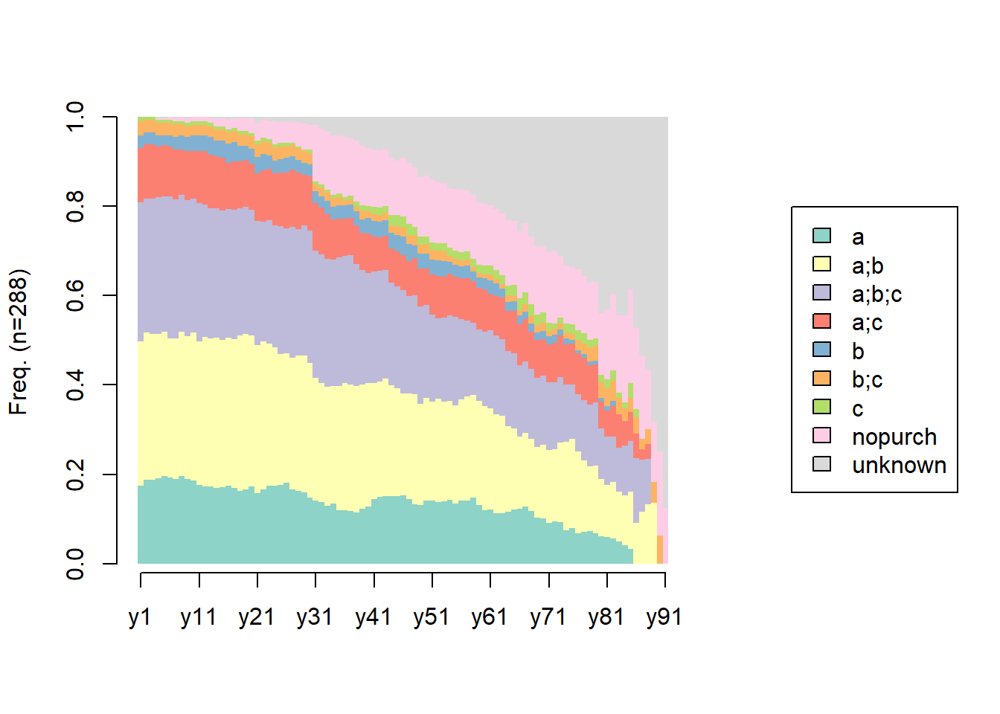
seqdplot(df.seq, border = NA, group = df.feat$sex) # distribution based on gender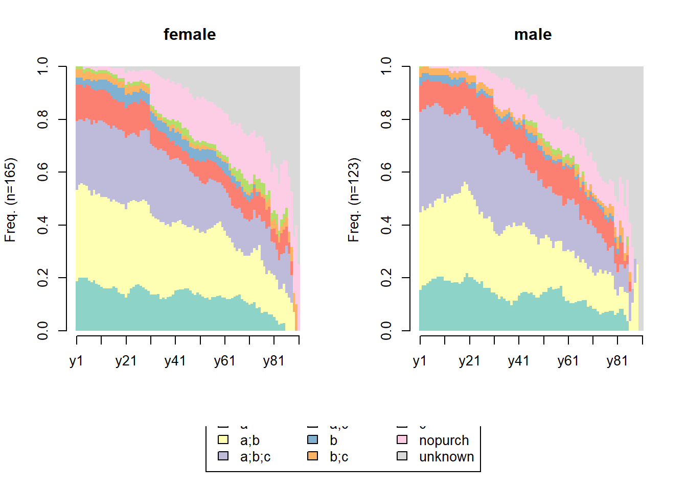
seqstatd(df.seq)## [State frequencies]
## y1 y2 y3 y4 y5 y6 y7 y8 y9 y10 y11
## a 0.174 0.1875 0.1875 0.1910 0.1951 0.192 0.1888 0.196 0.1895 0.187 0.176
## a;b 0.323 0.3299 0.3264 0.3229 0.3240 0.311 0.3147 0.323 0.3193 0.331 0.320
## a;b;c 0.312 0.2986 0.3021 0.3056 0.3031 0.318 0.3112 0.305 0.3053 0.299 0.310
## a;c 0.122 0.1215 0.1215 0.1146 0.1150 0.112 0.1119 0.102 0.1088 0.106 0.116
## b 0.028 0.0278 0.0278 0.0243 0.0209 0.024 0.0280 0.032 0.0316 0.035 0.035
## b;c 0.031 0.0278 0.0278 0.0278 0.0279 0.028 0.0280 0.025 0.0246 0.025 0.025
## c 0.010 0.0069 0.0069 0.0069 0.0070 0.007 0.0070 0.007 0.0070 0.007 0.007
## nopurch 0.000 0.0000 0.0000 0.0035 0.0035 0.007 0.0070 0.011 0.0105 0.011 0.011
## unknown 0.000 0.0000 0.0000 0.0035 0.0035 0.000 0.0035 0.000 0.0035 0.000 0.000
## y12 y13 y14 y15 y16 y17 y18 y19 y20 y21
## a 0.173 0.1725 0.1696 0.1702 0.1744 0.1685 0.1619 0.1655 0.1727 0.1583
## a;b 0.335 0.3310 0.3357 0.3298 0.3310 0.3333 0.3489 0.3489 0.3381 0.3309
## a;b;c 0.296 0.2923 0.2898 0.2908 0.2883 0.2903 0.2842 0.2842 0.2806 0.2770
## a;c 0.120 0.1197 0.1166 0.1170 0.1032 0.1075 0.1043 0.1043 0.1043 0.1079
## b 0.035 0.0387 0.0353 0.0390 0.0427 0.0430 0.0360 0.0324 0.0324 0.0360
## b;c 0.025 0.0246 0.0247 0.0248 0.0249 0.0251 0.0252 0.0252 0.0288 0.0288
## c 0.007 0.0070 0.0071 0.0071 0.0071 0.0072 0.0072 0.0072 0.0072 0.0072
## nopurch 0.011 0.0106 0.0177 0.0177 0.0214 0.0215 0.0288 0.0288 0.0324 0.0396
## unknown 0.000 0.0035 0.0035 0.0035 0.0071 0.0036 0.0036 0.0036 0.0036 0.0144
## y22 y23 y24 y25 y26 y27 y28 y29 y30 y31
## a 0.1667 0.1739 0.1745 0.1758 0.1801 0.1661 0.1624 0.1587 0.1481 0.1407
## a;b 0.3297 0.3188 0.3091 0.2930 0.2904 0.2952 0.3026 0.3063 0.3000 0.2741
## a;b;c 0.2681 0.2754 0.2727 0.2857 0.2794 0.2915 0.2841 0.2915 0.2963 0.2852
## a;c 0.1159 0.1159 0.1164 0.1209 0.1250 0.1292 0.1255 0.1144 0.1222 0.1074
## b 0.0362 0.0290 0.0291 0.0293 0.0331 0.0295 0.0295 0.0258 0.0259 0.0259
## b;c 0.0290 0.0290 0.0291 0.0293 0.0257 0.0258 0.0258 0.0258 0.0259 0.0148
## c 0.0072 0.0072 0.0073 0.0073 0.0074 0.0037 0.0037 0.0037 0.0074 0.0074
## nopurch 0.0399 0.0399 0.0509 0.0476 0.0478 0.0480 0.0554 0.0590 0.0556 0.1259
## unknown 0.0072 0.0109 0.0109 0.0110 0.0110 0.0111 0.0111 0.0148 0.0185 0.0185
## y32 y33 y34 y35 y36 y37 y38 y39 y40 y41 y42
## a 0.1370 0.1296 0.1338 0.1199 0.1199 0.1170 0.114 0.122 0.127 0.144 0.149
## a;b 0.2667 0.2667 0.2639 0.2772 0.2846 0.2830 0.284 0.279 0.277 0.261 0.259
## a;b;c 0.2889 0.2852 0.2825 0.2884 0.2846 0.2906 0.273 0.256 0.246 0.249 0.247
## a;c 0.1037 0.1000 0.0892 0.0861 0.0824 0.0830 0.087 0.084 0.088 0.078 0.075
## b 0.0259 0.0296 0.0297 0.0300 0.0300 0.0302 0.030 0.031 0.035 0.035 0.035
## b;c 0.0185 0.0185 0.0186 0.0187 0.0112 0.0113 0.011 0.019 0.015 0.016 0.016
## c 0.0074 0.0074 0.0074 0.0075 0.0075 0.0075 0.011 0.011 0.012 0.016 0.016
## nopurch 0.1259 0.1296 0.1338 0.1311 0.1348 0.1283 0.136 0.134 0.131 0.128 0.129
## unknown 0.0259 0.0333 0.0409 0.0412 0.0449 0.0491 0.053 0.065 0.069 0.074 0.075
## y43 y44 y45 y46 y47 y48 y49 y50 y51 y52 y53 y54
## a 0.151 0.151 0.151 0.153 0.145 0.133 0.130 0.140 0.140 0.137 0.140 0.142
## a;b 0.263 0.247 0.241 0.227 0.236 0.246 0.227 0.230 0.221 0.232 0.223 0.222
## a;b;c 0.243 0.231 0.229 0.231 0.219 0.221 0.218 0.209 0.196 0.180 0.188 0.191
## a;c 0.076 0.076 0.078 0.079 0.079 0.083 0.084 0.081 0.089 0.094 0.092 0.093
## b 0.036 0.036 0.037 0.041 0.037 0.029 0.034 0.034 0.034 0.034 0.035 0.027
## b;c 0.016 0.016 0.020 0.021 0.021 0.021 0.021 0.021 0.021 0.021 0.022 0.013
## c 0.016 0.024 0.024 0.025 0.025 0.021 0.017 0.017 0.017 0.017 0.017 0.018
## nopurch 0.127 0.127 0.122 0.132 0.136 0.133 0.134 0.136 0.140 0.137 0.135 0.133
## unknown 0.072 0.092 0.098 0.091 0.103 0.112 0.134 0.132 0.140 0.146 0.148 0.160
## y55 y56 y57 y58 y59 y60 y61 y62 y63 y64 y65
## a 0.135 0.140 0.142 0.1475 0.1308 0.1190 0.121 0.1127 0.1133 0.116 0.122
## a;b 0.220 0.226 0.233 0.2304 0.2336 0.2333 0.227 0.2206 0.2167 0.192 0.180
## a;b;c 0.197 0.181 0.169 0.1613 0.1589 0.1667 0.174 0.1765 0.1724 0.167 0.169
## a;c 0.090 0.090 0.096 0.0922 0.0935 0.0952 0.082 0.0882 0.0936 0.091 0.095
## b 0.027 0.027 0.027 0.0230 0.0234 0.0238 0.029 0.0294 0.0197 0.020 0.021
## b;c 0.013 0.014 0.014 0.0092 0.0093 0.0095 0.014 0.0098 0.0099 0.015 0.011
## c 0.018 0.018 0.018 0.0184 0.0187 0.0190 0.019 0.0196 0.0197 0.020 0.026
## nopurch 0.139 0.140 0.137 0.1429 0.1402 0.1381 0.135 0.1373 0.1379 0.146 0.143
## unknown 0.161 0.163 0.164 0.1751 0.1916 0.1952 0.198 0.2059 0.2167 0.232 0.233
## y66 y67 y68 y69 y70 y71 y72 y73 y74 y75 y76
## a 0.123 0.127 0.117 0.102 0.101 0.091 0.094 0.093 0.075 0.0786 0.0682
## a;b 0.160 0.166 0.162 0.159 0.166 0.164 0.163 0.179 0.197 0.2000 0.1818
## a;b;c 0.160 0.160 0.156 0.153 0.154 0.152 0.150 0.146 0.129 0.1214 0.1288
## a;c 0.091 0.094 0.084 0.085 0.083 0.085 0.087 0.093 0.088 0.0929 0.0909
## b 0.021 0.017 0.017 0.017 0.018 0.018 0.019 0.013 0.014 0.0071 0.0076
## b;c 0.011 0.017 0.017 0.017 0.018 0.012 0.012 0.013 0.014 0.0143 0.0227
## c 0.027 0.028 0.028 0.023 0.024 0.018 0.012 0.013 0.020 0.0214 0.0227
## nopurch 0.150 0.155 0.151 0.153 0.148 0.158 0.163 0.139 0.129 0.1286 0.1364
## unknown 0.257 0.238 0.268 0.290 0.290 0.303 0.300 0.311 0.333 0.3357 0.3409
## y77 y78 y79 y80 y81 y82 y83 y84 y85 y86 y87
## a 0.0714 0.0726 0.0672 0.0603 0.0588 0.057 0.049 0.042 0.032 0.000 0.000
## a;b 0.1587 0.1452 0.1513 0.1293 0.1176 0.125 0.111 0.111 0.129 0.091 0.116
## a;b;c 0.1349 0.1371 0.1429 0.1121 0.1078 0.102 0.099 0.111 0.113 0.145 0.116
## a;c 0.0952 0.0887 0.0840 0.0603 0.0588 0.068 0.074 0.056 0.065 0.055 0.023
## b 0.0079 0.0081 0.0084 0.0086 0.0098 0.011 0.000 0.000 0.000 0.000 0.000
## b;c 0.0238 0.0323 0.0336 0.0345 0.0392 0.045 0.037 0.028 0.032 0.036 0.023
## c 0.0238 0.0161 0.0168 0.0172 0.0196 0.023 0.012 0.014 0.032 0.018 0.000
## nopurch 0.1270 0.1290 0.1261 0.1379 0.1569 0.170 0.173 0.194 0.210 0.182 0.186
## unknown 0.3571 0.3710 0.3697 0.4397 0.4314 0.398 0.444 0.444 0.387 0.473 0.535
## y88 y89 y90 y91
## a 0.000 0.000 0.000 0.00
## a;b 0.133 0.136 0.000 0.00
## a;b;c 0.100 0.000 0.000 0.00
## a;c 0.033 0.000 0.000 0.00
## b 0.000 0.000 0.000 0.00
## b;c 0.033 0.045 0.062 0.00
## c 0.000 0.000 0.000 0.00
## nopurch 0.133 0.136 0.188 0.12
## unknown 0.567 0.682 0.750 0.88
##
## [Valid states]
## y1 y2 y3 y4 y5 y6 y7 y8 y9 y10 y11 y12 y13 y14 y15 y16 y17 y18
## N 288 288 288 288 287 286 286 285 285 284 284 284 284 283 282 281 279 278
## y19 y20 y21 y22 y23 y24 y25 y26 y27 y28 y29 y30 y31 y32 y33 y34 y35 y36
## N 278 278 278 276 276 275 273 272 271 271 271 270 270 270 270 269 267 267
## y37 y38 y39 y40 y41 y42 y43 y44 y45 y46 y47 y48 y49 y50 y51 y52 y53 y54
## N 265 264 262 260 257 255 251 251 245 242 242 240 238 235 235 233 229 225
## y55 y56 y57 y58 y59 y60 y61 y62 y63 y64 y65 y66 y67 y68 y69 y70 y71 y72
## N 223 221 219 217 214 210 207 204 203 198 189 187 181 179 176 169 165 160
## y73 y74 y75 y76 y77 y78 y79 y80 y81 y82 y83 y84 y85 y86 y87 y88 y89 y90
## N 151 147 140 132 126 124 119 116 102 88 81 72 62 55 43 30 22 16
## y91
## N 8
##
## [Entropy index]
## y1 y2 y3 y4 y5 y6 y7 y8 y9 y10 y11 y12 y13 y14 y15
## H 0.7 0.7 0.7 0.71 0.71 0.71 0.72 0.71 0.72 0.71 0.72 0.72 0.73 0.73 0.74
## y16 y17 y18 y19 y20 y21 y22 y23 y24 y25 y26 y27 y28 y29
## H 0.75 0.74 0.74 0.74 0.75 0.77 0.77 0.77 0.78 0.78 0.78 0.77 0.78 0.77
## y30 y31 y32 y33 y34 y35 y36 y37 y38 y39 y40 y41 y42 y43
## H 0.78 0.8 0.81 0.82 0.82 0.82 0.81 0.81 0.82 0.84 0.85 0.85 0.86 0.86
## y44 y45 y46 y47 y48 y49 y50 y51 y52 y53 y54 y55 y56 y57
## H 0.87 0.88 0.89 0.89 0.88 0.89 0.89 0.89 0.89 0.9 0.88 0.88 0.88 0.88
## y58 y59 y60 y61 y62 y63 y64 y65 y66 y67 y68 y69 y70 y71
## H 0.87 0.87 0.87 0.88 0.88 0.87 0.88 0.88 0.88 0.88 0.87 0.86 0.86 0.85
## y72 y73 y74 y75 y76 y77 y78 y79 y80 y81 y82 y83 y84 y85
## H 0.84 0.84 0.83 0.82 0.83 0.83 0.82 0.82 0.78 0.79 0.81 0.75 0.74 0.78
## y86 y87 y88 y89 y90 y91
## H 0.69 0.6 0.6 0.43 0.32 0.17df.seq <- seqdef(df.form,
left = 'DEL',
right = 'DEL',
xtstep = 10)## [>] found missing values ('NA') in sequence data## [>] preparing 288 sequences## [>] coding void elements with '%' and missing values with '*'## [>] 8 distinct states appear in the data:## 1 = a## 2 = a;b## 3 = a;b;c## 4 = a;c## 5 = b## 6 = b;c## 7 = c## 8 = nopurch## [>] state coding:## [alphabet] [label] [long label]## 1 a a a## 2 a;b a;b a;b## 3 a;b;c a;b;c a;b;c## 4 a;c a;c a;c## 5 b b b## 6 b;c b;c b;c## 7 c c c## 8 nopurch nopurch nopurch## [>] 288 sequences in the data set## [>] min/max sequence length: 3/91# the 10 most frequent sequences
seqfplot(df.seq, border = NA, withlegend = 'right')## [!!] In local() : withlegend is deprecated, use with.legend instead.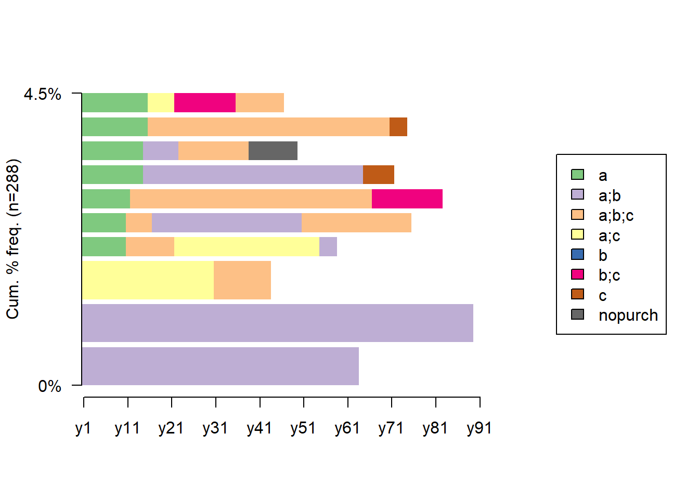
# the 10 most frequent sequences based on gender
seqfplot(df.seq, group = df.feat$sex, border = NA)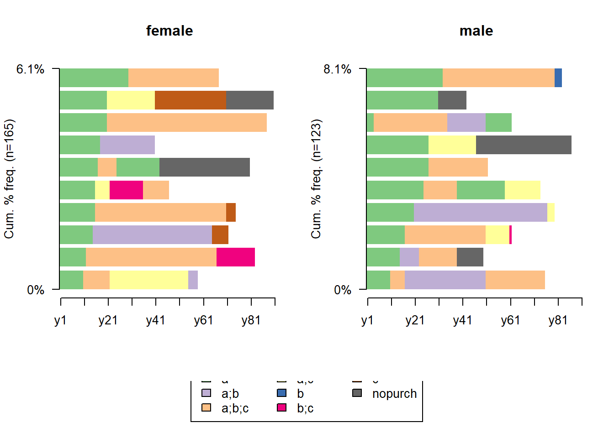
# returning the frequency stats
seqtab(df.seq) # frequency table## Freq Percent
## a;b/63 2 0.69
## a;b/89 2 0.69
## a;c/30-a;b;c/13 2 0.69
## a/10-a;b;c/11-a;c/33-a;b/4 1 0.35
## a/10-a;b;c/6-a;b/34-a;b;c/25 1 0.35
## a/11-a;b;c/55-b;c/16 1 0.35
## a/14-a;b/50-c/7 1 0.35
## a/14-a;b/8-a;b;c/16-nopurch/11 1 0.35
## a/15-a;b;c/55-c/4 1 0.35
## a/15-a;c/6-b;c/14-a;b;c/11 1 0.35seqtab(df.seq[, 1:30]) # frequency table for 1st month## Freq Percent
## a;b;c/30 41 14.24
## a;b/30 40 13.89
## a/30 24 8.33
## a;c/30 15 5.21
## b;c/30 4 1.39
## a;b/1-a;b;c/29 2 0.69
## a;b;c/28-a;b/2 2 0.69
## a;c/15-a;b/15 2 0.69
## a;c/7-a;b/23 2 0.69
## b/30 2 0.69# mean time spent in each state
seqmtplot(df.seq, title = 'Mean time', withlegend = 'right')## [!!] In local() : title is deprecated, use main instead.## [!!] In local() : withlegend is deprecated, use with.legend instead.
seqmtplot(df.seq, group = df.feat$sex, title = 'Mean time')## [!!] In local() : title is deprecated, use main instead.
statd <-
seqistatd(df.seq) #function returns for each sequence the time spent in the different states## [>] computing state distribution for 288 sequences ...apply(statd, 2, mean) #We may be interested in the mean time spent in each state## a a;b a;b;c a;c b b;c c
## 9.7916667 18.0416667 16.4201389 6.6840278 1.9236111 1.4583333 0.8611111
## nopurch
## 6.0694444# calculating entropy
df.ient <- seqient(df.seq)
hist(df.ient,
col = 'cyan',
main = NULL,
xlab = 'Entropy') # plot an histogram of the within entropy of the sequences
# entrophy distribution based on gender
df.ent <- cbind(df.seq, df.ient)
boxplot(
Entropy ~ df.feat$sex,
data = df.ent,
xlab = 'Gender',
ylab = 'Sequences entropy',
col = 'cyan'
)